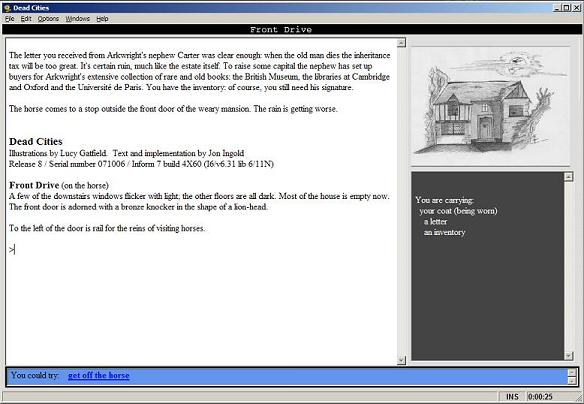
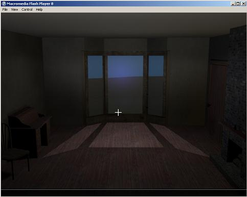
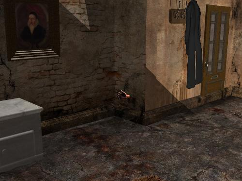
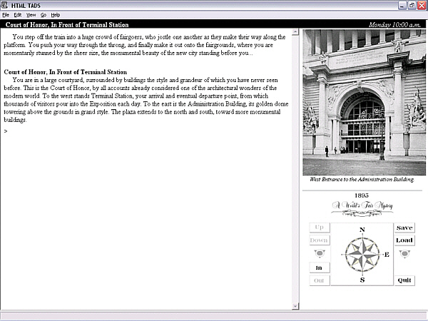

SPAG
The
Society for the Promotion of Adventure Games
ISSUE
#51
SPAG #51 is copyright (c) 2008 by Jimmy Maher.
Authors of reviews and articles retain the rights to their
contributions.
All email addresses are spamblocked -- replace the name of our magazine
with the traditional 'at' sign.
IN
THIS ISSUE
Editorial
IF News
Interviews
with the Top Comp 2007 Finishers:
Sam
Gordon, author of Lord
Bellwater's Secret
Christopher
Huang, author of An Act
of Murder
Admiral
Jota and Grunk, authors of Lost
Pig
The
World of Italian IF: A SPAG
Special Feature
A
History of Italian IF by torredifuoco
Italian IF Interviews:
Enrico Columbini
A Review of L'Apprendista Stregone by Enrico Columbini
Giancarlo Niccolai
Alessandro Schillaci
Roberto Grassi
An
Interview with Peter Nepstad
Reviews
of the H.P. Lovecraft Commonplace Book Project Games
Dead Cities by Jon
Ingold
Ecdysis
by Peter Nepstad
The Cellar by David
Whyld
Handyman Wanted by
Roger Tober and Nige Copeland
Beyond the Threshold
by Thomas 'Nihil' Busse
El Museo de las Consciencias
by various authors
Lieux Communs by
various authors
Other
Reviews
1893: A World's Fair Mystery
by Peter Nepstad
Rendition by
nespresso
Sunburst Contamination
by Fredrik Ramsberg and Johan Berntsson
EDITORIAL
Two people who
played a big role in the history of interactive fiction recently passed
away within a day of each other. You probably know
the identity of one of the figures of whom I will write, as news of his
passing has been all over the Internet and even made its way into the
New York Times.
The other's passing, though, you may not be even be aware of.
The two gentlemen never met one another and moved in very
different spheres, but they do share one thing in common: they both had
immense influence on IF without even seeming to realize it.
What can I say? We swim in a very small pond.
Let's deal with the obvious first: Gary Gygax in the early 1970's
invented a little game called
Dungeons
and Dragons with the help -- exactly how
much help depends
on
who you ask -- of one Dave Arnenson.
D&D begat
Adventure when Will
Crowther, an early enthusiast, decided to try to bring some of his
tabletop RPG experiences to the computer.
Adventure in turn
begot not just more text adventures and in turn this community, but
also graphical adventures and the more combat and simulation focused
genre of computer RPGs. As the years went by, other forms of
computer games in turn co-opted many of the tropes and storytelling
methods of these genres. Meanwhile, computer RPGs went online
and became
MMORPG's, easily the most profitable niche in the modern PC game
market. To say that the modern gaming landscape would look
different without Gygax's creation hardly begins to describe the
situation. Would IF exist today without
D&D?
It's a question I can't answer, of course, although I suspect
it would, albeit in possibly a very different form. Certainly
we would have far fewer games with dragons cluttering up our history.
It's almost criminally easy to make fun of
D&D
and (the stereotype of) the people who play it, of course, and
many of the articles that have greeted Gygax's passing have indulged in
plenty of snark. I understand. It's hard for any
writer to hold back when presented with such a juicy target.
(For an excellent 2006 article that has its fun with
D&D but
gets to the heart of its appeal at the same time, go
here.)
I do wonder whether many of these writers realize, though,
just how influential Gygax's geeky creation has actually been on modern
culture, and not just on gaming culture. I would argue that
the recent glut of big-budget fantasy movies can, for instance, be
traced
back, through many twists and turns and by no means exclusively, to
D&D.
People who have no idea what the game even is are feeling its
influence when they go to their local cineplex.
Gygax himself didn't seem to understand just what he had wrought.
He came to
D&D
from the mathematically rigorous, simulation-heavy world of wargames,
and always seemed to relate to his creation in those turns.
The standard Gygax model for
D&D
involved descending into a generic dungeon just because it was there,
killing everything inside, and taking away the loot. He
played the game not as a shared story or as improvisational theatre but
as a single unit wargame, a series of challenges to be tactically
overcome. As such he was largely an uninterested bystander
for the last twenty-five years of tabletop RPG innovation.
Nor do I suspect he would find much of interest in our work
in this community. Still, he was by all accounts a man who
genuinely loved games, and he began a revolution -- even if almost
accidentally -- in the way we tell, play, and think about stories and
games. Not a bad legacy to have. The bad Hollywood
movies and glut of generically bad fantasy novels all over the shelves
of your local bookstore we'll just agree to overlook.
The other person I want to eulogize here is even more
tangentially
related to IF. Joseph Weizenbaum's passing has not
received
the press of Gygax's, but he is nevertheless a fascinating figure.
You might recognize Weizenbaum as the creator of
Eliza, the first
chatterbot that, in addition to causing a huge stir in the media at the
idea of a computer actually doing something clever and at least mildly
entertaining, was also a big influence on early IF. One can
see
Eliza
in the old Scott Adams games, for instance, where the player is assumed
to be talking to and ordering about a character in the game world.
This "PC" even occasionally talks back to the
"player."
In the modern era we
have largely (though not completely) retreated from this model in favor
of the player directly embodying a role in the game world.
Still, a "game" of
Eliza
is indistinguishable in a casual glance from even a
modern game of IF.
I had always thought of Weizenbaum as just "the
Eliza guy," but
recently dived deeper into his life and work while researching
a
paper on magical and technological AI. Weizenbaum
never had any illusions about
Eliza.
He was bemused and eventually disturbed by the reactions of
people to what was essentially a clever language hack, to the point of
writing
a
book
not about, as one might expect, the wondrous future of computer AI but
rather a scathing critique of the field and a warning about the dangers
of attempting to reproduce the magic of our humanity in a machine.
I think of Weizenbaum's book when I read about research into
creating fully computer-generated stories and when I look at projects
like
Chris Crawford's Storytron
and the fascinating but ultimately frustrating
Façade.
As a newbie IF author just working on his first full project,
I
don't want to let you create your own story with my game. I
want
to rather let you find your own way through
my story.
I don't
want to railroad you or frustrate you, and I want to make the best use
I can of interactivity. Still, while the interactivity may be
yours the fiction is mine. I don't think that the main
strength
of new media storytelling is in becoming a sort of wish-fullfilment
fantasy, a box from which you can get any story you want. I
rather think it is a way of allowing you to engage with characters,
settings, and, yes, story, in a way that is more immersive and
immediate than you might find in a conventional printed work.
A
novel lets you read and imagine a story; IF lets you directly explore
the story. At the core of both, though, must remain the human
author working her magic. IF must be a good faith
relationship between player and author. If the player tries
to
break that bond, acting deliberately out of the PC's character
and
actively attempting to "break" the story in the name of some demand for
absolute freedom, I submit that the fault lies with that player.
In other words, I'm pretty much with
Stephen
Bond on this one. For better or worse, Weizenbaum's
book helped to bring me there.
Here at
SPAG
I've made some
changes, as I'm sure you've noticed. Some of you may not like
it,
but I thought it was time to bring the magazine forward, if not all the
way to 2008 (we do still play text adventures, after all), at least to
the late 1990's. I won't be sending out each issue to
subscribers
anymore, but rather sending a link to the page where you can
read
it. For those who like to print the issue for offline
reading, a
printer-friendly version is still available by following the link at
the bottom of the framing page. Publishing the issues on the
web
page in HTML will allow us to make use of such modern niceties as
italics and boldface, allow other sites to link to individual
articles, and allow us to return the favor. I think it will
make
the magazine easier to navigate, easier to read, and much more
attractive to newbies. Last but not least, it will make my
life
much easier. I really cannot express how painful it is to
edit a
plain ASCII newletter with hard line-breaks. I look forward
to
spending more time drumming up and creating richer content and less
time cursing in front of my text editor. Even if you aren't
sold
on the changes to the delivery model, I hope the content of future
issues will make up for it. I have high hopes and big plans
for
the future!
But we've got a lot to offer right now as well: a great, in-depth
conclusion to our series on foreign IF, with articles, interviews, and
reviews focusing on the Italian community; interviews with the
three top finishers from last fall's Competition, including the newly
annointed XYZZY Best NPC Grunk himself; an interview with Peter Nepstad
about his IF work; and reviews of all the Lovecraft Competition games
plus a few others. Enjoy!
Back to Table of Contents
IF
NEWS
Spring Thing 2008
The Spring Thing 2008 games have just been released. Only
three titles, but at first glance they all look very promising.
You have until April 28 to play the games and submit your
votes.
Third
IF
Whispers Game Released
House of Dream of Moon
is a game written by ten separate authors, each of whom had only the
preceding section to base their own work on.
C-40
Competition Results
The C-40 competition to create games for an imaginary hardware
implementation of the Z-Machine with only 40K of RAM has concluded.
It attracted three entrants, but all by the same author (the
idefatiguable David Fisher) and none of them were actually IF.
Still, they do make an interesting collection of Z-Machine
abuses, and one can never have too many of those, right?
Thanks to Sam Trenholme for running the competition.
IF Art Show 2008
Marnie Parker will be running another IF Art Show this year for more
avant-garde works. The deadline for submitting an entry is
May 2.
ZLR, a new Windows
Z-Machine Interpreter
I don't know about you, but I find it a little mind-boggling that in
this age of Inform 7 text adventures are now bogging down our
multi-gigaherz monster machines. Still, here we are, and
Vaporware is working on an ultra-high performance Windows terp to
address the problem. Now if he can just add Glulx support.
(Another thing that boggles my mind is that even many
moderate-sized games now require Glulx. Ain't progress grand?)
Flaxo,
A Flash-based Z-Machine Interpreter
In other Z-Machine interpreter news, Peter Mattsson is working on an
implementation in Flash. When completed, Flaxco could be a
great
way to offer IF for web-based play. To answer the first
question
that comes to mind: no, it's not hideously slow, at least in running
the (Inform 6) sample game.
Folio
Z-Code Interpreter
And finally, because mankind can never have enough Z-Code interpreters,
we have this cool specimen that renders games in a graphical book
format. Still an early release, but well worth checking out
as a novel (pun intended) new look for IF.
WIDE
Alessandro Schillaci has released WIDE, a Windows IDE for Inform 6
development similar to JIF but written in good old platform-native C++
rather than Java. It's still in beta, but looks quite far
advanced already. See our interview Alessandro in this issue
for more discussion of WIDE.
One-Room
Game Competition Results
The
2007 edition attracted an impressive nine entrants: five in English and
four in Italian. David Fisher's entrant
Suveh Nox was the
winner. Thanks to Francesco Cordella for organizing the
competition.
Treasures of a
Slaver's Kingdom
S. John Ross has created a very, very bad game that he strongly
cautions you not to play under any circumstances.
French
IF Competition
The French IF community's annual competition has come and gone.
Five entrants, the winner being Eric Forgeot's
Les
Heures du vent.
Child's
Play
A new game by Stephen Granade. It's a dog eat dog world in
the
nursery... Stephen has also released his Inform 7 source code
for
the game
here.
DreamPath
Ido Flaishon has designed a new system for creating Choose Your Own
Adventure-style stories. Closed source and Windows only, but
free
for non-commercial use.
Interactive
Short Fiction Competition
IF
Beginner's Comp
Two competitions recently took place, each challenging entrants to
create a game suitable for introducing beginners to IF. They
not
only share a theme, but also four of the same games as entrants.
The difference? Mark Engelber's IF Short Fiction
Competition is judged by its organizer, while the winner
of David
Fisher's (there he is again!) IF Beginner's Comp is determined by
popular vote. It didn't make much difference, though:
Mrs. Pepper's Nasty Secret
by Jim Aikin and Eric Eve won both handily enough.
IF
Cover Art Drive
Emily Short has initiated a project to pair up artistically
challenged authors with artists who have enjoyed their work and might
want to return something in the form of a cool bit of cover art to
advertise and represent their game. Read all about it on
Emily's
blog at the link above, and if you have the talent please think about
helping out.
Legerdemain
Not a traditional IF game, but rather a textual
RPG which, in
its author's words, "borrows heavily from the genres of
Roguelike
games as well as interactive fiction." By Nathan D. Jerpe.
2007
XYZZY Awards
The 2007 winners of the XYZZY Awards, our community's equivalent of the
Grammy Awards if the Grammy Awards didn't suck so bad, have been
announced. Congratulations to all the winners, and especially
to
Admiral Jota and Grunk, whose
Lost
Pig cleaned up pretty good.
PAWS
After a five-year hiatus PAWS (the Python Adventure Writing Systems) is
back. PAWS is, as you might have surmised, a library for
creating
IF using the programming language Python.
Back to Table of Contents
Interviews
with the Top Competition 2007 Finishers
It's been a
long-time tradition with
SPAG
to publish interviews with the top three finishers in each year's IF
Competition. This year, Sam Gordon (author of the third-place
game
Lord Bellwater's
Secret), Christopher Huang (author of the second-place
game
An Act of Murder),
and Admiral Jota and Grunk (co-authors of Comp winner
Lost Pig) were all
kind enough to answer my questions.
Back to Table of Contents
Interview
with Sam Gordon, author of Lord
Bellwater's Secret
Jimmy:
Tell us a little bit about that insignifcant portion of your life
outside of the world of IF. Introduce yourself to SPAG's readers.
Sam: In "real life" I live in England; I'm married, with three
children; and I work as an IT project manager for a large company. I
think my family believe me to be a reasonably normal and well-balanced
individual...with the exception of my interest in the world of IF,
which they regard as a bizarre social aberration, not to be mentioned
in polite company.
In my work I have engaged in collaborative projects with other
companies in the U.S.A., Canada, the Middle East and continental
Europe, so I would like to think that I have gained a slightly greater
"world view" than is sometimes ascribed to my fellow countrymen. The
famous headline "Fog over English Channel: Europe isolated" doesn't
work for me! Although the IF community is probably strongest in North
America, it is actually quite international in its make-up and I think
that adds to its strength and diversity.
Jimmy: How long have you
been interested in IF, and what prompted that interest?
Sam: My first encounter with IF was in 1981. It was my first job in the
IT industry and we were developing embedded systems using the new Intel
16-bit microprocessors of that era. We used Intel's custom development
systems to compile code and download it into target systems and, one
day, one of my colleagues turned up with a floppy disk which he loaded
into the development system and showed me a program called
ADVENT.
I was instantly lost in the world of caves, beanstalks and bears: I
"worked" late into the evening that day, until a company security guard
virtually threw me out of the building at about midnight.
I enjoyed the Infocom games when they came out but rather forgot about
IF until about 3 or 4 years ago when I read something about Inform 6
and, from there, discovered that there was a thriving IF culture.
Jimmy: In addition to
Lord
Bellwater's Secret, you have written two games for One Room Game
Competitions: Final Selection and Urban Conflict. Before we get to
Bellwater, tell us a bit about those games, and about the challenges
that come with writing in such a restrictive format. (Bellwater is
almost one room too,
come to think of it...)
Sam: By nature, I'm a great starter of new things and a poor finisher
of anything (but please don't tell my boss or our clients!) So,
unsurprisingly, I've started writing a lot of games but only finished
the three that you mention. I think perhaps the discipline of working
within the constraints of a single room scenario is good for me in
avoiding over-elaboration and increasing the chances of finishing.
Final Selection
was my first "published" game: at the time I thought that a one-room
game would be a good starting point as I would be able to write it very
quickly. In any event it missed the 2005 one-room competition and I
ended up reworking it for the 2006 competition, so it wasn't very quick
at all.
Final Selection
was an unashamed puzzle game with very little story: a classic
one-roomer, I suppose.
I began working on
Urban
Conflict (along with several other ideas that have never
seen the light of day) almost as soon as as I had finished
Final Selection.
It was inspired by a visit to a museum in Budapest, which included an
interesting exhibit explaining the workings of the Kalashnikov assault
rifle. I wanted to do something quite different from the usual one-room
formula and instead tried to model the interaction of two people,
confined by circumstances to sharing a single room. I think the game
received some credit for being ambitious but was generally not liked as
a game.
Jimmy: Bellwater is one
of the two
top three finishers from this Competition that have no supernatural,
magical, or science fictional elements at all. That's rather unusual
for a genre that is still somewhat dominated by fantastical stories.
Any thoughts on this? (Boy, that's vague, huh?)
I'm not very confident in my own writing ability and I suppose I have
been rather unambitious in terms of the actual story-telling of my
games. I am enormously impressed by authors who can write good fantasy
- and for me that means creating a world that is entirely convincing
and consistent, in which the laws of physics may not be the ones we are
accustomed to, but there are some consistent laws in place,
nevertheless. Tolkein was a master of that: Isaac Asimov, Philip
Pullman and J K Rowling are pretty good too. Come to think of it, I
also admire the more whimsical (and less consistent) fantasy writers
like Douglas Adams as well, but I've never tried writing anything
whimsical.
I have toyed with writing something a bit more magical: one of my
unfinished games involves replacing all the usual "game rules" with a
completely different set if the character happens to be holding a
particular magical object:. For example they can "see" inside closed
containers which they examine. However, I'm making no promises about
whether this will ever be finished!
Jimmy: Bellwater had a
really nice
Victorian feel to its scenery and its writing. As someone who
has
read way more Dickens, Trollope and Brontë sisters
than is healthy for anyone, I just have to ask whether you are a fan of
this era of literature?
Sam: Thanks for the kind words about
Bellwater!
Dickens is certainly one of my favourite authors: he was a wonderful
storyteller and created such vivid characters. I would definitely
include "David Copperfield" in my list of 10 favourite books of all
time! Dickens wasn't a conscious influence on
Bellwater
but was probably lurking somewhere in the background (come to think of
it, "Lord Bellwater" almost sounds like a name out of Dickens). Also,
it's difficult to write that sort of genre without a nod to Conan
Doyle. I have to confess to not much liking the Brontës....and
I
have already been severely reprimanded by one Competition judge for the
fact that none of the Brontës' titles appear in Lord
Bellwater's
private libarary! At the time I was working on Bellwater, I had just
been rereading some of Daphne du Maurier's novels. Although they were
written much more recently, they have some similarities with the
Victorian novels with, for example,
My Cousin Rachel
being set in the 19th century and being pervaded by a vivid sense of
impending doom. Although I wasn't directly trying to copy her writing
style or mood, I was certainly influenced.
Jimmy: Your game made a
great point
of always telling me where I was in the room. For instance,
when
I examine the desk after looking at the bookshelves I see this: "You
turn from the bookshelves and walk over to the desk." I can't say this
annoyed me, but I was a little confused about why the game was so
concerned with informing me of my position. Was I just missing
something obvious?
Sam: I did something similar in
Final
Selection
as I wanted to create a sense of space and movement, although I was
restricting myself to the single room. I decided to do the same with
Bellwater,
with the same intention. One of the difficulties with a one-room game
is that it can seem as though you are standing still, surrounded by a
heap of objects and I certainly wanted to avoid that. I wouldn't try to
use it for anything other than a (predominantly) one-room game. For
those interested in the actual writing of code, I would add that behind
the scenes, the game is actually implemented as several "rooms" at the
code level, although all remain "in scope" all the time. This has the
advantage of managing some of the potential disambiguation problems
(the game assumes that the player is more likely to be referring to an
object in the current area, rather than a distant corner of the room,
for example). However, the automatic movement between areas of the room
ended up getting very complicated: if the player types GET KEY, for
example, the game can easily move the character to the part of the room
where the key happens to be; however LOCK DOOR WITH KEY presents a lot
more problems for automated movement, particularly if, for example, the
player is in the fireplace, the key is by the window and the door is at
the other end of the room!
Jimmy: I was a bit
frustrated that I
couldn't get an unequivocally happy ending out of the game, to the
point of replaying several times in the hope of seeing same. Why did
you decide to leave even the winning ending rather mixed in tone?
Sam: Yes, a lot of people were unhappy with the ending! I tried writing
several different endings but was unconvinced by an unequivocally happy
one. One of the themes of the game was supposed to be the iniquities of
the British class system (although I certainly wasn't trying to ram
that down the player's throat). I felt that even with the protagonist
being successful in his quest for justice, it would be most likely that
the British establishment would close ranks and deny him his full
inheritance
Jimmy:. Huge compliments
on the
design of the puzzles, which were clever but always fair and solvable,
and on the way you took into account so many incorrect actions the
player might try, such as hiding in the fireplace and trying to ambush
her attacker. Any thoughts on either of these choices, or the general
design of the game as a whole, to share?
Sam: Thanks again for the compliments! The feature that people have
commented on most favorably was the bookshelves - people seem to have
amused themselves either with taking volumes at random from the shelves
or looking up their own favorites in the index. Several have asked me
if there are really 1200 books on the shelves, like it says in the room
decription. (In fact there are only about 50 titles implemented, but
they are allocated to their positions on the shelves only when the
player tries to remove them.)
A wall safe is always a bit of a cliche. In real life, you don't leave
the combination lying about, but in IF you have to let the player find
it. In
Bellwater,
I think the
player has to put together the information from three sources and use a
bit of logic to work out the combination. I thought this was fair (and
I'm glad you agree).
The final puzzle that allows the player to escape from the room was
made unneccessarily hard by some rather weak implementation. I'm fixing
this in a bug-fix version of the game.
Jimmy: I concur with
your assessment.
I thought the safe puzzle was great fun, and was able to
solve it
on my own. The final puzzle, on the other hand, got me
because
the game didn't understand GO THROUGH WINDOW or even ENTER WINDOW, only
EAST. Grr... Anyway, moving on...
Did you play the other
Competition games? Favorites? Impressions?
Sam: Yes I played most of the games. I thought that almost
all were very solid and competent but that
Lost Pig
stood head and shoulders above the rest, and well deserved its winning
position. The character of Grunk and his style of speaking were
beautifully depicted and that illusive "sense of immersion" was fully
realized.
Jimmy: Are you working
on anything now? Can you tell us about it?
Sam: Although I have quite a few partially-implemented games, I am not
really working on anything definite (apart from a bug-fix version of
Bellwater that just
tidies a few things up).
[Fix
that window! -- Jimmy]
Ideally I would like to try a collaboration with another writer. I
think that working with someone else could be great fun. I often feel
that IF is more like drama than literature and it would be interesting
to work with someone who has had some experience of acting or writing
for the stage. However, even just a different perspective would be
useful. I think, for example, that
Urban
Conflict
could have been a much better game if I had worked with a collaborator
and we had worked together on the relationship between the two
characters. However, life outside IF is quite busy at the moment and I
don't want to start scouting around for a writing partner until I can
definitely commit some time to the project.
Back to Table of Contents
Interview
with Christopher Huang, author of An
Act of Murder
Jimmy:
Tell us a little bit about your life when you aren't writing
IF.
Interests, job, geographical location, etc. Whatever you feel
comfortable sharing and that won't attract Internet stalkers...
Christopher: I work in an architectural firm in Montreal. And
yes, I did sketch out floor plans for the house in
Act Of Murder.
In my downtime, I while away the hours playing games, unless it's
November in which case I'm writing for National Novel Writing Month.
Jimmy: So, ten years or
so since your
last full-fledged effort, the very well received Muse: An Autumn
Romance. You are part of an interesting pattern of IF authors
popping up again from out of nowhere. (As I write this, Brent
Van
Fossen has just released a new version of his old classic She's Got a
Thing for a Spring after a similar delay.) What prompted you
to
write some IF again?
Christopher: Well, I remember talking quite a bit about writing
something big -- well, bigger than Speed-IF anyway -- after
Muse,
but Real Life got in the way. By the time I caught my breath
again, I'd forgotten too much about Inform and about the
groundwork for any other projects I had percolating at the time to get
started again. Then Inform 7 came out, and I didn't have to
relearn anything after all: relearning a coding language is boring as
hell, but starting afresh is easy and interesting.
Jimmy: I'm frankly in
awe of the
randomization in your game, not only because it exists at all but also
because it works so seamlessly. The plot never feels clunky
at
all. Tell us how you approached the design. And
just
exactly what all is randomly determined on each playthrough?
Upon
first playing, I assumed the game just worked like Infocom's Moonmist,
selecting from a handful of pre-designed scenarios. Now,
though,
I realize what it does is much more intricate and impressive.
Must have been a nightmare to test the thing...
Christopher: I'd actually been wanting to do something like
AOM
for years now. I first started out with something with a cast
of
about 20 to 30 characters, one of whom would be randomly picked for a
victim, and eight others who'd be randomly picked to be present in the
game as suspects. As you might imagine, that was rather a bit
more than I could chew.
Later on, I thought to approach it from a different angle.
Instead of looking for interesting suspects or stories, I started with
the mechanics instead. I took the classic "method, motive,
opportunity" schtick: two people to be cleared by mutual alibis, one
person who couldn't have done the deed in the way it was done, and one
person with an "anti-motive" -- that is, someone who would have wanted
the victim alive rather than dead. That gave me four innocent
people, and of course one more for the guilty party. After
that,
it was just a matter of creating characters who would fit into the
mechanics, and developing a story that would work. Also,
picking
weapons that would fit the requirements.
A lot of this is thanks to Inform 7's table function. The
game would probably not have been possible otherwise.
Jimmy: One thing
distinctive thing
about both Muse and Murder is the fact that they both take place in our
own everyday, mundane reality, without the science fiction and fantasy
tropes that still tend to dominate IF. What led you to set
your
games in "reality-based" worlds?
Christopher: To be honest, science fiction tends to turn me off; space
stations, alien planets, high technology, that sort of thing usually
makes my eyes glaze over, unless something special catches my attention
really really quickly. As for fantasy, I'm pretty
neutral.
I figure that if something has fantasy elements in it, the story had
better be something that cannot be properly told without them; and none
of the stories I've come up with so far have required fantasy elements.
But, I love mystery stories, particularly those written between the
1920s and 1940s. So that's what I tend to read.
And, as I
said, I'd been wanting to do something in that genre for years.
As for
Muse...
well, I'd been
reading a lot of Anthony Trollope at the time, particularly Trollope's
Barsetshire Chronicles. The first line, "The summer of 1886
found
me..." had been percolating in my head for quite a while.
(Believe it or not,
Muse
was
once intended to be a mystery story. The murder or murders
would
take place in Barchester, and Rev Dawson would solve them from
Switzerland via telegrams to and from his sister Emma.)
Jimmy: Always great to
talk to
another Trollope fan! Dickens is good, but Trollope is
better,
and really deserves more exposure in America. I spent much of
2007 reading all six Barsetshire novels...
Another thing I notice about both games is that you are trying to tell
quite subtle (by IF standards) stories in each. Let's take
them
one at a time, if you don't mind talking about your earlier game too
much. Muse is a Victorian romance. How difficult
did you
find it to translate such a concept into the IF world of objects and
puzzles? How successful do you feel you were?
Christopher: I never really thought of
Muse
as a "romance" in the popular sense of the word; to me, it was a story
about one man's mid-life crisis: the fact that Rev Dawson is just 1
year short of 60 is a lot more significant than he ever cares to admit,
and add to that the life of strait-laced rectitude that his occupation
implies.
A number of puzzles had occurred to me before I even began. I
don't know if I thought they were anything special, but I do remember
being rather pleased with how well they fit into the story.
In
terms of success as puzzles, I think they were, for the most part,
satisfactory. Perhaps the puzzle involving the changing of
rooms
could have been better clued....
The one puzzle that I think was not so successful was the conversation
with Konstanza. It was a bit of a last minute thing: I'd just
read about "conversation mazes" and decided that I had to have
something of the sort in the game. Unfortunately ... well,
you
only have to look at something like
Galatea to see how
such a thing should have been done!
Jimmy: Similarly, An Act
of Murder is
a classic locked-house murder mystery which forces the player to
grapple with ephemeral concepts -- alibis, motives, and methods --
rather than locked doors, mazes, etc. I thought you made
heroic
efforts to make this feel natural for the player, but also felt the
game fell a bit short at times here too, in that I wasn't always quite
sure how to translate the notion in my head into actions in the
gameworld. (No shame there, what you were attempting is just
SO
difficult.) Any thoughts about trying to map the logic of a
mystery novel onto a development library still to some extended focuses
on creating more Zorks?
Christopher:
AOM
is more a
meta-mystery, I guess. I'm still rather pleased with the
master
table that organises all the suspects and the roles they are to fill in
the story, but I don't know if there's any engine within that could
lend itself to a development library. Otherewise, I was
mostly
just learning as I went along.
Jimmy: Act of Murder has
an unusual
number of well fleshed-out NPCs for an IF game. Tell us about the
process of designing and coding them.
Christopher: The mechanics came first, and the suspects were drawn up
to fill the spaces that the mechanics required. When I first
began coding, I had a bunch of names and no story, no way to actually
relate them to each other. I knew I wanted a "man of action"
character -- the Colonel Mustard archetype -- so I randomly assigned
that to the suspect labelled "A" in my notes ... and voila, Alexander
Wolf. Then, a woman in a wheelchair, because I just like the
imagery ... a prissy, superior, socialist-type ... someone related to
the dead man ... and someone in a position of trust, like a lawyer or a
manager. As the story fell into place, so did the suspects'
characters and their relationships towards each other. I do
remember that the animosity between Cedric and Deborah was a fairly
late development, for instance.
Coding them was largely about giving them things to say in response to
the player's questions, since there wasn't much else for them to do
or react to. And you can never code in enough
responses,
once you set down that road. In this case, a lot of their
speech
was peppered with if/otherwise conditions, to mesh with the scenario as
currently set up. I do think there's a lot more that could be
done (but which I doubt I'd get around to doing!). In the
case of
their alibis, I had to pull out whole new set of rules to deal with all
the if/otherwise conditions.
Jimmy: One problem that
has plagued
earlier IF mysteries was the necessity to be in the exact right place
at the exact right time to spot suspicious behavior. You
avoided
this by setting your game after the crime is already complete and
giving your player a fairly static crime scene to explore, which
enhances playability at
(perhaps) the expense of a certain element of drama. Any
thoughts on the tradeoffs you made here?
Christopher: I do miss the action. There is a possibility, in
one
scenario and one scenario only, of causing Elinor to move to the
Terrace and Benedict to refuse to answer any more questions, but that
was the only "action" I managed to put in during the game.
And there'd actually been even less action to begin with: I'd initially
put all the details of the case in a text-dump right at the beginning,
and had the player start out in the Study, having already presumably
met all the suspects. Some testers complained that they
didn't
have a good grasp of who the suspects were, and some said the text-dump
was a bit too much information all at once, so I created the
introduction sequence.
Jimmy: So, you just got
paid $500 for writing IF! That's unusual. What will
you do / have you done with the money?
Christopher: Bank it. I am a parsimonious, miserly wretch and
I like to see my bank account grow.
Jimmy: In this you are a
man after
Trollope's heart. He kept careful track of the exact sum
earned
by each of his books, almost down to the shilling, and gave this
accounting prominent place in his autobiography. Needless to
say,
his reputation among the art for art's sake crowd was destroyed forever.
But back in the world of
IF... Did you spend time with the other Competition
games? Favorites, impressions, opinions to share?
Christopher: I did play most of the other games. I did enjoy
Orevore Courier,
despite what I said earlier about my gut reaction to science fiction:
it caught me early with the PC's attitude, and then there were
pirates. Pirates are cool. Plus, I'm rather fond of
games
like this, where a lot of it is about managing and controlling the
reactions between the different elements.
I know I spent an inordinate amount of time on
Slap That Fish! and
Jealousy Duel X,
trying to get everything perfect.
I couldn't get very far into
Press
[Escape] To Save,
but it reminded me of Rybread Celsius so much that I wondered if this
might in fact have been him come back, as it were, from the
dead.
His early games, however flawed, had a certainly exuberance that I
rather miss.
Jimmy: Will we have to
wait another
decade for your next game, or do you have plans to work on something
before then? Any hopes / plans / ideas for a next game you
might
be able to share?
Christopher: Oh, I'm thinking of a new release already. Of
course, that's what I said ten years ago, after
Muse. I
don't know. Perhaps you'll have to wait for Inform 8!
Jimmy: Congratulation on
your excellent Competition showing, and thanks again for doing this
interview for SPAG's readers!
Christopher: You're welcome!
Back to Table of Contents
Interview
with Grunk and Admiral Jota, co-authors of Lost Pig
Jimmy:
First of all, SPAG is of course a family publication, so I just need to
confirm from you before continuing, Grunk, that you are in fact wearing
pants at the moment.
Grunk: Grunk not just wear pants. For this, Grunk wear
two
pants. But wearing two pants not easy, so Grunk put one pants on leg
and other pants on head. Pants on head not very good pants because them
have big hole. (Not have hole before Grunk put pants on, so Grunk think
maybe putting on boots before Grunk try putting on other pants not help
there.) Pants with hole not good for covering Grunk up. But hole good
for looking out of.
Jimmy: I've read all
that over very
carefully, but I'm still not actually sure whether you are fully
covered in all the important places. Perhaps we should just
wipe
that imagery out of our heads and move on...
Grunk, those of us who
have read your
blog already know a bit about your personal history, particularly
illustrious military career. Perhaps, though, you could fill
in
the blanks a bit to describe your pre-military, pre-farmhand doings,
and also to tell us what you have been up to more recently.
Grunk: Before Grunk work on farm, Grunk at home with mother and father.
(Before that, Grunk at home with mother and father and brother, but
then Grunk brother join army.) Then one time Grunk walking down road
and see tasty pig. So Grunk get hungry and eat some pig. Then man come
out and yell at Grunk, say Grunk pay for pig. But Grunk not have any
coin! So man say, Grunk work and pay for pig that way. That how Grunk
start working on farm.
Now, Grunk not even in army any more. That because army not there any
more. Place where army at all fall down. Fall on top of Grunk boss in
army, so now Grunk just work for Grunk. Live in woods with some friend
from army that not in army any more either, looking for person that
give coin and food and thing if Grunk wave sword and go "RARRR!". There
lots of person that pay coin and food and thing for good "RARRR", so it
all work out OK.
Some time Grunk tell story too.
Jimmy: I think I speak
for everyone when I say we can't wait to hear it.
How did you end up with your own doman name? Very unusual for
an orc...
Grunk: Grunk not know how that happen either. Grunk never say that it
OK! Not know what "domain" mean, but that not mean it OK if it take
Grunk name. Grunk ask Prgukar, and him say Grunk should get "lawyer".
But it turn out that "lawyer" not really kind of spiky club. It just
kind of person. Oh well.
Lawyer say that now Grunk get to share name. Then lawyer take all Grunk
coin. Next time, Grunk just use spiky club.
Jimmy: Jota, your life
has not
received all the public exposure of Grunk's. What sort of
things
do you get up to when not writing IF with Grunk? How long
have you
been interested in IF? Tell us a bit about yourself, please!
Jota: By day, I'm a software developer in New Hampshire. By night, I
fight international crime using a legion of remotely-controlled
cybernetic cantelope from my command center deep underneath a converted
textile mill in downtown Manchester.
However, of more interest to your readers is how I first started
playing IF. My very first exposure to it was sometime around 1990 (give
or take), when I was about thirteen. My parents gave me a copy
of
Star Trek:
The Promethean Prophecy for
the Apple IIgs. I had fun not just playing the game, but also trying to
figure out how the underlying logic worked. (For instance, DAMAGE was
implemented as a verb meaning "TELL ME ABOUT..." -- presumably to
facilitate parsing lines like "SPOCK, DAMAGE REPORT".)
A few years later, I started playing Sierra's
Space Quest and
King's Quest
games illicitly in the High School computer labs. A friend suggested
that if I liked those, I might be interested in this other game, and he
showed me a copy of
Zork
I.
There
are more of these? I
thought. One thing led to another, and eventually I was downloading AGT
(since it was for writing adventure games, whereas most of the Internet
resources I found only seemed to be for something called "Interactive
Fiction"), and the rest just followed naturally from there.
Jimmy: I had that Star
Trek game too,
and also hacked the hell out of it trying to figure out how to actually
beat it. I'm not at all convinced today that it actually was
possible to beat, at least in the Commodore 64 version I had.
Still, remembering that game brings the warm fuzzies in a big
way, even if reading the manual that promised the
ability to
do all kinds of things that didn't actually work when you tried them in
the game (again, at least in the Commodore 64 version) was more fun
than actually playing. Sometimes I think about trying to
implement something like the game described in that manual (as opposed
to the one on the disk), because I've never seen anything quite like it.
How did you come to the
name Admiral Jota?
Jota: High School Spanish class. Everyone had to take a Spanish name.
Since I used to be called by my initials ("JJ"), I just translated that
directly ("Jota Jota"), and then shortened it to just one J.
The "Admiral" part was more of a joke. When you play videogames where
you fly around in spaceships and blow things up, everybody wants to be
the ship's captain, right? Well, I did that one better. Once I got
online, it's what I used whenever I went somewhere that wanted a "full"
name, rather than just a simple handle. Before I knew it, it had become
my semi-official nom de 'Net.
Jimmy: While you have
plenty of
Speed-IF and IF Whispers collaborations to your credit, this is your
first attempt at a fully-fleshed, polished game I believe...
Jota: What, you don't think
Pass
the Banana was fully-fleshed out and polished?
Jimmy: Actually...
Jota: Well?
Jimmy: Well...
Jota: Hello?
Jimmy: You see...
Jota: Oh, alright.
Jimmy: ... ahem... I
think everyone
was impressed by Lost Pig's level of polish: the translation
into
Grunk's "unique" diction was accomplished seamlessly, the one
significant NPC (no, not the pig, although he was cool too) felt very,
very alive, etc. As I wrote in my review, any game that
understands REACH IN CRACK WITH POLE has officially impressed
me.
Perhaps you can tell us about the game's development history.
Jota: The original concept came to me in 2003. It was shortly after I'd
run out of steam at keeping up Grunk's journal. Stephen Granade had
decided to save himself a little work by building a web form to let the
ifComp authors input their game info themselves (the lazy bum). He
wanted some folks to test it for him, so I just tried sticking in some
silly stuff: author? "Grunk"!... title? oh, something dumb...
Lost Pig...
subtitle? uh, let's make it a dungeon crawl...
And Place Under Ground.
Then Stephen said "You should write that!" And I thought, "Ha ha,
right! Hmm..." After that, every once in a while the idea would bubble
up to the surface of my brain again, and I'd think about possible
puzzles or objects or interactions, maybe take a few notes, and then
completely forget about it again.
Then in 2006 I sat down and wrote the whole thing in a month or so
(much of which was spent battling the Z-Machine's 64kB limit for
writable memory).
Jimmy: I thought your
use of a TADS 3
like conversation system worked really well, aided of course by the
fact that you wrote out an absolute sledload of responses for our little gnome
friend. Any thoughts on conversation in IF?
Jota: I think conversation in IF should be tailored to fit the game in
question.
Since
Lost Pig
is essentially
a puzzle game in the old-school dungeon crawl style, I felt like it
should have a topic-driven conversation engine, like the old ASK/TELL
systems. Thus, all of the dialogue in the game is represented as simple
topics that can be accessed at any time (once Grunk has been exposed to
the subject in question) with the TALK ABOUT command (for which ASK and
TELL are just synonyms). These topics are parsed like any other game
object, and are moved into scope as Grunk learns about them.
On the other hand, the game is also driven by the Grunk's unique
perspective, so I wanted the way conversation was presented to reflect
his thought processes. Presenting a small selection of the topics that
he might happen to be thinking about at the time seemed like a good way
to represent this, and displaying them in the stilted syntax of IF
commands complemented Grunk's own style of speech.
As for the sheer number of topics, that's purely because of my own
style as a player: when I'm playing IF, I tend to try almost everything
that I think of, and as an author, it seemed only natural to give
responses to the things that I would have tried if I myself were
playing the game. In fact, there are many supported topics which are
never explicitly mentioned as dialogue options. The current version of
the source (which I'm in the process of revising to remove a few bugs
that were in the comp release) contains about 250 topics altogether.
Jimmy: Wow! I
think a new standard has just been set...
Grunk, please move on and do not read the rest of this
question. Thanks!
Jota, I have to tell
you, I sometimes
get the impression that Grunk is not, shall we say, the brightest bulb
in the chandelier. Was he REALLY able to rescuse the pig and
escape from underground by solving all those complicated
puzzles?
I sometimes got the feeling his adventure might have been embellished a
bit when translated into IF...
Jota: Well, I'm pretty sure he did get back with the pig somehow, and
I'm almost certain the gnome was real. But to be absolutely honest, I
strongly suspect that gnome might have offered him a bit more help than
Grunk really wants to admit. I mean, if it were me,
I certainly
wouldn't have just sat there the whole time while an orc rooted through
my home trying to find useful objects...
Jimmy: Okay, Grunk,
thanks for not
reading that last one. This one is just for you. Will we ever
see
more blog entries from you, or better yet a new IF adventure featuring
you? Or perhaps being the world-famous star of a Comp-winning
game will just keep you too busy?
Grunk: Lots of thing happen to Grunk, when Grunk still in army and
after Grunk in army and before Grunk in army and in between time too.
Grunk still like telling story about thing that happen to Grunk. But
not know yet how Grunk tell next story that Grunk tell.
Maybe next time, it just normal story like in journal where Grunk talk
and other person just listen. That less work than this kind of story.
But maybe Grunk make it one long story that have beginning and end, and
not have lots of little piece like journal. Or maybe Grunk do some
other thing that not like either one at all. Maybe next time Grunk just
do song and dance instead. (Probably not, though. Grunk not very good
at dancing.)
Jimmy: What will you do
with the $500
Lost Pig earned you? (Or perhaps I should say what have you
done...) Did you divide the cash 50-50?
Jota: My part of the money is sitting in the bank, happily earning
interest (interest which is helping to finance my melon-bot army, of
course).
As for Grunk's share, we couldn't find a good method of currency
exchange, so I set him up on eBay instead. I had to explain to him what
most of the things were, of course. He ended up picking out an old
color Game Boy, a copy of
Super
Mario Brothers, and several cases of spare batteries.
Grunk: Little man hit brick and coin fall out. Grunk hit brick and
Grunk hand hurt. Grunk play some more, maybe find out what Grunk doing
wrong. Maybe Grunk need eat more mushroom.
Jimmy: Did you get a
chance to play through the over Comp games? Favorites?
Impressions?
Jota: I did play through some of them, although I didn't have time to
play them all. From what I did play, I was especially impressed
with
An Act of
Murder. He
did a great job of matching his writing to the style of the genre, and
the gameplay was solid -- a good game even without the randomization
and replayability. I wouldn't have felt bad taking second place to it.
Jimmy: And finally, what
are your future plans, Jota? Working on anything now?
Jota: For non-IF, even though I'm not updating Grunk's journal, I do
periodically write short pieces of my own still, such as the series of
posts starting
here
and continuing on succeeding days.
For IF, I'm working on a collaboration at the moment. It's a humorous
fantasy puzzle game as well, but it's otherwise completely unrelated to
Lost Pig.
I'm doing the design
while my collaborator is coding it. It's in Inform 7, a language which
I personally find nearly impossible to write in, so it'll be
interesting to see how that works out.
Back to Table of Contents
The
World of Italian IF: A SPAG
Special Feature
For over a year now,
SPAG has
been running a series of features that highlight the histories and
cultures of the various non-English IF communities. In this
issue we wrap the series up with an examination of Italian IF.
We will begin with a general history, followed by interviews
with several key players and a review of an exceptional classic Italian game.
Huge thanks go out to
torredifuoco,
who has been absolutely tireless in putting most of this together.
Back to Table of Contents
A
History of Italian IF by torredifuoco
Enrico Colombini: the Beginning
(1982-1985)
The first Italian piece of IF was
Avventura
nel Castello (
Castle
Adventure) by Enrico Colombini, released in 1982. He
developed it on an Apple ][, after he had met with
Adventure at an IT
fair two years before. Like in Cinderella's tale, he played
only one (quite long) game, and then the very next day didn't
find the colossal cave on that monitor. He had to wait until the game
showed up on a diskette disguised as
Apple Adventure.
Only then could he study some code and began developing
something in Italian. He came up with a well-designed quest set in a
Scottish castle which players must escape -- alive -- using a two-word
parser. He soon found a distributor, J. Soft (a division of Gruppo
Editoriale Jackson, an Italian IT publisher). His game sold
well enough throughout the country, even though Apple ]['s weren't
terribly common computers in Italy.
In 1984 J. Soft came to an arrangement with Apple Computer Italy, and a
second version of the game was bundled with the Apple //c.
Meanwhile, videogame publishers and computer magazines
started pushing interactive fiction. Users switched from consoles to
microcomputers, and the computer market became wild. Piracy was
commonplace. The Commodore 64 was the king of micros,
followed by the Sinclair ZX Spectrum (aka Timex Sinclair in the USA).
Many users played IF works written in English.
Gruppo Editoriale Jackson brought out three books about writing IF with
Basic during 1985: Mike Grace's
Avventure
e Commodore 64 (translation of
Commodore 64 Adventures),
and two books by Colombini -
Scrivere
un gioco d'Avventura (
Writing
a Text Adventure Game) and
Avventure (
Adventures). These
latter two were the better by far. The author's witty style and
up-to-date information trumped the competition.
Scrivere un gioco
d'avventura featured the annotated source code of an
example game for the Apple ][, easily portable to other microcomputers,
while
Avventure
described the development of a mini-adventure and was bundled with some
software: two example games and a tool called Modulo BASE (BASIC
Module) for five machines -- the Apple ][, IBM PC, Commodore
64, Sinclair Spectrum and MSX. Italian IF players now had the
tools to become authors.
Bonaventura Di Bello and
the Newsstand (1985-1988)
As a consequence, in 1986 J. Soft released some good titles by new
authors in a variety of ways. Some were bundled with Jackson's
magazines, such as
Etrusk
by Marcello Giombini; others were sold by mail-order through ads in
magazines,such as
Il
Mistero della Piramide (
Pyramid Mystery) by
Enrico Ragaini. Another popular title was
Missione Odessa (
Odessa Mission) by
Paolo Giorgi. All displayed the telltale signs of Colombini's
Modulo BASE working under the hood.
However, Colombini wasn't the only coder in town. Others developed
their applications or used other tools. It is possible that
no Italian software house devoted itself exclusively to IF because
piracy strangled the software market. Everybody could find
copies of the latest games everywhere: from friends, from computer
shops and, last but not least, from the newsstand! In the
latter case, they changed titles, rewrote credits and added some
instructions in magazines.
There were a few exceptions to the rule. Let's take a step
back to 1985, a great year for Italian IF. The newsstand
offered original software, too - i.e. IF works written in Italian.
It all started from a collaboration between Arscom (a
"software house", or coders' team) and Edisoft (publisher) giving birth
to a magazine, Next Strategy, that developed new Italian IF for the
Commodore 64. They hit the market with series of
adventure lines each featuring its own hero. Games were written in
BASIC, but made use of Assembly routines to to display
graphics. Here started the first golden age of Italian IF.
It lasted for three years, from 1985 to 1987.
Edisoft's formula was imitated by a number of publishers,
which is not surprising: in three years they sold about ten different
collections of magazines totalling about sixty issues and over 170
games, mostly for the Commodore 64 but also for the Sinclair Spectrum
and MSX, written by a collection of about ten authors. Quite a feat.
One of the most talented, fondly remembered, prolific, and quickest IF
authors of all time was one of the "dirty ten". His name is
Bonaventura Di Bello (aka BDB), who wrote over seventy pieces in about
a year. I should add that about twenty more were conceived
and written for Sinclair ZX Spectrum during the previous six months.
BDB began on the Sinclair Spectrum after he being fascinated by Artic's
Adventure A: Planet of
Death. He decided to try his hand at IF
development and bought an authoring system, Gilsoft's
The Quill, which
came bundled to
The
Illustrator, an application that allowed authors to add
images to their work. Soon he had completed his first piece
in Italian,
Dimensione
Sconosciuta (
Unknown
Dimension), allowing it to circulate freely, with his
address on the splash screen. He even submitted his game to a
competition hosted by a magazine named
Load'n'Run.
Its first prize was a Sinclair QL, the most powerful of the
Sinclair computers. He wasn't allowed to participate, but they offered
him a fee to properly publish the game. In the meantime, and thanks to
the free circulation, a publisher, Edizioni Hobby, contacted him
because they needed a coder who could crank out three adventures every
month for the Sinclair Spectrum.
In 1986 Edizioni Hobby started a magazine,
Epic 3000, with
three new games for Commodore 64 by Arscom and three for Spectrum by
BDB. It lasted seven issues, and then was replaced by two
magazines,
Explorer
and
Viking.
Arscom fled to another publisher while BDB remained to attend to the
new projects.
Explorer
appeared in late 1986 with three games per month for the Commodore 64
and three for the MSX, and for the first seven issues these were
portings of those he wrote for
Epic
3000;
Viking
came out in early 1987 with three games per month for the Commodore 64
and three for the Sinclair Spectrum, and these were totally new.
These two project lasted about a year each --
Explorer for twelve
issues,
Viking
for eleven - but games were written for a twelfth issue of
Viking.
This totals 69 different games plus three unreleased, each one ported
to two machines. Though the magazines eventually died,
players loved them. Indeed,
Explorer and
Viking lasted
longer than any similar publication.
Let's look at these two magazines. They weren't too elaborate
but rather had a home-grown feel; there was little artwork.
However, they offered all a text adventure fan could want: IF
reviews, sometimes hardware reviews, a few technical articles about
authoring, introductions and solutions to bundled games. Most
importantly, they encouraged their readers to communicate with them, be
it through phone calls or letters or the questionaires they included
asking for feedback about players' preferences and thoughts.
They were open to ideas and collaborations.
BDB wasn't solely responsible for the many games. There were
some -- about ten -- collaborations. Gian Paolo Gentili
contributed most of all, but Max Di Bello, Adelaide Mansi,
Nick Carpentieri and Lisa Serlini also participated. Max Di
Bello and Francesco Gasparro gave sometimes a little help in the tech
department. BDP followed the Arscom model, featuring
well-defined heroes that could reappear in later adventures.
He gave life to about forty different PCs, of
which most appreciated appeared in perhaps four or five games.
Every PC was tied to a genre, such as science fiction,
horror, western, fantasy and so on. If I had to compare his
games to those of another author I would choose Scott Adams, only with
better room descriptions and a generally less minimalist approach.
The games also featured graphics. BDB had good
design and writing skills that compensated for the intrinsic
limitations of
The Quill.
In fact, he used
The
Quill and
The
Illustrator for the Commodore 64 and Sinclair Spectrum,
but adapted Colombini's Modulo BASE for the MSX - omitting the graphics.
Colombini was like a prezzemolo, as we say in Italy.
Prezzemolo, or parsley, we put everywhere, in every
recipe. In 1987 he released the third (still commercial)
version of
Avventura
nel Castello for MS-DOS, distributed by Hi-Tech, while in
1988 the second edition of
Avventure
came out with a more powerful version of Modulo BASE and a new
ambitious example game,
L'Apprendista
Stregone (
The
Sorcerer's Apprentice).
However, the glory days were almost over. After
Viking went out of
print nothing appeared to replace it; the Italian IF market was
collapsing. To release for the newsstand meant to work at a
loss, and momentum seemed forever lost even outside Italy.
Infocom itself survived for only a couple more years.
The Dark Age (1989-1999)
The early 90's saw all the remaining software houses publishing to IF
quitting the business -- Infocom, Level 9, Magnetic Scrolls, etc.
IF went out of fashion. Computer magazines weren't interested
anymore. The reign of the 8-bit machines came to an abrupt
end with the arrival of the new 16-bits -- Amiga, Atari ST,
IBM compatibles and so on. The concept of shareware was
spreading, and the World Wide Web slowly gained ground.
In Italy hardcore IF fans kept writing IF as a hobby.
Roberto Barabino is one of the authors who was active during
this period, and is appreciated as a good writer and a good
coder. In 1991 he released a humorous piece for the Amiga,
Ullisprick, as
freeware and it passed from disk to disk as in the old days.
Some lucky players got their hands on the collections of IF games that
came out in 1991 and 1992,
The
Lost Treasures of Infocom I & II and
The Magnetic Scrolls Collection I.
Meanwhile, rec.arts.int-fiction was created as well as the IF Archive,
and in 1993 Graham Nelson released his specialized IF programming
language, Inform, as freeware.
The late 90s were the years in which IBM compatibles and the Internet
had their boom - at least in Italy. It started very well: in 1995 there
was the first IF Comp, in 1996 Activision released the
Masterpieces of Infocom
CD.
During 1996 the Italian scene began to show some vitality: Colombini
released
Avventura nel
Castello for PC as freeware and Barabino finished two
titles,
Alieni per
Sempre (
Aliens
Forever) and
Vanilla,
written with Visual BASIC. IF developers weren't very
well-organized but in 1998 Ilario Nardinocchi
nevertheless released out his translation of the Inform library into
Italian.
A New Rise: the Italian
IF Community is Born (1999-2003)
The Big Bang that would mark the beginning of a new era for Italian
IF soon to followed. During early 1999 the
initiative of a few gave birth to a new IF community. Simone
Zanella created a website, IFItalia, with a specific aim: to
collect and make available the Italian production of games,
articles, walkthroughs, etc. Months later, he was among the
successful promoters of it.comp.giochi.avventure.testuali, the Italian
IF newsgroup, and wrote its manifesto. Then came an IRC channel
dedicated to IF.
The newsgroup was soon invaded by graphic adventure players whose
concerns were of course off-topic, but they eventually found another
group for their discussions. icgat became the place where IF
fans gathered to discuss ideas and start projects. Two
examples: the Avventura dell'Anno (Adventure of the Year) Award and
Progetto Lazzaro (
Project Lazarus).
The former was a prize given to the best game of the year and
the latter a website managed by Sauron and devoted to the search for
commercial games and magazines from the 80s with the purpose of
preserving them.
Other important developments during 1999 and 2000 included the beta and
first version of Giovanni Riccardi's Infit (another translation of the
Inform library) and his translation of two example games, and two
translations by Paolo Vece -- Adam Cadre's Gull manual for
Glulx and Kent Tessman's Hugo Manual. There were also a lot of new
games by new authors and a couple of new authoring systems: Paolo
Lucchesi's
MAC
(
Mystery Adventure
Creator) and Colombini's
Idra (
Hydra).
Colombini also released one of his books, and all the bundled
software, as freeware.
Throughtout the following three years the Italian IF community grew
stronger and stronger. Although Zanella stepped away from
IFItalia because he lacked spare time and the website wasn't updated
again until 2003, icgat worked like a charm. Another shared
project was the translation of the
The Inform Beginner's Guide
by Roger Firth and Sonja Kesserich; many people took part in it.
Vincenzo Scarpa was writing a book on authoring IF with
Inform in which his annotations and explanations about the
Ruins source were
the main course. The number of games written during those
years steadily increased, reaching about fifteen games per year
in 2002 and 2003. In 2001 Colombini released another
version of
Avventura
nel Castello, this one for the Apple ][, and its source as
freeware. In 2002 Francesco Cordella organized his first ORGC
(One Room Game Competition). In 2003 Riktik, using a CMS,
revived
IFItalia,
which was hosted again in the same domain thanks to the kind initiative
of Tommaso Percivale. There was also the first title released
for Roberto Grassi's From Hell project, which was an effort to
stimulate the production of remakes/portings, giving new authors
material to practice with. Finally, during late 2003
Terra d'IF (IF-Land)
#1 came out: this Italian IF webzine was another idea by Grassi.
Of course he found many contributors among icgat denizens.
Losing the Grip?
(2004-2008)
Recent years have featured some ups and downs.
First of all the good news: many interesting projects and ideas took
shape. There were some translations, including the second
edition of the
IBG
(2004); the third edition of the
IBG
(2006), entitled
Guida
a Inform per Principianti or
GIP and translated
by many authors;
Guida
a Inform-Glulx (2006) or
GIG which included
the Inform Release Notes,
Gull
and other texts and was translated by Marco Falcinelli and Paolo
Vece; and
Il
"Bibbione di Glk" (
The
"Big Book of Glk", 2007) which included Andrew
Plotkin's Glk API Specifications 0.7.0. and other texts and
was translated by Lorenzo Marcantonio. Vincenzo Scarpa
released his book,
Come
Scrivere (e Giocare) delle Avventure Testuali in Inform e Glulx
(
How to Write (and Play)
Text Adventures with Inform and Glulx, 2006). In
2005 Rob Grassi announced a new Italian software house devoted to IF,
Mondi Confinanti (Bordering Worlds) and the same year took second place
in the IF Comp with
Beyond
(written in collaboration with Paolo Lucchesi and Alessandro Peretti),
as well as two XYZZY Awards. He also started a Google Group,
rakontointeraktiva, about localizing IF-specialized programming
languages. Alessandro Schillaci produced some interesting
software:
JIF
(2004), the
SGW
(
Simple Glulx Wrapper)
library and
StorylandOS
(2005),
IFPEN
(2007) and a beta of
WIDE
(2007). The ORGC is also still there, solid as a rock.
But there was some bad news too: in late 2006
Terra d'IF died
after just ten issues.
Progetto
Lazzaro was temporarily frozen some years ago, and and
still is today. But worst of all, since 2004 the production
of new games has dropped considerably. Due to this,
the Avventura dell'Anno Award is not given anymore. At least
half of the community's recent production consists of one-room games;
the Italian IF community really should write more IF nowadays.
Comps & Awards
There are two traditional events that capture Italian authors'
attention: the Avventura dell'Anno (Adventure of the Year) Award, a
prize given to the best piece of the past year; and the ORGC (One Room
Game Competition), for games that take place in a single room of course.
Avventura dell'Anno was created by the initiative of
IFItalia and icgat
denizens in early 2000, and it lasted until 2004. Hopefully
it isn't gone forever. Hosted by many dedicated individuals
that did the dirty work, it worked this way: they nominated games
through a thread on icgat and then sent votes by e-mail to the host.
The rating methods varied as years went by, as the award
became more and more similar to the XYZZY Awards, with sub-categories,
a ceremony on the #if IRC channel, and real prizes too.
Winners of the award:
1999
Non
Sarà un'Avventura (
It Won't Be an Adventure)
by Roberto Barabino
2000
Uno
Zombie a Deadville (
A
Zombie in Deadville) by Tommaso Caldarola
2001
Enigma
by Marco Vallarino
2002
La
Pietra della Luna (
The
Moon Stone) by Paolo Lucchesi
2003
Filaments
by JB Ferrant (Italian translation by Marco Totolo)
The One-Room Game Competition arose from an idea which struck Francesco
Cordella in 2002 while playing Andrew Plotkin's
Shade.
His first reaction was to write a game,
L'Avventura del Ciclope
(
Cyclops Adventure);
then an article; finally, he thought about a competition.
He hosts this comp on his blog,
L'Avventura è
l'Avventura (
Adventure
is Adventure) . He sometimes gets some help by others,
especially when he enters a game of his own. The first ORGC
took place in 2002. Since then only one year has
been missed, 2004, due to a postponed deadline. Competition
rules have stayed almost unchanged from the beginning, except for a
major variation in 2003, admitting games written in any foreign
language.
Winners of the competition:
2002
L'Artificiere
(
The Artificer)
by Paolo Lucchesi, Sting1, Percy
2003
Il
Barile di Amontillado (
The
Barrel of Amontillado) by Marco Dattesi
2005
L'Armando
by Andrea Rezzonico
2006
Final Selection by Sam Gordon
2007
Suveh
Nux by David Fisher
Authoring Systems
Italian developers wrote a number IF authoring systems or editors
supporting, but the truly important ones, which allowed authors to
build really good games, were few: Enrico Colombini's Modulo BASE
(BASIC Module),
Idra
(
Hydra) and
Paolo Lucchesi's
MAC
(
Mystery Adventure
Creator).
Let's start with the beloved Modulo BASE. His first version
came out in 1985. As the name suggests, it isn't a system but
a module written in BASIC that provides a framework for would-be
Italian IF authors. Its merits shouldn't be underestimated;
it showed newbies how a program like these works, the inner secrets of
adventure games. It is well-designed, simple and
flexible. And It came with some great documentation -- two
books worth -- explaining all the tricks. Although it didn't
give authors a complex world model and featured only a two-word parser,
it was a good starting point for developers because they could build
upon it. Do you need a three-word parser? No problem, a coder
could put Colombini's routines to good use, modify this, add that and
there you go. The first version featured short room
descriptions, similar to those by Scott Adams, but hackers could easily
modify this too. In 1988 its author released a second version
written with GW-Basic for MS-DOS with some major changes.
Messages (nearly all the text) were put in an indexed text
file and authors could insert common commands between text chunks -- a
sort of embryo programming language. The new tool
borrowed a few ideas from the Infocom games, such as room description
management. In 1999 both versions, with example games and one
book, were released as freeware.
Paolo Lucchesi's MAC for DOS, Windows and Linux systems
appeared in 2000. It's a simple scripting language (sources
can be compiled) that allows the creation of old-school IF.
Lucchesi was inspired by Brian Howart's
Mysterious Adventures
and Gilsoft's
The Quill.
No structured world model yet but the parser understands up
to four-word commands. MAC supports .png graphics regarding
rooms and messages with some restrictions in the allowed image size and
color palette. Four standard definitions files that contain
predefined verbs and system messages in two languages, English and
Italian, are provided. Despite authors complaining about a
few design oddities that could be improved, the language was used to
write about a dozen titles in Italian between 2000 and 2003, which
isn't bad at all.
In 2000 Colombini brought out another freeware tool, Idra, written with
HTML/Javascript and designed to create hybrid games that resemble text
adventures or simple Choose Your Own Adventure-style games but
make use of a point-and-click interface. With this tool
developers can build applications which don't qualify as "games"; in
fact it is used mainly outside the Italian IF community.
Of course Italian authors are also able to write IF with a specialized
programming language, Inform, and another well-known English tool,
ADRIFT, thanks to the effort of a few dedicated individuals who
translated libraries and files.
Regarding Inform: the first translation was released in 1998 by Ilario
Nardinocchi, who mantained it till 2002. His translations
continued through the Inform 6/10 English library.
Giovanni Riccardi released the first version of his
translation, Infit (Inform in Italiano), in 2000. His latest
release was Infit 2.5, which appeared in 2004. It supports
Glulx and the English Inform 6/11 library. Inform 6 with
Glulx is by far the most highly-regarded system among Italian IF
authors.
Throughout 2004 Roberto Grassi worked on producing an Italian version
of ADRIFT. His latest release is version 1.5, and he has also
found the time to write three tutorials on the system.
Today much is going onbehind the scenes. Roberto Grassi is
again attending to an ambitious project: a translation of the Hugo
library. Giancarlo Niccolai is going to build an IF engine
with Falcon, his recently-devised programming language.
Giovanni Riccardi once said he would like to rewrite Infit from the
ground up and is having a at the Inform 7 library... Well,
time will tell.
Remarkable Games
Alieni per Sempre
(
Aliens Forever)
by Roberto Barabino.
Avventura nel Castello
(
Castle Adventure)
by Enrico Colombini and Chiara Tovena.
Beyond by
Mondi Confinanti (Roberto Grassi, Paolo Lucchesi and Alessandro
Peretti).
Cosmic Adventure
by Davide Orlandi.
Enigma by
Marco Vallarino.
Flamel by
Francesco Cordella.
Forma Mentis
by Paolo Maroncelli.
Il Barile di Amontillado
(
The Barrel of
Amontillado) by Marco Dattesi.
Il Mistero di Rocca Ventosa
(
Rocca Ventosa's Mystery)
by Lorenzo Carnevale.
Il Mistero di Villa Revoltella
(
Villa Revoltella's
Mystery) by Michele Susel, Liviano and Lorenzo Mos.
Il Principe dei Ladri
(
Thieves' Prince)
by Riktik.
Kazan by
Francesco Cordella.
La Pietra della Luna
(
The Moon Stone)
by Paolo Lucchesi.
L'Apprendista Stregone
(
The Sorcerer's
Apprentice) by Enrico Colombini and Chiara Tovena.
Little Falls
by Mondi Confinanti (Alessandro Schillaci, Roberto Grassi and Enrico
Simonato).
Lo Scarafaggio
(
The Cockroach)
by Carcosa Edizioni (Fra Enrico and Kewan).
Natalie
by Fabrizio Venerandi.
Non Sarà un'Avventura
(
It Won't Be an Adventure)
by Roberto Barabino.
Schizo by
Tommaso Caldarola.
Terry Jones - L'Occhio
del Condor (
Condor's
Eye)
1
&
2 by
Bonaventura Di Bello.
Uno Zombie a Deadville
(
A Zombie in Deadville)
by Tommaso Caldarola.
Vanilla
by Roberto Barabino.
War Mage
by Giancarlo Niccolai.
Italian IF links
IFItalia
(archive)
Informazioni
(programming language - I6 translation)
Terra d'IF
(webzine)
Alessandro
Schillaci's website
Bonaventura Di
Bello's blog
Enrico Colombini's website
Francesco
Cordella's blog
Giancarlo Niccolai's blog
Marco
Vallarino's website
Paolo
Lucchesi's website
Roberto
Grassi's website
Tommaso Caldarola's
website
Acknowledgements
I'd like to thank a bunch of people whose writings helped me in various
ways:
Back to Table of Contents
An Interview with Enrico
Colombini (conducted by torredifuoco)
In 1982 Enrico
Colombini wrote and sold the first text adventure in
Italian,
Avventura
nel Castello (
Castle
Adventure),
for the Apple ][. In 1985 he published two books
about
writing text adventures which were hugely successful in popularizing
the genre. Along with the books came a tool written in BASIC,
named Modulo BASE (BASIC Module), and more games:
L'Astronave Condannata
(
The Doomed Spaceship)
and
L'Anello di
Lucrezia Borgia (
Lucrezia
Borgia's Ring),
for five different microcomputers. Later, in 1988,
he
revised one of his books and made Modulo BASE more powerful.
A
new game for MS-DOS,
L'Apprendista
Stregone (
The
Sorcerer's Apprentice), showed off the new features.
He developed another small example game,
Il Drago delle Caverne
(
Cave-Dragon),
for a course in BASIC in 1989. These programs were
updated
and refined until 1999, when they were released as freeware along with
the book
Avventure
per MS-DOS (
Adventures
for MS-DOS).
In 2000 he released another tool, Idra (Hydra), for
writing
Choose Your Own Adventure-style games in JavaScript. In
short,
he's a living legend, but don't mention that to him or he
will scold you.
torredifuoco: Enrico, I
wrote a short introduction but it isn't enough. Could you tell the
readers a little about yourself?
Enrico: As a teenager, I guess I could be classified as the
quintessential nerd: from Meccano to electronics, I was in full control
of technology... and of little else. I read a lot, though, so I had the
seeds of my redemption in me. Now I'm married, we have a son and I just
lead a quiet life: I've always been a quiet type, but I never ceased
being a nonconformist and an idealist, whatever the price (and it can
be quite high, at times). I'm sitting at my desk, but my mind is still
adventuring out there, as always. What never ceases to amaze me is
that, of the many things I designed in electronics, software and
publishing, only adventure games survive in the collective memory: they
probably happened to be born at the right time (I suppose there's a
humbleness lesson in that).
torredifuocot: People
still remember
you today mainly because of Avventura nel castello, even
outside
of Italian IF circles. Let's talk about it. How did you decide to write
your first text adventure? I'd like to hear about the design phase,
too. You credit your wife, Chiara, as co-author... Lastly, why did you
choose a (Scottish) castle? Can you recall any source of inspiration?
Enrico: As I wrote (in Italian) on my site, the inspiration came
from
Adventure,
i.e.
The
Colossal Cave, more exactly from the 350-point 1980
version we played on my brand new (well, new for me, but actually quite
used) Apple ][.
We (Chiara, my friends and I) played it a lot: it was fascinating and,
above all, it was something utterly new. However, the "no save" feature
was irritating; I couldn't get around it by copying the save file
between game sessions, because the disk was protected, so I decided to
look into it. I wrote a primitive disk analysis utility ("DAN"), found
out the protection system (it was just a different sector coding
scheme), removed it and added the save/restore commands. I also had a
look at the code, of course, but I wasn't particularly impressed with
what I saw.
More or less at this point we said "This idea is great, why don't we do
something like it in Italian? We can do it better". So the design phase
started.
Now, "design phase" is a rather pompous expression: in fact, we just
thought about it from time to time, came up with ideas and discussed
them. That's my standard way of designing when I'm not under pressure,
and it usually works well because my subconscious mind does all the
work: I just have to be patient and wait for the results. Chiara had an
important role in the design: she discussed, corrected, often rejected
my ideas, besides of course contributing with original ideas of her own
(we can't really remember which one of us had which idea).
As soon as we had a minimal map and some puzzles in place, I started
coding in the evenings. I was the coder, because Chiara wasn't really
interested in programming on personal computers (she worked in assembly
language on microprocessors at the time).
The first program was rather primitive, sort of many big
IF...THEN...ELSE with just PRINTs for output, but it worked and it was
promising enough to push us forward. We went on for a couple of months
adding locations and puzzles, until I hit the memory barrier: the texts
filled the 48 kB (actually, rather less in practice) available on my
Apple ][.
So I learned to effectively use the floppy disks and moved all texts to
an indexed file to free RAM, then redesigned the program to be more
table-driven and, generally speaking, saner. As a side-effect of the
program's growth, I encountered two new problems: the extreme slowness
of BASIC's garbage collection (it could hang the machine for many
minutes at unpredictable times) and the relatively long time it took to
look for a word (parsed from user input) in the dictionary. So I did a
good thing and a bad thing.
The good thing was studying the insides of Applesoft BASIC and reading
around a lot, which lead to a simple but very effective way of
partitioning strings in two areas: "collectable" and "non-collectable".
As the vast majority of the strings were constant, this approach did
away with the garbage collection problem completely.
Of the bad thing I did I'm still a bit ashamed: having had no exposure
to computer science and algorithms, I was naively doing a linear
search. A simple binary search would have solved the problem with
minimal effort but, being unaware of it at the time, I did what I knew
how to do: I recoded the linear search in assembly language. It worked,
of course, but it's still a dark stain on my (otherwise almost decently
clean) programming history scroll.
The game progressed and evolved, design and implementation going
hand-in-hand, and a few more months went by while new ideas and puzzles
were added. We certanly had many sources of inspiration, first of all
the large number of games I played: I'm sure some ideas were stol...
er, inspired by early adventure games, but it's difficult to remember
what came from what (for example, somebody pointed out the similarity
of the plane-crashing introduction with
Cranstor Manor,
which I vaguely remember playing, but I've no idea when I played it).
The "graphic" fall from the plane came from
Adventure's chasm,
of course, while the maze was patterned after that of Umberto
Eco's
The Name
of the Rose;
being tired of senseless mapping, I had long been thinking about a
non-conventional maze and the library in that book gave me the right
idea. Speaking of non-conventionality, the whole game was designed to
be a challenge to "standard" ways of problem-solving in games (such as:
"go and kill 'em all") and we're rather proud of the results.
Testing played a very important role too: during many months, I looked
at friends playing and took note of everything they wrote, however
strange or unexpected (especially if strange or unexpected!) then added
most of it to the game. I think this should actually be considered part
of the design: in fact we were using other people's minds in addition
to our own.
About the choice of a Scottish castle background, I really have no
idea: perhaps it was the influence of Stevenson's books, or Poe's, or
some gothic novel... but when (many years later) we actually went to
visit the wonderful country of Scotland, we were happy to realize that
we'd been rather accurate in our settings.
torredifuoco: You
managed to
sell Avventura nel castello, you're one of the few Italian
authors
who made some money with this kind of software. I know you began by
selling it yourself (and this reminds me of Roberta & Ken
Williams). What problems did you face? Was it hard to find a software
house, later? Could you inform readers about the Italian software
market in the 80s? Your game had a long life: three commercial
editions, and the third was for MS-DOS. At the end of it, did you get
rich?
Enrico: At the beginning, it was just a favour a couple of friends did
me: they had this computer shop (possibly the first one in my town)
where we exchanged knowledge and tools, and they sold... well, they
sold 12 copies around the end of 1982, according to my records.
Next year, the publisher I had begun writing technical articles for
(Gruppo Editoriale Jackson) started a software marketing division
(J.Soft), so I was able to propose them a couple of games,
including
Avventura
nel castello (which had just won 1st prize at the first
Italian computer game contest,
Computer Play 83).
With the support of their computer magazines, they sold about 600
copies and, more importantly, managed to reach an agreement with Apple
Computer Italy to have the games bundled with the new Apple //c, so a
lot of people was able to play them. The other two games (my board
game
Melopoli
and a friend's well-designed strategy game,
Signori della Galassia
[
Lords of the Galaxy])
made a less-lasting impact, though.
The software business didn't prove to be a stellar success, due to
hostile conditions in Italy, i.e. few computers around, lack of
technical culture, and widespread piracy (often done in full daylight
by the resellers themselves and sometimes tolerated if not encouraged
by some hardware vendors - Commodore comes to mind).
I still hoped to be able to live by designing and selling games, but it
proved to be impossibile. In the meantime, other countries were
starting a real computer game industry; I even made a half-hearted
attempt to contact a French publisher, but to no avail (I've never been
good at marketing).
The nail in my ambition's coffin came when Apple declared it wanted no
games for the Macintosh (I was developing one at the time). I continued
to earn my bread (and butter too) with computer courses and
encyclopedias; as for the games, alas, I had to content myself with
playing them, usually on the IBM-compatible PC that was fast becoming
the new standard after Apple's marketing suicide (but this is another
story).
Anyway, I wanted people to be able to play my games, so I made an
MS-DOS version. It was a complete redesign, based on a specialized
language I had been designing, and it taught me a lot. For example, I
learned that using a specialized language to write IF is not
necessarily a good idea, at least when the author is also a decent
programmer (later, I got much better results by using a hybrid
approach).
Ah, the MS-DOS version sold about 100 copies through Hi-Tech (for which
I was writing on a magazine for Apple users); a much, much larger
number of copies was undoubtely pirated, but at that point I cared more
for diffusion than for income.
About getting rich... well, I made millions! Unfortunately I got the
timing wrong: the Euro wasn't there yet, so they were million liras, to
be scaled by about a 2000:1 factor. But, technically speaking, text
adventures made me a millionaire.
You mention Roberta & Ken Williams: they were undoubtely
pioneers,
and I enjoyed some of their early graphic adventures, but the IF
authors I loved were in the Infocom camp, Steve Meretzky above all but
many others also (by the way,
Enchanter gave me
the basic idea for
L'Apprendista
Stregone).
Most of their adventures had good stories, good prose, good
ideas
and good care of detail. It was good, while it lasted.
torredifuoco: After your
first game,
you hit bookstores with two books, Avventure (Adventures)
and Scrivere un gioco d'avventura (Writing a Text Adventure
Game).
The first included an audio tape or diskette with three programs: two
example games (L'Astronave Condannata and L'Anello di Lucrezia
Borgia) and the tool you used to write them (Modulo BASE). It was quite
a plain tool and you chose BASIC. Did you have a model in mind, i.e.
Scott Adams' adventures? Did you look for a wider audience? Now I can
say you had a deep impact on (nearly all) Italian IF developers:
everybody strove hard to add features, and someone (i.e. Bonaventura Di
Bello) even sold games which had your tool as backbone.
Enrico: Actually, the title I requested was
Imparare il BASIC scrivendo
avventure (
Learning
BASIC by writing adventures)
but my publisher didn't like it and publishers are always right (I
mean, their checkbook is). The idea was... well, self-explanatory:
programming was pleasure and no degree was needed to learn it.
The only model I had in mind was the engine of
Avventura nel castello;
Scott Adams' interpreters were designed to save every bit of RAM in
really small machines, while I worked in comparative luxury and had no
such need for data compression. However, my engine was too complex for
beginners to handle and for me to explain in a decent way, so I made it
simpler by cutting off features; for example, objects couldn't have
states anymore (e.g. a bone that could be whole or broken), but had
instead to be replaced by a different object (a whole bone, a broken
bone).
To my amazement, the 'reduced' engine proved in some respects better
than the original, and certainly easier to use. Redesigning after a bit
of experience can yield better results, especially when the aim is to
distill and preserve the essence, discarding redundant junk.
Later, the second version of Modulo BASE reintroduced some
useful
concepts, such as indexed files on disk and a few (often-used) commands
embedded in messages, reaching a good balance (as I see it) between
power, flexibility and ease of use.
Most people, however, were contented with the capabilities of the first
version. It was simple code (at places rather primitive), but I had
thought about the underlying concepts for years, so it was an useful
tool. Others, such as Bonaventura Di Bello you mentioned, exploited it
to the core and beyond: one Sunday morning he called me (waking me up)
asking, if I remember well, how to ease some of the program's intrinsic
limits (for example, the maximum number of different words, which
wasn't as simple as it sounds). Version 2 didn't exist yet, so I gave
him some suggestions that he put it to good use: he released a string
of acclaimed games for the newsstand, some of which used my tool. At
last, that's how I remember it; I hope I'm not confusing him with
another power user... you know, old age and all that... I'm sure about
the phone call, though :-)
About Modulo BASE, the program had a simple 2-word parser but
I
still think, after all these years, that a more complete and
'realistic' parser and world model don't necessarily imply more
enjoyable games, even if they would certainly be more interesting from
an AI (artificial intelligence) perspective and in view of
(always-almost-here-but-never-quite) real speech recognition. I feel
that's very easy to fall in love with technology and forget playability.
torredifuoco: L'Apprendista
Stregone is your favourite, and I like it very much too. It's an
ambitious work though you claim you wrote it in a fortnight. Did
anybody help you? You had it well planned in advance, right? I guess
you had a deadline you couldn't miss: do you work better under
pressure? It has an iffy vibe I can spot also in your previous example
games: you paid particular attention to the story. What about
characters (human or not) and setting? Where did you find the magic
system idea?
Enrico: Chiara contributed, as usual; her classical knowledge was very
useful, even if I too know, er, should know, a tiny bit of Latin (but,
sadly, no Greek). Choosing appropriate names for the spells was an
amusing exercise.
The claim that it was written in a fortnight is true... the trick is in
the "written". The design took much longer, as usual: we let ideas
float and slowly take form, not unlike crystals (with or without flaws,
it's for the players to decide).
The forest, for example, came from a trip to Saltzburg: we admired it
while comfortably traveling by coach, and wondered about it. On the
other hand, we carefully avoided putting in the game the incongruous
gnome-miner that sat in the famed salt mines of that beautiful town. I
suppose he's there for American tourists to admire, or at least I hope
so. But I digress.
The not-to-be-missed deadline suddenly appeared when my publisher asked
me to add something for the new edition. I really cared to see
L'Apprendista Stregone
published, so I put in long hours for a couple of weeks.
I don't know if I actually work better under pressure: the only sure
thing is that I work more ;-)
The magic words idea was unashamedly lifted from Infocom's
Enchanter,
but left for the player to discover, while the narrative approach was
of course a design choice: I wanted people to enjoy the story and the
settings without having to draw complex maps or to solve fiendish
puzzles. The challenges I chose to put in were mostly of the 'lateral
thinking' type and I'm quite satisfied of the result, even if I'd have
liked some extra time for refinements (but then I'd surely have asked
for more).
For the main characters, the old mage Artemio and his young apprentice
(the player), I can think of no definite source; it's a common theme,
after all. But we had fun placing ourselves in the game, even if
there's little resemblance with the originals: for example, Chiara does
not do fortune telling but writes programs... uhm, actually, now that I
think of it, unpredictabilty plays a big part in both jobs. As for
myself and the illusionist... after all, games are a sort of illusion,
aren't they? By the way, my math professor scolded me for dropping out
of the University, so I made her do the same in the story, disguised as
an old wizard.
Lastly, I liked the name I chose for 'my' character, so I adopted
"Erix" as my signature on the Net, in those misty pre-Web times, and
I'm still happily using it.
torredifuoco:
With Idra you
steered the wheel towards CYOAs. Could you briefly introduce this tool
to readers? Why did you develop it? You didn't release any CYOA, indeed
the two examples included in the package are by other authors. I can
assume you like this form, and maybe you read similar books in the past
or shared this liking with friends.
Enrico: I'm not sure about Idra being exactly a Choose Your
Own
Adventure tool: it can certainly be used to that effect (in fact, it's
the easier way to use it) but, in the hands of a good programmer, it
could be quite flexible. I wished to write a complex adventure to show
off its capabilities, but that implied complex planning... and time...
and resolve... in short, I never got around to do it.
Idra was born from a question: does most people avoid text adventures
because they have no wish to read, or because they have no wish to
write? So I wrote a simple HTML/Javascript tool that, in a sense,
emulated point-and-click graphic adventures, but with no graphics.
The results, I should say, were inconclusive: yes, more people accepted
to play the games (as compared to people willing to play text
adventures where writing was required), but on the other hand they were
easily bored by long texts (I should say, by non-infinitesimal texts).
So, in the end, it must be a combination of factors (like having grown
up with more books than TV) that controls interest in the written page,
be it a book or a game.
By the way, the first time I encountered a Choose Your Own
Answer
book, it wasn't a game at all. I still have it: it's an "Introduction
to genetics" from the
Tutor
series, 1967 (a few years before the WWW craze...). It posed a question
and redirected the reader to another page according to the answer, to
explain the mistake or to reinforce the learning. It was well designed.
Much later I bought game-books and found their design rather
disappointing and primitive... even if I played them anyway :-)
Back to Idra, I recently started another project: a full DHTML/CSS
engine for writing text adventures, with a few interesting twists and a
more "pseudo-graphical" approach. I learned DOM and CSS, wrestled with
compatibility problems for a couple of months, wrote a library, proved
beyond doubt that it was feasible... and then I abandoned it, as usual.
It goes almost always like this: once I have gained the knowledge I'm
interested in, an actual application is only wasted work... unless, of
course, somebody is really interested in it (or, God forbid, even
paying for it).
I have my physical, digital and mental drawers full of such
experiments, in more or less advanced completion stages, many of them
exploring text adventures approaches and possible innovations in a
variety of languages (Basic, C, Prolog, Perl, Dylan, Bash script,
Lua...) or just as thought exercises. Unfortunately, the road from
basic proof to finished product is long and boring, especially for a
nitpicking type like myself. If sometimes a complete work such as Idra
sees the light, I'm afraid it's a sort of accident. But, in this
imperfect world, accidents happen.
torredifuoco: Tell us
more about your
experiments with programming languages. It's no secret you think Lua
very suitable for developing IF or an IF tool. What's the matter with
other languages?
Enrico: Well, after
Avventura
nel castello
I had the illusion that you could build a world model: a perfect,
logical representation of the world. Those were the years the
object-oriented concept was coming into fashion and I was an early
convert, so I tried building an object model in C, or maybe it was
objective-C (using the Manx compiler I just bought for my Macintosh)
complete with objects (in the adventure sense), attributes and so on.
My code worked, but I soon realized many things: first, that building a
complete (or even passably realistic) library was impossible because of
the combinatorial explosion and the refusal of the real world to be
rigidly classified; second, that the more complex the library, the more
rigidly and predictably the game interface behaved; third, and most
important, that there was no relation at all between world-model
complexity and player's fun.
For example, if you _can_ look under an object and behind an object,
you _must_ look under all objects in the game and behind all objects in
the game, and that's extremely boring and no fun at all.
Around the same time, I also experimented in a different direction: I
tried Prolog, a declarative language (you don't write ordered
statements: you write assertions, or whatever the correct term is, and
the system takes care of the rest). Expert systems were supposed to be
very powerful, so I was interested in trying out something of that
sort.
I don't know how well it would have played, but I know that I almost
immediately exhausted the 640 kbytes of my M24 PC when I tried to
port
Avventura
nel castello to Borland's Turbo Prolog. Too bad.
But I digress; let me return to the point: in my opinion, to make an
enjoyable adventure game you don't have to accurately simulate a world,
or to simulate a world at all: you just have to answer the player's
commands, answer them in a sensible way, and avoid being repetitive or
too predictable. It doesn't matter if the answer is logical or not, it
just has to be appropriate.
From an implementation standpoint, that translates into a different
approach (with respect to the world model): instead of trying to have a
logical understanding of what the player says, which would imply a very
large number of unspoken assumptions, you can just do a simple
(sometimes not so simple) pattern matching. It's the way a child learns
a language, after all, and it's probably the way our brain usually
works: pattern recognition.
So I don't really care what the words actually mean, but I care that
certains expressions, or words, imply certain expectations, so I can
give them a meaningful answer.
In practice, that means doing away with almost all logical and
syntactical classifications, and centering the data around what the
player could actually say and expect. For example, given a button and a
carrot, I could expect the player to say something like:
- push the button
- eat the carrot
- push the button with the carrot
but, of course, that is far from exhausting all that the player could
say, so I'll introduce wildcards:
- push $1
- eat $1
- push $1 with $2
- push button with $1
- push $1 with carrot
- $1 button
- $1 carrot
- $1 $2 with $3
Note that the system has no idea (at least at this stage) what the
words actually mean, for example that "push" is a verb or thet "carrot"
and "button" are objects: the answers are tailored to the patterns.
Given adequate precedence rules, such a system could be perceived as
much more 'real-life' than a full world-model library... at least for a
given game.
Two drawbacks can be easily seen: this system is labour-intensive and
it does not lead to a general-purpose, reusable library. But that's
exactly my point: a good adventure game is a work of art, not an
industrial product. If you build a reusable library, most of your game
will be predictable; in other terms, you'd have done good
engineering... and bad art.
I should say that I over-simplified the matter for space reasons, and
also made black and white of things that actually have infinite gray
shades. I also perhaps exaggerated a bit the difference between fixed
world model and pure pattern matching, just to illustrate the different
underlying concepts, even if practical implementations (mine included)
may borrow from both schools.
Speaking of actual implementations, I'd like to do away with
dictionary, map and such useless things. My ideal adventure definition
text file would only contain patterns, that is complete or wildcarded
sentences, and answers: all the rest (dictionary tables, map, etc.)
should be done by the program. That's a bit utopic, I know,
but I
think it's a target worth aiming at.
Anyway, working in that direction I soon realized that statically-typed
languages (as much as I like C for other uses) are a real hindrance in
this field. Dynamically-typed languages are much better suited to such
a task; for example they can create 'properties' on the spot, they
allow you to mix code and data, or to pass any type of data around,
even one you've just created.
All that, you'll say, amounts to asking for trouble, and you'd be
correct. Unless, that is, all this wild freedom is framed in a
well-tought-of framework. My Idra is a very limited example of such a
framework, but I think it proves the point: a fully dynamic language
(Javascript, in this case) can be tamed and put to good use to build a
flexible tool, where the framework gives a clear direction and control
but the 'dynamic' part leaves endless possibilities open. (well, Idra
is not exactly a text adventure interpreter, but the principle is the
same).
By the way (and on the same line) I hate compilers: with the computing
power we have today on our desks, there's really no need at all for
such a nuisance. All table-building, cross-referencing and analysis can
be done in a very short time at program startup, without the player
even noticing.
So, if you're still awake after all these digressions, I can at last
answer your question: why do I like Lua? It's not a religion (after
all, I used many languages), it's just a tool I find very well suited
for this task because, among other things: it's very compact, simple
but powerful, totally dynamic (in practice it's very similar to Scheme
- a Lisp dialect - but in a more convenient form), has no syntax quirks
(Python comes to mind...), can be easily integrated with C and, last
but not least, it's free and wonderfully supported. Being also a sort
of toolkit for creating new languages, it's very convenient when
designing specialized interpreters such as those that power adventure
games.
torredifuoco: Ok, you
don't like
libraries very much, but sometimes you can change or rewrite them. What
do you think about specific programming languages for IF, such as
Inform, Tads, Hugo? Did you try their latest incarnations? C'mon, you
can't dismiss them too easily... most people write IF this way. You
said games would be predictable if everybody used libraries; there's
some truth in this statement but my question is: are authors up to the
challenge of writing good IF? Remember what the Z-Machine gave you back
in the 80s... and I think we still get some good games now!
Enrico: I'll start by confessing my greatest sin: I've not played most
of contemporary IF... at least yet. The main reason is that I find
cooperative play much more fun than playing alone, but none of my
friends is interested in IF anymore.
About tools and languages, I browsed Inform's manual and found it way
too formal and static (that's my impression, it could be wrong). It
seems to me its main value is in the library, but (as I said before)
libraries are a double-edged sword: on one hand they make the author's
work a lot easier; on the other hand they make the player's life a lot
more repetitive, especially when they are widely reused. Part of this
limitation is implied in the established interface used for IF, of
course: most of player interaction has assumed 'canonical' forms and
it's therefore highly predictable (no, I've not a better idea to
propose, not a coherent one anyway).
I've not tried out the other tools you mentioned. I guess they're a
wise choice for 'pure' authors who have no interest in getting their
hands dirty with technical problems, but I'm like those old painters
who preferred to grind their own colors. I'm not lacking programming
experience and I like challenges, so building a framework (especially
on unexplored paths) is for me a significant part of the fun. Besides,
using an existing tool means traveling along an existing road, and
that's not what I'm mostly interested in.
torredifuoco: If I were
nasty I'd ask
you to name the few titles of contemporary IF you played, but I'm not
going to compel you. :-) What about your favourite pieces? You said you
appreciate Meretzky's work. If you could steal an idea from his games
(or any game, if you prefer), what would it be?
Enrico: Having played a very small sample of contemporary IF (chosen
more or less at random), it'd be pretty unfair of me to speak about it:
I'd inevitably tend to judge it against my own (possibly inflated)
expectations, not against the background of other works. So I'll pass
on this question.
I've played a number of graphics adventures recently, but that's
probably not the wise thing to say in this company... anyway, there's
always something to learn about narrative techniques and tricks, and
about interfaces, even when the player doesn't have to communicate in
writing. I think that IF could benefit from radical interface
innovations.
I appreciated Meretzky both for his witty style and for his narrative
surprises, notably
Planetfall's
Floyd character (the #1 idea I would have liked to steal!), even if
sections of his games could sometimes be rather empty and dull. But of
course he wasn't the only author I liked, even if his name stuck in my
memory.
Michael Berlyn's
Suspended,
for example, was a masterpiece of innovation with its six robots acting
as individual senses of the hibernated player. Douglas Adams's
Hitchhiker's Guide to the Galaxy
was extremely funny (even if somewhat difficult and at times unfair
towards the player), also thanks to the cooperation of... oh, Steve
Meretsky again.
I've recently been re-playing
Enchanter
(by Marc Blank and David Lebling) just to see if I was fondly
remembering those games just because they happened to be published in
the golden age. It seems to me that I wasn't:
Enchanter is as fun
to read and play now as it whas then.
Modern authors, of course, face much tougher problems than historical
pioneers did, the foremost one being that they have to work on
established tracks, so it's quite difficult to come up with something
really new. Getting out of the tracks gets harder and harder as time
gets by, so those who can attain it are really talented.
In a sense, having to work within an established framework, it's
probably easier to tell an original story than to devise original
puzzles, so readers who prefer a more novel-oriented approach are
easier to satisfy than those searching for mind challenges (I place
myself somewhat in the middle).
As I said, I think that radical interface innovation could do wonders
to rejuvenate IF. I know about Inform's new 'natural language' design:
it's certainly an interesting approach, even if it vaguely reminds me
of Apple's Hypertalk and Applescript 'easier languages' and that sends
shivers down my back. But I could be greatly mistaken: Inform 7 is
young, so it's only fair to wait and see what comes out of it. Even if
it should not pay out, failed experiments are always better than
stagnation.
In the meantime, I'm idly thinking along different lines. For example,
a 1-word parser (hugely dependent on context) that mimicks what we
actually often say in a real-world conversation between friends. Think
about it: how often do you speak complete sentences? Or, along a
different line, hybrid systems combining written text with clicking and
dragging. I've seen some experiments, but nothing remarkable yet (I may
have looked in the wrong places, though). I was working on one such
experiment a few months ago, but then I found a new job that took up
most of my time.
torredifuoco: You
haven't released
anything for quite some time now. Are you writing a game? You know
Italian players would like to see a new piece of IF by Colombini... You
said building a framework is fun: are you hinting at something? Any
work in progress?
Enrico: I knew this question was coming :-) Now, I hate to disappoint
my readers, but my mind works in a strange way: when I have work to do
I'm almost totally absorbed by it (let's say in "on" state) and when I
haven't I'm "off" and it's difficult for me to find enough energy to
bring a full project to completion (as opposed to a simple study, or to
sketching down ideas).
So I'm a bit like Sherlock Holmes, with the difference that I use
computer games in place of cocaine to keep my mind from rusting: it's
cheaper, more fun (I suppose, I'm not interested in trying it out) and
definitely safer.
In fact, most of my games were written as work under publisher's
deadlines (or at least in view of publication), with the notable
exception of
Avventura
nel castello.
But that one, being an exploration of unknown territory, was exciting
enough in itself. As the probability of somebody paying me to write
text adventures in the XXI century is low enough, I fear some time will
have to pass before I could publish new IF (though I want to leave the
door open to that possibility).
By the way, being unable to stand repetitive jobs is the main reason
why I am sometimes unemployed, especially in this country where
innovation and creativity are four-letter words. But I've just found an
interesting job that promises to keep me in "on" state for some time,
so maybe (I repeat: maybe) there's hope for an unpredictable future.
torredifuoco: Last but
not least...
How do you foresee the future of the Italian IF community? Is IF as we
know it and like it likely to survive as hobby or is it bound to
extinction, without a real market? Will it move on the world wide web
or on cell phones?
Enrico: My crystal ball is temporarily out of order. However, I'm
pleasantly surprised by the vitality of the Italian IF community
relative to its size: most of its members give no sign of tiredness,
even if creativity seems to come in bursts (as is to be expected); I
also note some interest in trying out new concepts, both in literary
form and in technology. The main problem of this community is probably
its small size, even if sometimes a new face appears.
I guess (and hope) this community will survive, despite the full-color
lure of graphics; of course the relatively small number of readers
(with respect to the English-language IF community) means less feedback
and thus less incentive for writers. It's impossible to overestimate
the importance of feedback: somebody telling you "Hey, I really liked
your work" can really make the difference between going ahead at full
steam and abandoning one's project.
As for IF in general, I think it'll survive too, probably in the same
niche it occupies today, even if 'normal' people don't seem very
interested in reading anymore. On the other hand, the Web is a
fascinating field to explore (I find it odd its potentiality has mostly
been left unexplored by IF authors and programmers) and could
definitely give birth to something of value. I'm less sure about cell
phones, as they are traditionally connected to hurried, superficial use.
A technology that could revitalize IF is of course voice recognition,
which is on the verge of arriving... as has been for about 20 years.
Maybe IF could give it some help; I'm even more surprised to find very
little experimentation here: I've been thinking about audio-controlled
games since the '80s and IF was definitely on my list. You don't need
full voice recognition to make an adventure game work; on the contrary,
with a bit of imagination you could use recognition errors to your
advantage.
Maybe one of the problems is the rigid separation between artists and
authors, due to technology's ever-increasing complexity: mastering both
creativity and technique, as an artist should, has become quite
uncommon. It's difficult to create a work of art in cooperation, or to
constrain creativity within a pre-built tool, but it's not impossible.
So... I still hope to live to see a new creative age in IF.
torredifuoco: OK, that's
all. Thank you very much for your time, Enrico.
Back to Table of Contents
| Title: |
L'Apprendista Stregone (The Sorcerer's Apprentice)
|
| Author: |
Enrico Colombini & Chiara Tovena |
| Author Email: |
erix SP@G erix.it |
| Release Date: |
1988 |
| System: |
Modulo BASE |
| Version: |
Release 3 |
| Reviewer: |
torredifuoco |
| Reviewer Email: |
bianchi.massimiliano SP@G tiscali.it |
This was the final piece of classic IF by Colombini and Tovena. She mainly contributed to the design phase
while he wrote it in 1988 with GW-BASIC. They later fixed some minor
bugs, switched to other BASIC dialects, and built an executable that
was released as freeware.
It's a fantasy tale. Artemio, an old
white-bearded sorcerer, is sent on a mission by his fellow-villagers.
He must face Earth and Fire, and stop the threat impending over their
village. The player finds himself in the sorcerer's apprentice robes.
The old and the young leave and travel the mountains all through a long
cinematic intro. They finally come to the place of a fatal
confrontation: Artemio is worn out by the trip; nevertheless he tries
to execute his plan. He studied a complex spell to fix all issues and
carried a catalyst, a crystal, with him to make magic work.
Unfortunately, this catalyst is flawed. Indeed the spell doesn't solve
every problem. It just delays the threat - and Artemio dies by the
strain. Now our apprentice is alone, and the adventure begins. Our aim
is clear: to complete the mission successfully, which means to get a
new flawless crystal and to cast the right spell. By the way, the
protagonist couldn't hear its last word because of his master's death.
This
quest starts with an exploration of the surroundings. The map stretches
to over 40 rooms, that include several paths, valleys, and peaks. Yes,
it's a mountain setting, in which the authors feel at ease because they
live near the Alps. Indeed room descriptions are so evocative I could
state this piece is the Italian answer to
Adventure (
Colossal Cave) in that regard. Real life creeps into the game, as in Crowther's game's case. Colombini never forgets this is just
a game,
though. Those descriptions are well-crafted, and I believe he made good
use of the Infocom lesson. Our apprentice is almost never mentioned in
a room description. Furthermore, I could notice a great care in
plotting the map. It's finely optimized and has a regular structure so
that players aren't forced to remember every twist and turn or write
anything on paper. There are two labyrinths, but I don't complain: they
can be solved rather easily.
Puzzles rest heavily on magic, and the magic system is quite original. It's simpler than the usual ones (i.e. see
Enchanter).
There's no need to collect scrolls or memorize spells. Players have to
figure out how their apprentice can learn new spells. The authors are
pretty subtle here. There are no inventory limits, hunger puzzles,
light source problems, locks & keys, riddles or codes. There are
timed events instead, but they're fully justified and don't annoy. I
drew a puzzle graph just to see the connections between puzzles. It's
fairly similar to the
Enchanter one that you can find in
XYZZY News #4. Right after the start players face many challenges that must be surmounted before the climax and the last few puzzles.
The
cast of characters is not too wide, but it could depend on what you
mean by "characters". There are several living beings running around.
Well, scattered around. They're a bit static, but they seem alive,
thanks to suitable prose and design. A good dialogue or a well-timed
daemon can do wonders. The authors disguised themselves as members of
the cast, and are quite recognizable.
Colombini an experienced
designer, and it shows. He captures readers with his care for details
and the implementation of alternative sequences. He knows where to hide
clues -- almost everywhere. The protagonist can die in several amusing
ways, but there will often be a nudge in the right direction for your
next try, just in case. I spotted a way to block my path towards
victory, acting like a fool, but it's in the endgame, and so almost
doesn't count.
The plot is linear enough. Puzzles don't allow
multiple solutions as the latest fashion would dictate. Of course
players can choose the order in which to solve them. I'd like to praise
the writing once more. Colombini has a crystal-clear talent for it;
he's one of the best writers in the Italian community and they love him
just because of that. I like his style very much, as it's full of
subtleties and humour. I could find a bit of intertextual irony, too:
some characters sing a song which tell readers about some other
characters that belong to another Colombini piece,
L'Anello di Lucrezia Borgia (
Lucrezia Borgia's Ring). He can even handle allegories effectively. What more could you ask for?
A
final note: this game features a two-words parser, but it doesn't
matter. You'll have a lot of fun anyway. The author wrote all by
himself in 1988. His game works like a Swiss clock and I didn't see a
typo (well, maybe one). It's still played today, and not only by
Italians. I know someone was translating it into Spanish, porting it to
Inform in the process. It's the first time I heard of a foreigner
working on an Italian piece. Not too bad for a mere example
game bundled to the second edition of Colombini's book,
Avventure per MS-DOS (
Adventures for MS-DOS).
Back to Table of Contents
An Interview with Giancarlo
Niccolai (conducted by torredifuoco)
Giancarlo Niccolai
is a computer wizard. He has many interests, ranging
from role-playing to literature, from programming languages to human
languages. He finally released his epic
Warmage (in
Italian) in 2003, followed by the libraries he used to write
it. He followed that up by devoting himself to the
development of a new programming language, Falcon, which first appeared
in 2005 but is still in the beta stage. He recently came back
to IF with an English translation of
Warmage, now in
beta-testing. He's also working on an IF engine in Falcon.
torredifuoco: Giancarlo,
would you like to add something to my introduction?
Giancarlo: Nowadays, my main interests are in genetic evolutionary
algorithms and artificial intelligence. Also, I am basically interested
in natural languages and concept representation through languages. I
have a deep love for Japanese. Other than that, my main hobby is
composing music and playing (various instruments, mainly guitar). I am
currently working as a senior application designer at a firm writing
software for financial markets.
torredifuoco: Let's go
back in time... when did you discover IF? Did you play the first text
adventures? What about Italian IF? When did you realize you wanted to
write a piece?
Giancarolo: Hey, these are 4 questions ;-)!
I begun to play IF when I was a child (about 8), with
Atzec Tomb on
Commodore 64. At the time, my English was quite basic, but with the
help of a good dictionary and together with my father (which was an IT
wizard of the early '70s) I made it through. So yes, I think I played
some of the first adventures, but not
Adventure
and
Cave
themselves.
Around 10-12, with my pocket money, I bought the series of Italian
adventures for Commodore 64, starting from the beautiful
Etrusk, and then
some of the Arscom adventures of the Jack Byteson series. It
was by that time that I bought the Editoriale Jackson
book
Scrivere
un gioco di avventura sul personal computer by Enrico
Colombini. (
How to write
an Adventure Game on a Personal Computer. "Adventure game"
was the name under which IF went in the Italian literature of the
time). I remember the elegance of its BASE Module as one of
the first examples of good programming I ever came in touch. I wrote a
small experiment on my own, an IF based on
Star Trek saga, but
I didn't take it too far.
At the age of 14 I had my first XT, on which I was able to get a
version of the
Enchanter
trilogy, while buying
Leather
Goddess of Phobos for C64. I simply got stunned by the
superiority of Infocom IF: both the parser and the stories were
superior to the others by many aspects. The contents of the boxes also
created a feeling, a connection with the played story whose power has
been underestimated by many IF writers of the time.
At the time I begun to think seriously to write an IF on my own, or
better, something similar to the BASE Module but written in a more
suitable language than BASIC. I was interested in a language
called Clipper, used for business applications, which had a
strong database handling; IF are all about databases (databases of
object, locations, actions, NPCs and so on), and the OOP paradigm was
yet to come. Also, Clipper had a strong text-screen oriented handling,
so it was easy to do special effects as password inputs, character
boxes and drawing, etc. So I wrote a base IF system, and a small IF
called
Ganymede
Project, which was quite interesting at the time. I
remember having sold a copy of the module and the manual at age of 16.
torredifuoco: I know it
took (maybe 10) years to write Warmage. Would you tell why did
it take so long and how the pieces went together?
Giancarolo: Well, said like that makes it seems much worse than it
was...
It's a work on which I applied intermittently. There had been
years-long periods in which I didn't even think at IF. However, I
worked quite constantly to the MFS (Magic And Fight system) at the
beginning; but when I realized that Inform code could never be used to
expand the basic IF model into something different (i.e. a MUD, or a
cooperative IF), I looked back wondering if the effort I put in that
was worth.
Ultimately, I answered no, but at the same time, it wasn't worth being
forgotten. There wasn't much of
WM
at the time, and my English was quite basic, so I decided to complete
the work in Italian. I like to think at me as a professional user of
the Italian language, so I was also quite eager to see if it may have
come out with a good "interactive fiction", in the sense of a good
dynamic book, that may be also considered a great "game" by itself.
However, I never quite finished the game till I decided it may be cool
to see it beside the novel I wrote, which takes place on the same world
(different locations and characters, though). I thought it would have
been fun to create a complex alternate reality, made of a world and
several interconnected "items". The novel and
WarMage had to be
the first pieces.
So I published the thing, and I got some feedback from the Italian
community that caused me to complete the game with the "scenic"
interface and adding more background informations.
torredifuoco: Warmage
is set in a fantasy world: you developed a library, MFS (Magic
& Fight System), which adds RPG-like rules to the game. Could
you expand on them? Where did they come from? Is Warmage a
piece of IF or a disguised RPG?
Giancarlo: MFS were designed to be easily integrated in any Inform
program. I have a three room test with 100 fighting turtles...
They were also thought to treat the player and the other NPC equally,
so that an NPC "sees" and "acts" exactly as a player would, with a
couple of limitation: first of all, messages are displayed only to the
one and only player, and the NPC "mages" have a limited and set of
spells at their disposal. However, the difference is transparent to the
programmer as the NPCMemory and the Memory (the objects regulating
spellcasting for NPCs and player characters) are both derived from a
BaseMemory object which can be considered a common interface. The
system is so flexible that one could take only the fighting elements,
or the magical elements, or both.
They come from ... my mind, I guess. I had a minimal push forward in
the right direction by
Enchanter
and
Zork I
games, and a final gentle push forward by the
DM4, where it was
explained how to use "spellwords" (creating new verbs on the fly). The
rest is mine.
Warmage was
initially though as a not-so-disguised RPG, but then I got caught in
the narration and in presenting the player a long set of brainy
riddles. So, I used the RPG elements as drivers for the riddles. In
example, the final spell sequence that must be used to kill the dragon
is not "coded in"; it is just coming down directly from the spell
system. Actually, not a single line has been coded to have the player
just do what it is supposed to do, and that spell sequence may be
theoretically used everywhere in the game. In example, you may get fun
killing that way the wandering patrol... However, the morale is that,
despite the mechanics are that of a pure RPG, it drifted down towards
the slope of a classical IF.
torredifuoco:
In Warmage you manage to describe a complex world, Pitermos,
with empires, kingdoms, cities, history, heroes, gods, religions,
legends, taken from that novel of yours. You even devised a new
language (and its fonts), Pitermossian, which gives the game a
tolkienesque feel. I'm curious: what natural languages did you choose
as a model?
Giancarolo: Well, I developed Pitermossian so that it may be thought as
a natural evolution of Earth languages. The basic language model is
that of Japanese, with indeclinable words and postfix particles
indicating the function of each element in the sentence and its
relationships with the surrounding, yet the logic elements are from
occidental culture: the list of complements and verb logic are from
neo-Latin and Anglo-saxon languages. Word sound was explicitly thought
to be a regular alternation of consonants and vowels, not differently
from how egiptologists use to "vocalize" ancient Egyptian inserting "e"
between consonantic groups; above this overall fashion, words are
"evolved" mainly from English and German, with a bit of Italian,
Spanish and French, and some Chinese and Japanese. Due to my lack of
knowledge (except for the general working principle and basic grammar)
of Arabian, Hindy and Russian, they are mostly absent (but many common
Russian words come from Latin too, and Hindy resounds of Sanskrit,
which was where Latin came from). Then, there is a set of words that
are completely "autocton" (invented out of the blue) to emulate a local
creative process.
The novel itself is designed to be the first part of a trilogy; it's
kind of different from the standards of Epic/Fantasy novels; actually
it's mostly SF, with a good deal of spiritualism (I hope I had been
able to stay away from fashionable simplifications). Also, the story
elements themselves are not very "fantasy": with no such clear
distinction between the "good ones" and the "bad ones". At the same
time, it doesn't fall in the "reverse good" pitfall; I mean, in the
late '80s and '90s I have seen many fantasy novels where the main
character was still an hero, but a dark one, possibly a twisted, bad
one. IMHO that was just an anti-cliché good as the
warrior-of-light cliché. I tried not to fall in any of the
former cliché, and except for the President-Warrior (which
was in
Independence Day,
but believe me, I wrote it before the movie was even thought).
torredifuoco: Now you're
beta-testing the English translation of Warmage. You began
this project writing in English, then switched to Italian, and you're
finally back to English, right? Why did you do that? I know from
experience that translations are tricky: what were the main issues you
encountered on the way, and how did you work them out? Are you going to
release the game anytime soon?
Giancarlo: Yes, that's it. That was mainly because I wanted to try to
be more narrative. My English may be adequate but, for sure, I am not
at a native speaking person level, and I am far from reaching a level
that may be definite adequate for literature relate works. Ten years
ago, of course, I was still less skilled than today, yet I wanted to
write an IF, and there weren't interesting instruments in Italian.
Infit, the adaptation of Inform libraries to Italian, came in a bit
later, and when I knew about it I thought I could easily enrich the IF
I wrote with much more storytelling and in a more literary language.
Also, the Italian scene was a bit "cold", with many interesting works
but I thought that
WarMage
could be an interesting addition to the stock of IF in my own country.
Completing the porting to Italian was a bit harder than I thought; the
language is quite different, and Inform has never been thought for
internationalization. However, in the end I had the complete product,
which was quite wide: it could be compiled only in z8 code with HUGE
settings... and it was nearly hitting its limits.
Now I have completed the back-translation of all the additions I made
to the Italian version. My English may still not be perfect on the
literary registry, but having the model narration in Italian I found it
easy to get back to English.
I consider this release "Beta" as I would like to have some feedback
from real ESP (English speaking person ;-) before tagging it complete.
So, it will happen as soon as someone takes care for beta-testing it.
Of course, I have personally tested the main line and several alternate
lines; the English version also includes many evolutions and bugfixes
coming from the Italian version, which has been stable for a couple of
years now, so I think the only problems may be in mistakes in the
English texts.
torredifuoco: I know you
chose Inform over TADS for your project, right? Why did you prefer
Inform?
Giancarlo: Short answer: Because Inform is guru language.
Long answer: TADS has a better overall design than Inform by far. Its
library has an amazing object oriented design, which is outperformed,
in terms of clearness of formal declaration, only by Java and .Net.
Inform "parser" library (actually a set of include files which must
even be renamed to match the correct character case in case sensitive
systems) is nothing short of a programmer's nightmare. Changing a dot
requires unusual programming skills and amazing insight, not to mention
a good dose of courage (ok, here I am joking a bit... but not very
much).
All this would favor TADS. As a programming language. Not as a tool
meant to create interactive fiction games. What you get (for free) with
Inform is a whole lot of ready-to-use black magic at your disposal.
Give light and ta-dah, you got light. Give container and ta-dah, you
have a thing where to store things. Give locked and openable, and ...
and so on. That's quite something different from having to instantiate
your objects from the right class. This consideration applies also to
some "automagical" properties, which may be strings or routines, as
description and initial, and to a quite long list of built in
constructs, as Verb and objectloop, or the built-in parentship
hierarcy. Determining if you are in a room or in a container inside a
room still gives me headaches, but building up a complex maze with
funny effects is fast and fun.
Last but not least, Inform parser, while clumsy in its implementation,
is stunningly complete and powerful in the overall result. Adjectives,
pronouns, the ability to interact directly with the action structure
(callback-based parsing, a concept quite unique for the time when
Inform came into the world)... they are not cheap meat, and can really
make some difference between a robust IF and a silly one.
If you were to do something wider or deeper or different than an IF,
then TADS would be the way to go. If you have to write a good IF,
Inform just gives you too much things to even look anywhere else. And
then... its guruish grammar makes you feel like a guru when you apply
some black magic to your objects... so it's even fun to work with.
torredifuoco: What about
Inform 7? Its natural language programming (and IDE) is finding many
supporters among English-speaking IF newbies, once scared by
programming itself. Nelson's new approach to IF writing differentiates
his "creature" from any IF tool.
Giancarlo: Well, it's an amazing piece of code. It's kinda intriguing,
and it's every programmer's dream to write something like that. There
was much talk about natural language based programming systems in
Italian universities some time ago.
Then, everything went out of fashion, and for a very practical reason:
it's useless.
Programming is all about making things easier to think and to
understand. Best languages go towards synthesis and flexibility, all
the contrary of Inform 7. (Btw, I would have never called it "Inform
something", as it has no relation with its predecessors). In example,
the thing I regard with most interest nowadays is NSCRIPT and its open
source counterpart Ren'py.
The most interesting phenomenon in the wild about computer based
fiction are the Japan originated DOUJIN games. They are very like
interactive books with multiple choices at some spots, which is
integrated in quasi-static graphics background atmosphere music and
sound effects. Part of their success is in the fact that Japaneses are
bibliophile by their very nature (believe me, reading Japanese is way
FUN on itself), but part is also in the NSCRIPT system, which is a very
synthetic scripting system which allows to put text, 2D graphics and
sound together, keeping track of choices. Because of its intrinsic
limitations, there are only few DOUJIN games that offer some relevant
interactivity, but the fact that their success as "interactive fiction"
is way broader than the success "our" IF ever had, and the fact that
their popularity is GROWING even in these days of virtual realities, is
calling for some non-superficial analysis. The main component of a
DOUJIN game is a rock solid story, which must be written with
above-the-normal writing skills. Many of the DOUJIN scripts I have seen
are far better than the mean paper book novel I have come in touch
recently. At spots, I cried. This is one of the goals pursued by the
"perfect IF", but usually narration takes the second place with respect
to other aspects.
Ren'py is an open source clone of NSCRIPT, based on Python, which
provides a simple and powerful scripting language. With it, you can do
pretty good jobs (absolutely comparable with commercial games developed
with NSCRIPT) with a very limited set of small and powerful commands,
without ever knowing a thing about programming; but if you bother to
dig a bit, you can escape to Python from inside a simple Ren'py script
and do serious gaming with that, even much more serious than the
thousands of commercial games written with NSCRIPT.
Of course, the endless combination of events in the IFs as we are
accustomed to know it are much more complex to deal with than a simple
multiple choice based game, and requires some more sophisticated tools;
yet, in my opinion and experience, the direction to go to is that of
making PROGRAMMING simpler, rather than WRITING simpler. For sure, I7
can attract a lot of IF writers, or just curious people, into writing
some game even for the fun to describe the game idea they have in mind
in their own language, but the necessary rigidity, verbosity and
ambiguity of such an approach will actually make the task of writing
complex games harder rather than simpler. So, a natural language
descriptive approach seems not to be a good solution either for simple
narration based games, nor for complex and articulated deeply
interactive IF. It may occupy some space in the middle, offering a nice
toy to write simpler IFs, but that's the kind of game you wouldn't like
to play, I am afraid. If I6 was a guru language, causing some headache
even to the most experienced programmers, the solution to make it
better was not that of use natural language to instruct the computer,
but to remove the idiosyncrasies that were "built in" I6, possibly also
providing some higher level construct to do the simpler things (as i.e.
create a room with its description, scenic contents, exits, doors and
so on).
Last but not least this choice is a bit English-centric, which is quite
a non-sense in the world as it is evolving. There's 1.5 billions of
Chinese people around, and "exotic" languages that were considered
useless and bound to extinction, as Tigrit and Ainu, are revived by IT
and interest for cultural complexity. I am afraid I7 may be
misunderstood by many as a chauvinistic piece of software. That was not
the case of course, but the problems non-English speaking persons
(read, 9/10 of people in the world) find in writing IF in their own
languages is mainly due to the short sight of their early developers;
it took years to have a workable version of the Inform 6 libraries in
other languages. In many cases the porting is still incomplete or not
completely adapted, and there are some languages they could not
possibly be ported to due to Z-machine limitations. Asking the world to
do the same effort all over again is far from fair, and would be a
fully valid reason to question about I7 even if the other
considerations were not relevant (and they are).
torredifuoco: Now you're
developing your
programming language, Falcon. Why did you commit yourself into such a
huge project? How is it going? Could you describe its main features? Is
it true that you borrowed some ideas from Inform 6?
Giancarlo: Reasons behind Falcon were quite various. Of course, I was
in the field (languages, VMs and compilers), or I wouldn't even start
with it. The main reason was because I needed an highly flexible
configuration system in a very complex application. The configuration
had to be so flexible that the only viable alternatives were either
writing a very complex XML based configuration engine or using an
embeddable scripting language. I didn't like the limitations and the
rigidities of the first solution, so I went for the second. I took into
consideration various scripting engines, including PERL and Python, but
they were too big and messy to be included in light application we were
developing. Also, there was some license issue, I didn't want to stick
with, and finally, they completely sucked in a multithreading
environment. I then looked into LUA, which was quite interesting and
much more efficient than the other engines I looked at. It also handled
MT issues better, but I didn't like its grammar in the first place, and
the partial/clumsy implementation of OOP constructs was absolutely
insufficient to my needs. There were other issues as well, but I won't
digress about them here; the point is that between learning, digging
and hacking the needed features into existing things or making my own
one fitting my needs from scratch I went for the second.
I am currently releasing version 0.8.4. In this version, being part of
the "beta" development phase, I have completed the grammar structure of
the language, including very advanced features as explicit variable
declarations, nameless nested functions, lambda expressions, singleton
objects, classes with multiple inheritance and many more. This new
release is characterized by the introduction of the "FTD" (Falcon
Template Document) support; it's similar to ASP/PHP concept, where you
have a document in any format (text, HTML, XML or even another
programming language...) and then you can "escape" to Falcon code which
is dynamically compiled and executed on the fly. A module which
integrates Falcon and Apache (the web server) is nearly complete, so
Falcon may be used also as an alternative for dynamic web content
providing. Falcon has also been included in KDE, and is part of the
Kross project, which is the base common layer for scripting KDE 4.
Important modules as XML parser and MYSQL/ODBC integration are planned
in the next future.
The main feature of Falcon is a small, flexible and MT compliant
Virtual Machine which can run separate, stand-alone modules. Modules
may be seamlessly generated from Falcon sources on the fly,
pre-generated binary modules (i.e. something like z5 files) or native
machine code (i.e. DLLs). Its grammar is minimal but quite powerful;
from the "outside", it looks like a mix between Ruby and TADS. Modules
can link other modules with either a static request model (load
directive) or dynamic compilation and linking support; in other words,
you can write Falcon application plugins directly in Falcon, as you
would do i.e. with Javascript for Mozilla; yet, plugins for your Falcon
may also be native DLLs. Other than that, a very important commitment
for Falcon is that of being internally efficient and fast, especially
for the most common tasks scripting languages are called to perform:
string manipulation, binary file and data processing and
script-to-application interface layer have minimal or no overhead with
respect to direct C code. A last feature worthy to be noticed is a
strong support for multilanguage environments; in example, it is
possible to name functions, classes, variables etc. in any language,
including Arabian, Hebraic, Hindy, Chinese or Japanese, just to name a
few.
I actually borrowed three features from Inform 6. First, singleton
objects. Falcon supports classless objects, but it extends the concept
of Inform "objects" by making them a bit more "important"; they provide
also a mean to create "module shells", that is, something similar to
Python namespaces, and have an initialization routine that can be
executed at load time, before the main script gets a chance to be run.
The second feature I learned from Inform and I didn't want to live
without anymore was the "attribute" concept: a cross-class
characteristic which can be dynamically assigned or removed from any
instance, be it a singleton object or a class instance. Of course,
give/has constructs have been used to support attributes, but their
grammar has been evolved and adapted a bit. Attributes are currently
working, but I plan to extend them in the future and make them a bit
more powerful. The third feature is the "provides" and "in" operators,
that inspect the contents of an instance in search for a specific
property. The "in" operator has been extended and can be also used to
search for data in containers, or for substrings in strings.
Falcon home is at
http://www.falconpl.org;
we need hands, so if anyone wants to join he/she will be welcome!
torredifuoco: I know
you're writing an IF engine with Falcon. What are the reasons behind
your choice? Would you appreciate some help or will you attend to this
project personally? Are you going to take advantage of the Falcon VM
and pre-generated binary modules?
Giancarlo: I am writing the sequel of
WarMage in Falcon.
First of all, I consider IF quite a piece of software; for sure, it's
worthy test field for a 4th generation language, both in the fields of
functionality (it doesn't break) and language expressivity (it's fun to
program with). In this sense, I want to apply IF to Falcon as a test
field and even as a regression test, that is, as a test that can be
repeatedly applied to future versions of the language to test
everything is still working after a change in the code.
Another reason I want to use Falcon instead traditional tools to write
IF is that of having a more flexible and open tool. Having a full multi
purpose language with an IF-dedicated library, or better, an
IF-dedicated engine allows to extend the concept of IF and apply it to
other kind of games, in example to MUDs, to cooperative adventures or
even to new kind of games that I have in mind. In example, I'd like to
merge DOUJIN games with the IF concept and see what I can come out
with. Also, I am stuffing some AI material in Falcon, and I would like
to use it with IF NPCs.
Of course, there were also other ready-to-use "things", as an IF module
for Python, but that wasn't even near to what I wanted to have.
I am definitely in need of help here. The problem is the lack of time,
I cannot currently dedicate time in developing the IF engine I have in
mind right now, but I could help and direct someone willing to give a
try at it. If I can't find anyone I will complete the project by myself
at a later stage; at the moment there are more urgent things that
require my attention, I am afraid...
torredifuoco: What are
your favourite pieces? What about the "new school"? Do you think
Italian authors and players have peculiar tastes regarding IF or
they're like any other?
GN: In the old school
Trinity,
but only the first part; the last section was obviously drawn a bit too
fast and needless complexity was added to push the hintbook. Other than
that,
A Mind Forever
Voyaging; in storytelling,
AMFV was even
superior to
Trinity.
IMHO its sole defect was that to be a bit short, but I understand it
was hard to stuff that much in the Z-machine...
In the new school, the thing I like probably the most is
Theatre, whose
storytelling and internal coherence are remarkable. It serves Lovecraft
much better than many novels I read. A nomination goes to
Tapestry for its
originality and for the fact that makes you to reflect rather than to
think, and to
The
Meteor, the Stone and a Long Glass of Sherbet for having
"restored magic", that is, for having blended old style IF and new
style IF, covering everything with a touch of meta-nostalgy.
I don't really think Italian players have particular tastes, except for
the fact that they prefer... Italian IF. It's not just a matter of
language, which is relevant, but also of language meta-constructs. It
takes a very long frequenting of real-life spoken English for an
Italian to understand that he can search the box to look inside it, as
in Italian "cerca la scatola" means try to find out where that damn box
is now. This changes the meaningfulness of some hints and of some
quests. Apart from this I can't spot any major difference in the taste
of Italians and other IF players; possibly, bibliophiles are all alike
worldwide...
torredifuoco: You
already explained your projects in progress (the translation
of Warmage into English, the development of Falcon and of an
IF engine that would allow you to write the sequel
of Warmage), so if you don't add anything to the list, I'd
like to ask you another question. What about the future of IF? Will it
find a new market? Will it move on cell phones or on the world wide
web? Will smaller communities be able to survive?
Giancarlo: IF definitely has a future. The fact that the "Interactive
Fiction" games as we know them ("You are standing in an open field west
of a *white house...")* is a bit confined and failing to expand doesn't
mean there's no space for read-and-play based games. Let me spare my
analysis of the facts with you.
I said elsewhere (i.e. in many threads of our Italian NG) that it's not
true that modern gaming with galore graphics has killed IF: people read
books even when there are movies made out of them. Reading carries a
pleasure on itself that has nothing to do with the "alternative" media
you may have at your disposal. Even if you have a PSP in your pocket
during daily commuting to the workplace, at times you'll still want to
read a good book, or the daily newspapers.
IMHO The problem of IF having troubles gaining new fans is not because
of "competitors", it's because of how IF is commonly written.
IF provides far more interactivity than other kind of story/text based
games; however, that interactivity is rarely exploited to create an
interactive FICTION; IF writers are more interested in creating
interactive WORLDS that are DESCRIBED rather than SEEN. One reason
because that happened in the first place was that it was easier to code
such games rather than others. It was harder to WRITE them, but easier
to CODE them, so people wishing to do some gaming and having more
fantasy than coding skills (or finding more intriguing to use fantasy
rather than to code pixels and sprites) went down this road. In
example, MUDs were available and frequented much before than MMORPG...
With graphic 2D and 3D galore now being available even for amateur
coders, this way to intend IF seems a bit outdated. If one wants to
open the red door with the blue key, he can even try that in DOOM. So,
IMHO, there's not much room left for THAT kind of games.
IF game writers have also been lured into writing quite "gamey" things
rather than "reader-wise" things by the tools they have at their
disposal: it's fun to write the code for a safe; probably, reading its
description is much less fun. Reading the poetry of a sunset is fun;
it's much less fun to code it in a game sequence, though.
I think we can revive IF by giving more weight to the "fiction" rather
than to the "interactive". IF has little chance to beat any other
modern game on the gaming side. On this side, development tools must
come in the help of IF writers so to help them writing more and coding
less.
Also, exploiting modern technologies wouldn't hurt. In example, adding
images, sound, voices, background music to IF may help. I think that
they may be a good pay-back for a reader dropping the traditional
reading media (the paper) and using a new one (the screen). I am not
talking about adding photos to IF, I am talking about giving an
"atmosphere" in which the reader may be more attracted by what he's
reading; I am talking about delivering a more complete reading and
gaming experience.
There has always been resistance about introducing those elements in
IF; I think this is mainly because they would require teamwork, as
nobody can be a good story writer, a good programmer, a good musican
and a good designer all at the same time. Somehow, after the
"industrial age" when there was companies making money out of IF, this
art has always felt as a solitary exercise. Mainly, the IF writer is
nowadays seen as a novel writer; there are novels written by more
hands, but they are rare, and not always fun to read.
These are probably one of the keys behind the success of Doujin games
in Japan:
- Japanese people natural attraction for reading.
- Cooperation spirit of Japanese people, leading small groups to
perform coordinated tasks.
- Tools (i.e. NSCRIPT) enabling cooperation, distributed work and
simplifying the role of the story writer.
Would it be possible to separate the description of a room from the
code of the object representing it in the game? And then, would it be
easy to separate the files so that someone takes care of one area, or
even of some aspect as the scenic content of the rooms written by
someone else?
No, it wouldn't. At Infocom times, there were time to write the story
on paper and have the programmers copying it into the software, but now
that time is no more.
That's the point, and that's where I7 mostly fails. I7 confirms me that
IF authors see their things as a solitary job, a job from which to
extract some personal joy, which may at least be shared with some old
friends.
Talking about my future plans, in the IF world, they are exactly that
of addressing those problems. In other words, to provide a development
tool that may be used by distributed workgroups integrating natively
storyboards/text scripts, graphics, sounds and interactive elements. My
plan is to prove I am right in this analysis, and that the way to
survive and prosper, even for small groups, is that of going more
towards the "reading experience" abandoning the "> unlock door
> open door experience". With
WarMage I went a
long way towards the RPG disguised as an IF; with its sequel I would
like to experiment in the field of interactive novel writing. I want to
develop a full fleged "active novel", a real "book" but without
dropping openness, exploration freedom and RPG elements. If I had to
say what it would look like, I would define it as something in between
a Doujin game, with very long text sequences and a traditional IF with
keys opening doors. So, on one side we have a game model, which
requires cooperation of many skills working on the project, and on the
other side we have the tool to allow this to come true.
torredifuoco: Any idea
about how to make your game model work in practice?
Giancarlo: Let's start the description from the "just text" part, so
that the reader doesn't get the impression that we're trying to convert
IF into some kind of Graphic Adventure.
The idea is that of presenting an open world with a great degree of
action freedom BUT with a booklike-story feeling which develops as the
player progresses. Imagine a set of dearranged pages in a book, and the
ability to pick randomly one of them depending on the action(s) you
perform. That's the basic idea.
Description of locations is kept at minimum or absent for the reasons
we'll explain below. OTOH there are long sequence of texts, that we may
call "paragraphs" associated with actions or action combinations. At
spots (i.e. at the beginning, or at crucial stages), the player is
presented with long sequences of pure text which are actually meant to
be real "fiction"; they are "the book". As the "contract" with the
player, that is, what the game has to offer, is namely an interactive
"story", we expect our players to be willing to read. We're trying to
"sell" them a "Book Dynamic" (adjective inverted as in "punishment
divine") and not a type-in toy. Compared with traditional TA, this is
meant to be a read-out toy.
Focus is more on story progress rather than on action performing, and
progress is always available, even if at times it leads to dead ends or
parallel stories. There is no need to always "end well"; a book can
have also a bitter ending, and it may even be more appreciated for
that, as happened with the
higurashi
no naku koro ni DOUJIN game series.
As we want to give an "open book" feeling, there may be both open
actions and forced choices at spots. In example, follow the sample
transcript below:
[Outside the Old
Lantern Inn]
Wind is blowing
cold, thrilling you to the bone in this clear moonless
winter night. The
elven robe you are wearing makes its best to protect
you from the whirls
seeking for your skin, but it barely keeps them at
bay. Even the
unhealthy yellow blazes coming from under the door of the
Old Lantern seems to
be inviting; and then, there's the letter in your
pocket saying not
much more than "Be there at midnight, or thou shall
perish".
You reach for it, as
if it may have been vanished in the mean while, or
maybe as if it was a
daydream coming from your fears. But it's still there.
(free action) -
enter the inn
[The Old Lantern]
So you entered. Of
the wisest choices, you went for the one you knew it
was worst; you'd
have rather prefer to run through the Plains of
Despair, but ... a
man must face his fears.
<stripping
here a book piece about what happens in the inn>
(free action) - Sit
down
You pick a lonely
table and sit on a legged board. For a while, you
think about asking
for some drink, but you'd rather prefer to be sober.
Trying to seem
natural, and failing, you just sit in wait... <rip here>
And then he enters
the Inn. A tall figure in a black cowl emerges slowly
from the outside
darkness, surrounded by the frigid air of the winter
night. Withouth even
letting his eyes to emerge from the hood he walks
through the inn has
hovering on the thin air, almost unnoticed by the
other guests, and
sits right in front of you.
"Are you Toret
Vargas?" <rip the description of his voice>
--> Yes
--> No
--> Run Away
(* picked choice)
Your military train
never comes handy as in moment like this. Without a
single movement
letting to betray your intentions, you orderly send the
command to prepare
for the run to every single muscle in your body,
calculating with
calm, but rapidly, the simplest movement needed to
stand, get out of
the reach the person sitting in front of you and
then rush away, and
then consider the best path to get outside of here.
All its ready. You
know you can do it.
So you start...
(pause)
Start...
(pause)
Start?
(Pause)
What's that? You
know you can do it, you know how to do it, but ... you
don't. Though you
sent your muscles the order to stand up, but they
didn't listen. You
would like to open your mouth in a surprise
expression, yet you
discover you can't do even that. You are barely
allowed to breath.
A movement under the
hood of the figure in front of you lets you imagine a
cold smile.
[end of transcript]
You get the picture. As this is a static interview, actually you had no
choice to make at the moment, but I guess that many out there are
already willing to know how it goes on...
Of course, when you exit the Inn after this encounter, the
"description" is different, and must be somehow related with what
happened, and the third time you wander around the inn the description
is still different. You actually don't have a description of the
places, the objects or the people, but you have an ongoing story
sensitive to what you would like to do in a particular moments. At
spots, the whole thing may look more like a traditional IF, somewhere
else you will face sequence of forced two/three way choices, yet the
overall feeling will be of great freedom in reading a book the way you
want.
Add adequate background music, sound effects, descriptive graphics and
possibly "insert games", as graphical safes with secret combinations,
card or table games to be played against NPCs, and things like that,
and you'll have endless fun.
The addition of graphics in the equation doesn't just mean giving an
eyecandy or letting see the player some nice spot. It may actually have
functional roles. The most immediate may be that of selecting the
direction in which to go rather than having to type n/s/e/w. But it can
play a major role also in removing heavy and useless object
descriptions from the game. In a pure IF, if the player ask "examine
the dice" you have to write (and he to read) something a bit idiotic as
"It's a regular cube with dots on every face. Each face has a different
number of dots, so that one has one dot, another has two dots and so
on..." etc., or you must go for even more idiotic answers as "It's a
normal dice." Having graphics at disposal... you just show the dice,
unless there is really something relevant, in which case you show the
dice and add the text "it rattles".
Having graphics at disposal, you may actually drop some IF constructs
as "examine <everything>". The "I can't see such thing"
syndrome has plagued both authors and players for too much time now.
How many times you have seen/written/played something as...
The dark room
The room is barely
lit as a single shaft of light falls down from a
window in the
ceiling. (etc)
...
examine window
It's in the ceiling
examine ceiling
I can't see such a
thing
examine shaft of
light
I can't see such a
thing
...
Adding FUNCTIONAL graphics you just don't have to provide an "examine"
verb to relate the player with the fictional world, and you (and the
player) can concentrate on the storytelling.
Last but not least, a game like this has a place for actors. I'll never
forget the great acting performed in
Zork Nemesis; the
slyness of the characters in the final sequence is what is actually
saving your life... as you realize in that moment what's really going
on.
Another possible usage of actors is in reciting the spoken parts. In
example, the fade-in of the "Are you Toret Vargas?" sentence in the
above script may have been underlined by a voice reciting it. That was
a very witty feature in the famous Doujin
Narcisus (actually,
it couldn't even been defined a "game" as there was not a single choice
to make in that; it was just and exactly a dynamic book). All the
sentences of the only character were recited by an actress. Yet, this
limits internationalization by some degree.
With cheap 3D cards and free and simple 3D engines and modeller
programs being available around, it is now possible also to integrate
3D graphic in text-based games. I don't have in mind to bring IF and
FPS (first person shooter) to some merge point, but being able to draw
3D scenarios with some cinematic element instead of static frames may
be worth an experimentation.
A project like that would require the following talents to cooperate:
- 1 Subjectist (specialized in writing general ideas and character
outlines).
- 1-2 Storyliners (specialized in laying down the game storyline,
including every possible development)
- 1-4 writers (writing the definitive text)
- 1-2 programmers
- 1-2 designers (pencil artists)
- 1-4 graphic artists
- 1-2 musician
- 1 sound effect expert
- eventually actors at will.
In small project, it happens that more roles are covered by the same
person; in example, a subjectist may integrate also the roles of
storyliner and writer, or a graphic artist may be also a designer. In
some case, there are also interesting cross competences, as for some
storyliner-programmer-musician I know of.
The point is that games like the one I mentioned are meant to be
teamworks, and that explains why, while the Doujin games keep having a
growing success, and despite the open source community has superior
products as Ren'py at disposal to write them, "amateur doujin" are
still few in number and low in quality. IMHO a minimal team meant to do
a good job should be made of no less than 4 people: one taking care of
the "literature" part, one programmer, one designer with graphics
skills and one musician/sound designer. The minimal product to be
considered "valid" should be a Book Dynamic that can be read in 3-4
hours (for each possible path except for the dead ends, of course),
with no less than 8 background tracks and about 50 drawings. It is not
necessary to associate a different drawing for each location, and in
some books dynamic even the concept of "location" may be dropped...
torredifuoco: What about
the tecnology behind the scenes? Could you provide some examples to the
readers?
Giancarlo: Well it's all being defined in these days, so I can't
provide any working sample now. The idea is that to use the Falcon
Programming Language as a base to build a powerful library that can
handle these games smoothly.
Falcon provides both Object Oriented programming constructs, which can
model the game world quite efficiently and intuitively, and functional
programming constructs, which provide a powerful mean to deal with
sequences, parsing and pure logic processing.
Other than that, Falcon provides in-bound message programming
constructs. Modelling "events", "actions", interception and reactions
to events and so on is much more easy when the underlaing language
understands and supports this 1-to-N interaction between program
entities. In example, "actions" in Inform are events broadcasted to
every object being "in scope", which can intercept them at many levels
by providing callback hooks as react_before, before, etc. Falcon
provides similar mechanisms, but in a much more generic fashion so that
messages can be used outside the context of a single usage pattern.
What we would like to do is that of providing a powerful and simple
library that automatizes the vast majority of the process of defining
location, actions and so on.
A model I look at with much respect is that of Ren'py; Ren'py provides
a simple scripting language that allow to build "scenes" with simple
commands. They look like this:
i
nit:
$ s =
Character('Sylvie', color="#c8ffc8")
$ m =
Character('Me', color="#c8c8ff")
label start:
"I'll ask
her..."
m "Um...
will you..."
m "Will
you be my artist for a visual novel?"
"Silence."
"She is
shocked, and then..."
s "Sure,
but what is a \"visual novel?\""
This sample is taken from Ren'py quick start guide.
As you can see, this "command oriented" model is mainly aimed to
perform scrolling dialogs with choice points. There are also commands
to change background, foreground images and provide some visual/audio
effects.
Other than that, the Ren'py script can "escape" to Python (meaning,
start to program in real Python language) for serious processing when
things get hard.
The model I have in mind is something in between Inform 6 (i.e. rages
of guru-oriented code) and the above sample (i.e. do-everything
one-liners).
I would use directly Falcon, rather than having a meta-language; Falcon
is powerful and flexible enough to provide simple one-liners for doing
simple things. The above example, rewritten in Falcon using the library
I am developing would look like:
object sylvie from
Character( "Sylvie" )
color =
"#c8ffc8"
end
object me from
Character( "me" )
color =
"#c8c8ff"
end
function start()
game.say("I'll ask her...")
me.say("Um... will you...",
"Will you be my artist for a visual novel?")
game.say(
"Silence.",
"She is shocked, and then...")
sylvie.say( "Sure, but what is a \"visual novel?\"" )
end
For sure, this is a bit more verbose than the above text, but the
functional model may be exploited to do things very similarly to the
one-liner commands:
function start()
SayALot(
"I'll ask her...",
me, "Um... will you...",
"Will you be my artist for a visual novel?",
game, "Silence.",
"She is shocked, and then...",
sylvie, "Sure, but what is a \"visual novel?\""
)
end
That's much more compact, and can be much more handy in long sequences
of uninterrupted texts. The readability with respect to the Ren'py
script gets just a bit worse, but the flexibility it brings in (and
that we need for a non-simple-visual-novel IF model we have described
up to date) is very probably worth the distress.
There's more. Falcon functional constructs allow to "cache" whole
function calls for later processing. Look also at the following sample:
function start()
if
first_time
thing_to_say = generateFirst()
else
thing_to_say = generateNormal()
end
//do
initialization stuff
thing_to_say()
// do
cleanup stuff
end
function
generateFirst()
return [
SayALot,
"I'll ask her...",
me, "Um... will you...",
"Will you be my artist for a visual novel?",
game, "Silence.",
"She is shocked, and then...",
sylvie, "Sure, but what is a \"visual novel?\""
]
end
function
generateNormal()
return [
SayALot,
"We knew where we standed...",
me, "You already know, eh?",
game, "Silence.",
sylvie, "Yes I do."
]
end
Thing_to_say in start() is a "callable array" (a processable list),
which is returned by the chosen function and then processed at a later
moment.
torredifuoco We're done.
Thanks a lot, Giancarlo.
Back to Table of Contents
An Interview with Alessandro
Schillaci (conducted by torredifuoco)
Alessandro Schillaci
is one of the most active members of the Italian IF community.
He developed in 2004 a Java IDE for Inform 6, JIF, that was a
big hit around the world. He co-authored
Little Falls for
Mondi Confinanti: both the Italian version of 2005 and the recent
translation into English. He released a library in
2005, SGW, which helps newbies to develop code for the Glulx VM; a PHP
tool in 2005, StorylandOS, that manages collaborative writing by many
authors; and in 2007 a C++ app, IFPEN, that allows the execution of
text adventures directly from a USB key. His latest project,
named WIDE, is now in beta. It is an IDE written with C++ for
Inform 6 but suitable for other programming languages too.
torredifuoco:
Alessandro, could you give the readers some more information about
yourself?
Alessandro: I'm 34, have a degree in electronic engineering, my main
hobby resembles my present job very much: I'm a programming analyst. I
live in a city near Torino (Turin) since 2003, the year in which I
married my wife. We have a beautiful son who is 2 years old. Now I work
in the IT for a firm near Torino (yes, I have to travel by car 3500 km
every month, too). I attend to programming (particularly to Java or
J2EE-based tecnologies).
torredifuoco: Do you
remember the first text adventure you played? Tell me how you did
approach IF.
Alessandro: Apart from the first text adventures I played on the
glorious Commodore 64, I discovered real IF in the last few years. Two
titles above all:
La
Pietra della Luna (
The
Moon Stone) by Paolo Lucchesi and
Uno Zombie a Deadville
(
A Zombie in Deadville)
by Caldarola. I reapproached IF while I was looking for an engine to
write graphic adventures. My first reaction after spotting Inform was
to write an IDE for development, I believe this happened because of
"professional deviation": I'm a software developer and I like to think
about what "stays behind" every production. However, my second "close
encounter" with IF took place towards the end of 2002.
torredifuoco: A small
digression: I understand graphic adventures were a huge passion of
yours. Did you definitively give up writing one yourself? Do you prefer
text?
Alessandro: They were one of my passions within the limits of "playing
videogames". Among those I have always preferred, there are:
Zak McKraken,
The Day of the Tentacle,
Manic Mansion.
I began developing a graphic adventure (with the help of the same
graphic artist of
Little
Falls, Enrico Simonato) in cyberpunk style. Now the work
is held up because I have no time and because the most imposing portion
of its development is (exactly) the graphic one. Only the beginning of
the first chapter of this GA exists: I wrote the music, the drawings
are by Simonato and I made use of the Wintermute Engine.
After I had noticed that if you hadn't too many resources available for
your graphic part you wouldn't go very far, I concentrated on text
adventures: in fact it's more likely to bring the development of a TA
to an end than that of a GA (which wants taking up many more
resources). Now I regard TAs and GAs to be on the same level of
complexity.
torredifuoco: You said
you developed JIF "because of professional deviation": were you already
experienced in programming an IDE or did you have to work new problems
out? Was there anything that put you in trouble? What was the original
aim you proposed to yourself? Am I wrong or the implementation did
follow the suggestions and desires of the Italian and international
audience?
Alessandro: I began programming JIF for fun. Then I mainly attended to
server-side J2EE programming, therefore on the contrary, I felt the
need of creating an application which made heavy use of the Java
graphic libraries instead. It has been a very large project (the matter
is to write more or less 13-16 thousand lines of Java code) and I
wasn't really experienced on how to code a proper IDE though I can tell
I have coded with Java for about 10 years. Every single feature has
been handled as a new subject-matter. I tried and check the Italian and
international IF scene, and found surprisingly this project could
matter to someone. In a short time I built a working demo, added
several features other IF editors didn't have (i.e. the possibility to
export all the strings, correct and finally import them directly in the
Inform code, compile and execute works in progress directly from
editor, the management of Inform projects...). Most interesting has
been the possibility to see JIF running on different environments:
Windows, Linux and even MacOsX.
I received a lot of feedback from the Italian, Spanish and
English-American community: I got help translating JIF into 5 languages
(Italian, English, Spanish, German and French), and this has surely
been a huge satisfaction, that undoubtedly "rewarded" me for the
several months/years of (night-)development. Finally, some people
joined me in coding JIF so I seize this opportunity and thank them
publicly (Luis Fernandez and Peter F. Piggott). Now JIF is fairly
mature and they can deem it finished (as far as Inform 6 is concerned).
Of course there were times of "jam" for practical reasons:
some implementations temporarily jammed developments until we were able
to find a way out. The biggest troubles are mostly tied to text files
management with Java and generally text components. Another detail was
to try and make JIF as flexible as possible (i.e. in Spain they have
several Inform keywords translated into Spanish, therefore we had to
make JIF configurable regarding possible keywords). After all: JIF is a
project for which I care and it gave me great satisfaction.
torredifuoco: You
wrote Little Falls, your first piece, with Roberto Grassi for
Mondi Confinanti. Could you tell us how you began collaborating and if
there were difficulties? Did you "build" the subject together? How did
you split up tasks?
Alessandro: I know Roberto since the far-off 2003 when I began the
development of JIF.
The basic idea of
Little
Falls was born around November 2005 as soon as my son was
over 1 month old and my new job obliged me to live as a pendular so
that I had 3 hours a day available for IF exploiting the time of my
"acrobatic" trips by our beloved train. I was going to partecipate in
the ORGC but the original plot was quite expected: Roberto had the
brilliant intuition to make me change my mind. I had been in touch with
Enrico Simonato for some months then because of the graphic artwork of
Forme Evanescenti (
Fading Shapes - a
game which unfortunately I haven't been able to turn into reality yet).
Therefore it was easy: I asked Enrico to collaborate with us developing
Little Falls.
Roberto simply worked on its logic part, that is plot. It's very
difficult to create a game (even if as short as Little Falls)
keeping a certain amount of consistency. Enrico made the drawings of
the characters, while I preferred using digitalized images for the
rooms. I attended to all the coding with Inform: it was my first work
with it. I preferred testing the programming language with a game small
enough, to rushing into coding a more complex game (
Forme Evanescenti).
torredifuoco: In a
message on it.comp.giochi.avventure.testuali you define the plot
of Little Falls as retroactive. Could you expand on that and
tell why you took such a decision (without too many spoilers)?
Alessandro: The original
LF
plot was linear, without branches. After several discussions with
Roberto (on plot consistency and not-too-likely situations told
in-game) we finally chose a game with 7 different endings, on the
ground of player's actions. The seven endings follow different plots,
but they don't have details in common: or all the different plots
aren't bound to each other.
torredifuoco: Little
Falls is one of the first Italian games to make full use of the Glulx
multimedia features. Enrico Simonato drew characters whereas you used
photos for the rooms: why didn't you allow the worthy Enrico to draw
all the images? Who plays the soundtrack and how did you find the sound
effects? Was it difficult to get at the final product or Glulx passed
the test?
Alessandro: The answer is simple: everyone of us has a life, a job.
Which often (or, on the one hand, luckily) fills a good 80% of our day.
I would have let Enrico draw every location (as we had thought for
Forme Evanescenti) because he is an excellent artist: our main problem
was lack of time. Some characters devised by him were already prepared,
and he would have created many more quickly. Unlike locations, that
engage the artist differently as long as time boundaries are concerned
instead.
As regards soundtrack, the Main Theme has been entirely composed by
Roberto, some sounds have been directly created by us and for others we
took royalty-free sounds like inspiration.
(Spoiler warning! Highlight the line below to read!)
The music that's
played when Gene is attacked inside the house has been created by me in
a moment of madness... :-)
As regards Glulx: in my opinion it did its excellent "job". The biggest
difficulty was due to the fact that Italian libraries didn't support
Glulx yet. The first demo I created was that of
Forme Evanescenti
with an Italian library I had modified. Then luckily Riccardi (author
of Infit) released a Glulx-compatible version. Little Falls was created
before the SGW (Simple Glulx Wrapper) library: therefore from this
point of view it has been a test for me to realize whether Glulx could
actually be an "useful" platform.
torredifuoco: Soon
after Little Falls you released SGW, a derivative library.
What are its main features?
Alessandro: In
Little
Falls I wrote all the functions that manage images and
sounds: it took a very long time but gave me also a lot of
satisfaction. After the official release of the Italian version of
Little Falls I
thought on how to recover my work for other possible games (this is
professional deviation, and I can't do nothing about it...). The first
version of SGW (Simple Glulx Wrapper) was born from there. I'd like to
thank those who collaborated fixing mistakes or adding features to the
original version (Vincenzo Scarpa and Paolo Maroncelli). SGW is sgw.h,
a library which "wraps" Glulx functions. Therefore in practice it's
possible to view an image or play a sound inside a Glulx game, simply
using already prepared functions and authors need not know well Glulx.
The most interesting thing (in my opinion) lies in the fact it's
possible to write a Z-code adventure and then convert it in the Glulx
format (with images and sounds) merely importing the SGW library and
using the available functions, without attending to any Glulx technical
aspect.
torredifuoco: In the
last few years you enjoyed yourself developing any kind of IF
application: could you briefly tell us about the IFPEN and StorylandOS
projects?
Alessandro: They are two different projects both Open Source.
The former is a C++ project for win32 environments, for creating some
sort of menu which installs itself on the trayicon and allows running
programs installed on an USB key. In theory the original idea was to
create a tool for memorizing text adventures inside an USB key
(possible saved games included). In practice this program is fully
configurable and it's possible to execute any kind of application
(always from an USB key). The project is based on wx-Widgets libraries.
The latter is an experiment: it's a tool written with PHP for the
creation of stories by several authors on the WEB. Written in little
more than 10 days (maybe even less). It's a kind of online wiki where
it's possible to write stories (through a validated account): an author
begins a story inserting some text, images and links to other pages (or
chapters). Other authors can expand the story adding new pages (with
images) and/or new links (that stand for "player's" choices). In
practice players find themselves in front of a sort of CYOA created by
other authors via WEB. In this moment I regard them as stable and
finished projects.
torredifuoco: You
recently released the English translation of Little Falls:
what do you advise authors to do when they are up against such a
complex matter?
Alessandro: Yes, it's a complex matter. Writing and coding using your
mother-tongue is easy. Way much more difficult is to succeed in writing
a fully translated version, which doesn't seem an adventure by a 5
years old child. Best is to get in touch with a mother-tongue for the
real editing in order not to take a false step.
We involved J.Robinson Wheeler in the development of
Little Falls and he
checked all our text. From the Italian version of
Little Falls we got
a first flat translation into English making use of the JIF string
import/export function. That first English version was produced by
Italians: in this phase we also relied on the
OldGames group.
From that beginning, we created the actual translation after a massive
"editing" by J.Robinson Wheeler, which made the translation less
twisted, avoiding the "5-years-old-child-writing" effect.
torredifuoco: Nowadays
you're developing WIDE that is another IDE: are you going to exploit
your previous experience? How is it going?
Alessandro: WIDE is an editor for Inform 6, totally written with C++.
It was an experiment for testing wx-Widgets libraries. It uses an
element that wraps Scintilla, which manages the text (the same engine,
I could say, is inside SCITE, a great source editor). Written during my
summer holidays in little more than 10 days. I was able to rewrite many
JIF functions in a very short time, using elements I already tested.
You can install WIDE on an USB key and it's possible to create a
portable Inform development environment. The editor is a beta version,
even if in practice it's stable. I had some positive feedback by the
Spanish community. Unfortunately I don't have too much spare time
nowadays in order to devote myself to WIDE as I would like.
torredifuoco: What are
your favourite (Italian or not, old or new) pieces? What tools (or
programming languages) do you specially like?
Alessandro: I feel more like an author than like a player
(notwithstanding I created only one game till now). I didn't play many
TA, but among those I tried I'd choose
La pietra della luna
and
Uno zombie
a Deadville.
Development tools!? I tried a lot of them, but weren't bound to IF. I
developed a little demo with Allegro (a vertical shoot'em'up). These
days I'm testing a few 3D engines, particularly Irrlicht. In the past I
tried some engines for developing graphic adventures, producing a short
demo. I'm always ready with a plot for a videogame set in some future
and in cyberpunk-style. I should find some time, but I have a little
child and a job that takes from 12 to 13 hours a day too... However my
favourite languages are Java and C/C++.
torredifuoco: Do you
believe the Italian community differentiates itself from others
regarding tastes or anything else? How does it seem, are we too few?
Lazy?
Alessandro: Well, the Italian community is very strange. We surely are
few, if compared with the English-American one. We're not very active,
but every now and then the community catches fire again almost by
chance, rediscovering IF. These times we're active enough, with some
international-level initiative. Yet other European communities are
light years away from us (i.e. the Spanish community, which I warmly
salute...)
torredifuoco: Do you
think IF will change in the future or this form will succeed in
surviving our generation - that is the children who played commercial
titles when they were young (i.e. the Infocom canon)?
Alessandro: IF has something that no MMORPG or 3D RPG can boast: a
literary soul. Rather than be an adventure, a game is a story. I hope
it will last as a way of expression in our future.
torredifuoco: Reveal us
some future projects of yours: I know that before joining the Mondi
Confinanti team you were developing a piece named Forme
Evanescenti. If an almighty genie allowed you three wishes bound to IF
what would your wish list be?
Alessandro:
Forme
Evanescenti is a dream in my drawer. The script is ready.
I created a little demo with Inform-Glulx, adding some tunes and
hand-made drawings (by Simonato), getting quite a pleasant (to the
senses) outcome. I also searched for new ways of development, producing
the same demo with a graphic adventure engine (Wintermute Engine): even
in this case I bear in mind very well what they could do and what are
the results they would get. Unfortunately I lack spare time for these
things too. The original project included at least 50-70 different
rooms, various characters. This project would be way too long with my
and Simonato's (graphic artist) present rhythms. It isn't proposable.
The genie of the lamp? Mmm... one wish is enough. I'd like to
finish
Forme
Evanescenti, in Inform-Glulx format.
torredifuoco: Well, I
have no more questions. Thank you very much Alessandro.
Back to Table of Contents
An Interview with Roberto Grassi
(conducted by Urbatain)
There's been
considerable crossover between the IF community and the independent
tabletop RPG community in the last few years, with two tabletop RPG
designers, Victor Gijsbers and S. John Ross, authoring worthy IF
efforts. However, the IF / RPG connection goes as far back as
the original
Adventure,
which was first authored by a
Dungeons
and Dragons fan at least partially in a bid to recreate
the tabletop experience on the computer. I strongly believe
that these two branches of interactive storytelling can continue to
learn a lot from one another. I'm currently myself at work on
an IF adaptation of a classic
Call
of Cthulhu tabletop RPG adventure, and very interested in
continuing to build bridges between the two communities. I
was thus thrilled when
SPAG
friend Urbatain offered me this interview with Roberto Grassi, a
prominent name in the world of Italian IF who has developed a new
tabletop RPG system to share with the world.
Urbatain: I'm here with
the main mind behind Mondi Confinanti, main author of games like Beyond
and Little Falls, mystery adventure games very acclaimed for their
multimedia appeal and other merits: Roberto Grassi. He was editor of
the Italian e-zine Terra de IF in addition to filling many
other roles, as promoter of the internationalisation of the Interactive
Fiction. But today we talk to him about his new RPG system,
Levity. Maybe we can talk some IF too. Let's let
Rob tell us, what is Levity?
Rob: Levity is a simple system for interactive storytelling and
role-playing (tabletop, not online roleplaying). I used (and still use)
it to play with my nephews (and my son, for the last
few months) so you can say it's good for newbies to the genre
and children/kids. Furthermore, the openness and flexibility of the
system allows it to be used for more experimental and complex narrative
RPG sessions with experienced players.
Urbatain: I hear that
Levity is a commerical system. Tell us why, what are your plans to make
money with it and why people should pay for it?
Rob: The only plan, about money, at the moment, is to pay the
production costs. Anyway, it looks like they selling
well, considering the kind of market and product. Why the people should
pay for it... It allows you to easily start and conduct an RPGsession
without losing the time to generate character sheets, present the
setting and so on... In 2 minutes you're up and running and in the
centre of the action.
Urbatain: Do you think
there is a market out there for it? Although I think Italy is
a place where RPGs are quite popular...
Rob: The tabletop RPG market is no more the heaven it was in
the '80 and '90s. Anyway, I've no plan to dominate the
market. :) I'm quite happy if someone takes a look,
sees its potential and then tries it at home, to verify how easy it is.
I've made some sessions with families (never played RPG's before) where
I started the game as Narrator and after a few turns, I've left the
table and players were able to play on their own...
Urbatain: At what stage
of production is Levity now?
Rob: Levity 3.0 was released in September '07. The second version is
available for free from the Levity site.
Urbatain: I think, that
nowadays, for every thing that must be paid for, there must be a free
component (as a feelie maybe), a community component...
Rob: There are plans to release the 'core rules' under the "Creative
Commons" license. I'm thinking to release it after at least the English
version of the manual.
The commercial version is a full color 32 page system
for interactive storytelling and roleplaying. There are plans to
publish during 2008 expansions and further manuals.
Urbatain: So it will be
distributed by a professional distributor? Will it be found
in brick-and-mortar shops?
Rob: Yes, it's published by Rose and Poison and is distributed
by Giochi Uniti. Shops should have it, but you know... it's not
D&D.
:)
Urbatain: Tell us how
many years did you spend building this project?
Rob: It's 4 years now. Version 1 and 2 were freely available from 2004
and 2006 respectively. Major changes occurred from version 1 to 2.
Version 3 is an enhancement with respect version 2. It is, at the
moment, a solid version. I really hope not to release any other version
of the core rules.
Urbatain: And tell us a
little bit of the making off of the system, how it gets from an idea,
version 1.0 until it gets to the commercial release.
Rob: Basic idea was that I'm growing old but I still like to 'role
play'. That said, I've no time to learn or remember rules and even less
time to convince others to prepare character sheets and things like
that. So I needed a simple system to be 'kept in mind' and a way to
handle narration, primarily.
Urbatain: Tell us
something more about the work of being alone writing such a system,
testing sessions, how RPG system author comprehends that his system
needs a revision, etc...
Rob: The system was born 'around the table', during the Christmas of
2003. I decided to let my nephew play a role-playing session. What I
had was a 6 sided die. I needed an 'easy to remember' system, in which
rules must be logical and easily adapted to the playing
situation. When you write an RPG system there're some recurring 'design
patterns' to be considered: how you handle the magic, how you handle
the fighting, task resolution, and so on... While playing I had to find
simple criteria to adopt and they were: speed about decision
if to roll or not the dice, speed about the interpretation of the
resolution (action succeeded or failed, for example). This approach has
been the most important factor from the beginning. As always the first
version was wrong. It was too overloaded with unnecessary rules,
especially for fighting. Version 2.0 was very close to the current
third edition. It was only 14 pages with all the basic concepts needed.
This version, unfortunately, had the opposite problem. It was too
"light" and many concepts that I do apply during my sessions weren't
explicitly stated. Third edition is very solid and complete from this
point of view and really is a good building block upon which many rpg
settings may be built and played. As far as testing is concerned, apart
from my nephews and their friends (15-16 guys per session), many test
activities have been done on "play by forum" basis. That was very
useful for me.
Urbatain: Of course it
will be an Italian product, but I'm sure you intend publish an English
version too. Any more languages?
Rob: English of course, but I'm seriously thinking about a Spanish,
French and Deutsche versions BEFORE the English release.
Urbatain: How many
euros? Can I ask?
Rob: 12 euros. It is available in specialized game shops and online.
Urbatain: Good. Let us
know when it arrives Spain, because you have a new user :) I'm always
trying to play with my child at pirates vs undead, or Munchkins, or
"Sí Señor Oscuro" (Sì, Oscuro Signore!
(also known as "Aye, Dark Overlord!"), to fill that gap in the market
where children are not considered, so I think your system is very
useful. And I never been a player of classic RPG's, in my hometown,
there were only a few players and they were seen as
such freaks... so a nice guy like me didn't get
involved in such things.... Jokes apart, for people like me that have
little idea of RPG's, tell us an example and comparison of the good
things of Levity, you know, that about being easy for children and
newbie people vs a normal RPG system.
Rob: Playing a normal RPG system is not an easy thing. You have a lot
of things to learn (implicit and explicit rules, behaviours, roles and
so on...). One thing I had in mind was that the preparation time had to
be near "zero". Of course, this approach has pros and cons, but if the
session succeeds all the players are really happy about this type of
roleplaying.
Furthermore, there's much of Interactive Fiction in it. Most of the
rules in normal RPG's try to handle probability of success of a task or
a "conflict". In the IF world, the probability is either 0% or 100% for
both the task to succeed and for the result. Approaching the RPG in the
IF way allows me to propose different (and unusual) approaches for
standard players. Other things that I've taken from IF are the
possibility to change the played character at any time, and the
one-playing-character approach, so each player does not necessarily
take the role of one character in the game. Another thing that make the
system "easy" is that the story authorship is delegated to players, in
some cases. The Narrator, because of this, has an easier task because
he doesn't have to control everything.
Urbatain: Please
elaborate on that part about "changing played character at any time" in
your system. This means that at any time my children could want to
"change sides" or "change their roles" and the system allows that? "Now
I want play Indians!!!"
Rob: Absolutely yes. The Narrator can switch the characters between
players at any time. This seems to be an unbreakable rule in normal
RPG. But it is possible. This approach, too, helps to break the,
sometimes, insane relation between the player and the played character.
If a player is no more "owner" of a character his interest goes toward
the story and not to the evolution of his avatar.
Urbatain: Elaborate this
too: "the one-playing-character approach, with no regards about the
number of players".
Rob: This one means that even if there are 6 players at the table you
can force them to move a single character in-game, as if they're
playing a gamebook or an IF game. They must discuss around the table
and make a decision about the best move. Negotiation and cooperation
are enhanced.
Urbatain: Elaborate this
too: "the narration authorship is delegated to players" This sounds to
me like when kids play alone, they play as characters, players and
narrator at the same time.
Rob: Exactly. There may be portion of the game, in which the Narrator
only checks the correctness of the narrational flow that is told
directly by the players. There're different "powers of narration",
according to what you can actually tell in the game. But this may
become too technical...
Urbatain: When does a
system author think... "This should be on stores! I'm going to
publish!?"
Rob: Difficult to say, because an author always thinks that with some
more time he could polish the product even more. Anyway, I
know that it's impossible to have an 'error free' product so I think
that when you are satisfied with the result it's time to release the
product. About Levity, the published edition is the third. Most of the
text was is the same as the second edition, so there was not so much
proofreading to do, because the text had already been almost completely
reviewed. Nevertheless, there're still errors there in the manual.
Urbatain: Tell
us something about your partnership with Rose and Poison, how
you got their attention, how they tested the product, how much they
pressed you to reach certain quality...
Rob: I met Sergio Giovannini and Giacomo Sottocasa, who are the minds
behind Rose and Poison, during a conference by Luca Giuliano presenting
a book in which I co-authored about one chapter about interactive
fiction. Luca introduced me to them. At the time, I was working on the
third version of Levity.
About the testing side, there was really no problem since the game was
already been tested in years of application.
Let me say some words about the drawings. I wanted the third version to
be the 'final' release. In fact I don't want to work again on the core
rules, and move my attention to the additional settings. But the final
release had to be very good from the editing and drawings layout. I
searched for artists and found
Eleonora Forlani,
who was exactly what I was searching for. Soft drawings, no computer
graphics... A wonderful artist.
Urbatain: Where can we
learn more about the game?
Rob: The site for Levity is
http://www.levity-rpg.net.
Registered users receive a newsletter in which I explain how to use
Levity at its best and news about future product releases. You can find
in the subsection Worlds, too, original scenarios and settings
that can be built upon the core rules of Levity; adaptations, any
non-original scenario or setting that can be built upon the core rules
of Levity; a Gamebook section, with gamebooks written using the core
rules of Levity; and a kids-specific section: simple Rpg or Gamebooks
explicitly written for the younger ones. A forum too, only for
registered users.
Urbatain: Let's talk a
little bit about IF. What are you working on right now in IF?
Rob: I'm sorry to say that IF is not at the top of my priorities, at
the moment. Anyway, I'm slowly making the localization of Hugo in
Italian. About games, there's a game called
6 Days in a pretty
advanced design state. And another one called
Nemesis in draft
state. The problem is that I always strive for the multimedia approach
and on the programming side, I'm no good at programming, but
they must be "top notch", so IF games with my overview are at least a
one year job.
Urbatain: And what
about Little Falls and Beyond? They have
been quite successful, and overall they project a "vision" of what IF
must be about: multimedia and presentation. How do you think
IF enthusiast have received them?
Rob: I've received a lot of good and enthusiast feedback about them.
Looks like they've been a quite good compromise between the textual
side of an IF work and the sounds / images counterside. I strongly
believe that IF must move toward different ways of interactions, even
if the textual side must be prominent. There are a lot of interesting
projects out there about this. Mike Rozak's one, for example. And there
was SUDS, sometime ago. One thing that I really don't understand is
that there's been no change in playing an IF game in more than twenty
five years. Isn't it strange? IF should look at other forms of
"interactive games" in order to find new and fresh ideas to be
incorporated in its strong paradigm.
Urbatain: Beyond,
I think, was the climax of success in the Italian community, but later
everything cooled and the Italian scene nowadays is almost extinct.
Why!? What do you think are the reasons behind this?
Rob: I'm sorry to say that
Beyond
has not been at all perceived as "the climax" of a success. Italian
scene is somehow too much nostalgic about the past. And by past I mean
old ways of thinking about an IF game. Nonsense is prominent, the maze,
the sudden death... and so on. Anyway, there's been the One Room Comp
recently and one or two good Italian games have been released. We've
too few authors and too few players. Add to this the fact that in order
to make a good IF game you must work at least for 6 months and this is
the result.
Urbatain: Ummmmmmm,
internationalisation and opening for new users must be the solution...
Rob: Maybe. I really believe that non English players that
share similar problems about authoring and playing an IF game should
share knowledge and information.
Urbatain: Talking about
Beyond, have you played Hotel Dusk for Nintendo DS? I've
played it and I think the model world and the interactivity are quite
poor and limited, and in every moment until I was absorbed by the good
story, I always was thinking how good would fit Beyond in that
medium but with a better interactive model world and better
implementation of puzzles, but with the same presentation
as Hotel Dusk. What do you think about that idea? Nintendo
DS... and the new graphic adventures, that I think, models like Hotel
Dusk are quite close to Interactive Fiction, more than any Monkey
Island has been ever...
Rob: I've heard about
Hotel
Dusk but I've not played it. I'm sure that IF authors are
very good in handling a world model, with a deeper insight at what the
player can do inside that. For example, when I run an RPG session, it's
quite simple for me to handle interactions with inanimate objects in
the world model. That comes from my IF experience. If you must write a
game and consider each possible interactions with the in-game elements,
you'll be not scared at all
about an on the fly answer for a possible interactions by RPG players.
Urbatain: A little bird
told me that you are developing a "A Unified Model For Roleplaying".
Could you tell us a little about this essay? What is this? Does it have
something to be with Interactive Fiction? Purposes?
Rob: The model represents the synthesis of all the years I've spent
analysing and playing different forms of 'interactive' games. What I'm
trying to do is to define a unified model that will incorporate most
(all?) forms of roleplaying. A sort of UML (Unified Model Language) for
roleplaying games. Interactive Fiction is considered, of course. I've
noticed that different forms of interactive games have developed their
own theory but, in most cases, the ideas, concepts and assumptions are
similar. There's no need to invent new words or hypothesis or thesis.
The first part, that places the cornerstones for the model, is a
"Public Draft" available from my website:
http://nuke.robertograssi.net/Portals/0/RpgFiles/AUnifiedModelForRoleplaying-PartI.pdf.
Urbatain: That's all
Rob, thanks a lot, and good luck in your enterprises. Remember to
contact us when Levity is released in English. You have SPAG at your
disposal.
Rob: Thank you very much, Urba.
Levity d6
Sistema per la Narrativa Interattiva ed il Gioco di Ruolo
http://www.levity-rpg.net
http://shop.ituoigiochi.it/product_info.php/products_id/355
http://www.robertograssi.net
Back to Table of Contents
An
Interview with Peter Nepstad
Peter Nepstad first
made a name for himself in IF circles in 2003, when he released for
commercial sale what I believe to be the largest IF game ever made,
1893: A World's Fair Mystery.
Peter has since sold several thousand copies of
1893 online and
through Chicago gift shops and book stores while also releasing
several more, much shorter games for free distribution. Last
year Peter put together the H.P. Lovecraft Commonplace Book Project, an
assemblage of IF and point-and-click adventure games based upon a
sketchbook of unfinished story ideas left behind by the pulp-era horror
writer H.P. Lovecraft. See
SPAG's last issue for Peter's history
of the Project, and
below
for a collection of reviews of the Lovecraft games.
But for an interview I recently conducted with Peter
dealing mainly with
1893
but also touching on Peter's other IF work, read on.
Jimmy: Hi,
Peter. Perhaps you can begin by introducing yourself to those
readers who don't know you, telling us a little bit about where you
live, what you do for a living, etc.
Peter: Well, I live in Chicago, in the neighborhood where the 1893 Fair
was held. I had always lived on the North Side of the city
before this, but after writing 1893, I became familiar with the
neighborhood through a lot of site visits, and finally decided to move
down here. When I'm not writing IF, I work as a technology
trainer in the legal industry. Please don't fall asleep yet, that was
just the first question.
Jimmy: zzz.... What?
Oh, sorry!
When and where did you
first discover IF? And when and why did you decide to start
writing IF of your own?
Peter: My first encounter with IF was waaay back, when I used to visit
the only friend I had who had a computer, in maybe 1981. He had some
Scott Adams games and we used to play them. When my family finally
bought a computer (An Apple IIe), I got two folio edition Infocom games
for Christmas:
Infidel
and
Planetfall,
and they are still very close to my heart. This would be before Infocom
switched to the grey box packaging. I never owned
Zork, but another
friend who had a Commodore 64 that I was envious of did, and we would
have sleepovers staying up all night trying to solve it.
As to when I started writing IF of my own...well, would you believe
1984? When I was in Junior High I had a friend with the unusual name of
Paymen (Iranian, I believe), who was in college and was in to BBS stuff
and computer programming in a big way. He decided he wanted to write
Interactive Fiction of his own, and he did, in Pascal. I
remember when my father took out a computer on loan from the college
(as he was in fact teaching Pascal classes), I took my friend's
incomplete game home with me on a floppy and played it for hours and
hours. It was a mind blowing experience, the idea that not only you
could play these games, you could write them, too. I so wish I still
had a copy. (Or, remember his last name and could get in touch with
him).
Anyway, he inspired me, and I decided to write my own Interactive
Fiction for an 8th grade programming competition. I coded the game on
the Apple IIe in Basic. It was some sort of haunted house thing. The
main thing I remember, though, is that I kept track of game state using
nothing but variables, and it took only ten minutes of playing or so
before the game crashed because of a memory overload (to this day, I am
a lousy programmer). Some other kid programmed a graphical race game,
where you moved your little car back and forth as it went up the
screen, avoiding other cars, and that won first prize. The judges
didn't play my game long enough to see it crash, and I won a runner-up
ribbon. I think at the time I felt more proud that I was getting away
with something than of the game itself.
But that was it for me as far as writing Interactive Fiction, until I
came across TADS. It took me quite a while to decide to try and code
something with it (time enough for the game to move from shareware to
freeware), with
1893: A
World's Fair Mystery being the eventual result.
Jimmy: Tell us a bit
about the development of 1893. When did you start working on
it, and when was it completed? Did you initially conceive of
it as a commercial product, or did that come later?
Peter: It took about four years from when I first decided I would write
the game to when it was finished and released. Of course, sometimes I
didn't work on it for a few months, but mostly I did. There was a time
one summer when my hard drive crashed, and my last backup was from
three months earlier -- and I had been working hard on the game during
that time. I almost chucked it. But thankfully, the subject was always
interesting enough to me that I kept coming back.
I never conceived it as a commercial game as I started. But as it
evolved, and began to really take shape, I came to realize that my
audience really wasn't regular Interactive Fiction players. I wanted
other people with an obsessive interest in the World's Fair to play it.
Historians, collectors, Chicagoans. And I realized from that to reach
those people, I would need to market the game, and sell it as a
commercial product.
Jimmy: From your
perspective today, are you happy with 1893 as a game?
Peter: There are of course a few wince-inducing moments when I look at
it today, mainly when it doesn't know this or that noun when it really
should, but overall, I am very happy with it. It still does what I
wanted it to do: transport the player back to the World's Fair, give
the player an opportunity to explore it in a depth that no other media
can match. And despite the huge popularity of the topic now, what with
the bestselling book
Devil
in the White City, a documentary narrated by Gene Wilder
of all people, and now a university sponsored project to create a
3-D
virtual simulation of the Fair buildings that you can wander
through, none of them match the depth I was able to achieve by writing
the Fair as Interactive Fiction.
Jimmy: Personally, I was
staggered by the amount of rich detail in the game, but also found it
so huge and daunting that I had a hard time figuring out how to
seriously begin solving the mystery at its heart. Emily Short
expressed similar sentiments in her review, as did several would-be
SPAG reviewers who found the thing just too much for them to
finish. Do you feel this to be a valid criticism?
Peter: Well, right. I do think this is a valid criticism. But it was a
conscious design decision. I was looking at the traditional way that
adventure games work: small group of rooms, solve puzzle, open next
group of rooms (done either spatially or through Chapters), and I
decided that it was unnecessarily constraining. So,
1893 is almost
entirely open. From your very first move, you can go to almost every
single room in the game. So, if nothing else, now here's some evidence
to weigh on the other side of that particular design decision.
The way I look at it is that the traditional construction takes the
burden of a certain amount of planning off of the player's shoulders,
to allow you to better focus on puzzles or whatnot. In
1893, it seemed
appropriate to leave that burden with the player, because it better
represents your experience when visiting some great fairground or
amusement park. You get a map, you study it, and you choose where you
want to go. I wanted to enable the player to do that. I included the
map in the disc extras for that purpose. Also, the
Visitor's Guide,
which is printed verbatim from an actual guide to the fair, includes a
hint page on how to visit the fair which, while written in 1893 for the
real fair, nevertheless works as advice for approaching the game.
Giving the player the opportunity for this sort of out-of-game planning
session was, and in the case of
1893,
still remains, a more compelling idea to me than being more directive
in-game of your activities.
I consider figuring out how you are going to approach
1893: AWFM the
first puzzle in the game that you need to solve in order to solve the
mystery. If you don't have a strategy, you'll end up losing items in
strange places, forgetting where certain exhibits are, and missing
appointments.
Jimmy: I believe you
have been selling 1893 in the gift shop at the old Chicago World's Fair
site for several years now, and I see from your website that you have
now been able to place it in the Frank Lloyd Wright Preservation Trust
gift shops.How were you able to negotiate these deals? What
has your overall experience been of selling physical copies of IF in
traditional retail environments? How well has the game sold
in these places? Any hopes or plans to get your game into
more brick and mortar shops, or for that matter is it currently being
sold anywhere else that I wasn't aware of?
Peter:
1893
is also being sold at the Chicago Architecture Foundation, Chicago
Cultural Center, Field Museum of Natural History (the collection of
which was founded based on the Ethnology exhibits at the fair), and the
Museum of Science and Industry (which was the Fine Arts Building at the
fair and is the only exhibit building remaining on site). Generally I
negotiated these deals quite clumsily. I remember at one
point when talking to one of the buyers I said, "look, I'm the guy who
sat in my room on the computer coding this thing for the past four
years. Which means I have no idea what I'm doing right now talking to
you, except I think your customers would really like this game."
Anyway, the approach seems to have worked for the most part, but it is
very trying, to say the least. But without getting into these brick and
mortar stores, 1893 would not have been the success that it is. The
Architecture Foundation alone has been responsible for almost half of
my sales.
One thing I've never done is left anything with anyone on consignment.
The store needs to make an investment in the game, or they have no
stake in selling it.
As for getting it into more stores, I have no plans, unless or until I
can write a sequel.
Jimmy: I was very happy
to 1893 show up on my Manifesto games, and even more pleased to see it
make Manifesto's top ten seller list for at least a few
months. How has your overall experience with selling through
Manifesto been?
Peter: I really like the Manifesto crew and even managed to pay them a
dinner visit the last time I was in New York City. Working with them
has always been straightforward and pleasant. Basically I have no
complaints. Sales through Manifesto are generally small these days as
compared to the brick & mortars, though, once again
underscoring the fact that the vast majority of buyers are not buying
online.
Jimmy: This may be a
sensitive question, so feel free to answer with as much or as little
detail as you like: how well has 1893 sold? And how well have
you done with each of your means of distribution (through you own
website, as an electronic download through Manifesto, as a conventional
retail product)?
Peter: Well, I've always been open about this, so I don't mind. The
answer is: I've lost count. But if I take a look at the number of games
I have left, then subtract the amount I think I've given away as review
copies or gifts (for example, one year it was the prize for the top
entrants in a Chicago-wide High School History Fair), I'm somewhere
around 3700, the vast majority through brick & mortar. For
example, in the first three months of 2008, I've sold 100 copies to the
gift shops, compared to about a dozen through all online sources
combined.
Jimmy: You recently sent
out surveys to your customers to try to better understand their take on
1893. Many people that you surveyed liked the game
but disliked the parser. As somebody who absolutely loves
his parsers, I was very discouraged. How do you feel about this?
Do you think we can do anything to make IF more accessible while not losing what we love
about the form?
Peter: Well, I think this complaint has always existed, and the
solution already exists, too: it's called
Myst! But I think
the positive message to take from those responses is that people are
willing to play Interactive Fiction even today, provided they are given
a work that is about a topic that interests them in some way. So the
content can override their dislike of the interface, at least to a
certain extent.
Other than that,
1893
already had a point-and-click compass and system verbs. Its possible to
expand that to a point and click menu system of verbs as well, such as
what Legend Entertainment created. This might help a bit. Also, of
course, we need to write better, to make sure all possible options are
explored and accounted for, and the game provides hints not only to
solve the puzzles but to work with the parser. Really I think authors
like Emily Short do a good job of keeping this sort of thing
top-of-mind when writing, and it is something that I hope I can
continue to improve in as I continue to write games.
Jimmy: Will you be
releasing more commercial IF in the future through Illuminated Lantern,
or was 1893 a one-shot? (I'm sure I heard somewhere that you
were working on a sequel set at another World's Fair, but I can't for
the life of me remember where.)
Peter: I have been working on a sequel,
1894, which
actually still takes place in Chicago. But I've mainly gotten stuck in
the research phase, and am still not confident enough to go forward
with the project aggressively. So I've set it aside for now. If it
comes to fruition, then it will also be commercial. If not, I'm not
really sure any of my other projects will have a commercial side. I
think it depends on the subject matter, and how I think it will best
reach the intended audience.
Jimmy: You have recently
released a couple of short free games based on stories by Lord
Dunsany. Could you tell us a bit about their creation and
reception?
Peter: I've long had a fantasy to write a game based on the writing of
H.P. Lovecraft. Even my work back in 8th grade had a bit of the
Lovecraftian to it (I remember hoping, in any case). I've always been
especially fond of his
Dream
Quest of Unknown Kadath. Through reading about
Lovecraft several years ago, I began to learn about his inspirations,
and started reading the authors that inspired his works, chief among
them, and especially influential in regards to his dream work, Lord
Dunsany. And to my surprise, I found that when it came right down to it
I favor Dunsany, and some of his other influences, over Lovecraft's own
work, perhaps partly because Lovecraft is so over-emphasized these days.
In any case, I wanted to write a Lovecraftian story, but found myself
instead with better, and more importantly, more public domain,
material.
I was also interested in the idea of adaptation of a literary work into
Interactive Fiction, and exploring various what I hoped were creative
ways of doing so. I didn't really consciously select which of his works
to adapt, they just sort of leapt out and presented themselves to me as
candidates. Both are highly static short stories:
The Journey of the King
takes place only in the King's throne room as he hears from ten
prophets what will become of him after he dies, while
The Ebb and Flow of the Tide
is about just lying there dead. I changed the premise of
Journey so that the
King would have to do some exploration, and hid the prophets in various
places, in effect making their Dunsanian monologues the "treasures" of
the piece. And in
Tide,
movement occurs temporally rather than spatially, through sensation
rather than movement.
Journey of the King
was my first return to writing Interactive Fiction since
1893: A World's Fair Mystery
and took about four months, with some of that time spent trying to
remember how to code properly.
Tide
took less than a month by comparison.
Overall I think they were received rather well, though with not a lot
of love for
The Journey
of the King's rather difficult
Old Testament style
english and prophetic monologues, which I can sympathize with. The
experiment was successful enough that I hope to continue it with
additional adaptations in the future.
Jimmy: The Ebb and the
Flow of the Tide was recently selected for viewing at the Electronic
Literature Organization media show that will be taking place along with
an ELO academic conference in Vancouver, Washington in a few months.
Congratulations, first of all, and tell us a bit about the
submission process. Were you surprised to have your work
selected for display? And will be making it out to the
conference? I will be giving a presentation there, and at
least a few other folks active in IF will be either presenting or
attending. Should be great fun, and a great way to increase
the attention paid to IF in the larger electronic literature community.
Peter: Although as I mentioned
Tide
was received well by the Interactive Fiction community, I have been
looking for ways to help it reach a wider audience. Of all the games I
have written, it remains one of my favorites. And
Tide well
represents the concept of Media Art, as opposed to game or story. So,
when I saw that the show was accepting entries from a listing over on
Grand Text Auto, I
decided to submit it. Well, actually I thought it over until the day
before the due date, then scrambled to put the package together, and
sent it overnight using FedEx. A month or so later, and weeks after
they had said they were going to notify all artists that were accepted,
I received the acceptance letter. I'm greatly honored by the
recognition, needless to say, and now several of my friends might
actually kill me if I keep referring to myself as a "Digital Media
Artist." But why not? As for being surprised, I don't think I was --
but then, I follow Woody Allen's philosophy that 80% of success is just
showing up. There is an Interactive Fiction component to the
Commonplace Book exhibit in Yverdon-les-Bains, for example, primarily
just because I asked.
I hope to make it to the conference, but haven't booked anything yet
and just haven't had time to work out the logistics and costs that
would be involved. Sometimes, Just Showing Up can really be quite
complicated.
Jimmy: I was interested
to see that you still do your work in TADS 2. Any reason for
not making the switch to TADS 3, other than lack of time / interest in learning a new system?
Peter: No, those are pretty much the two big reasons. For now I've
decided that I only want to move if I am trying to do something in TADS
2 and I can't. So far, that hasn't happened. I'm comfortable with how
TADS 2 works, and as I mentioned before am a fairly terrible
programmer.
Jimmy: The other half of
your website is dedicated to Asian Cinema. Tell us about this
interest. Care to recommend some movies? (All I
know about is Wong Kar-Wai.)
Peter: Interestingly, the Asian Cinema website came about one day
because progress on 1893 was so slow. I was itching to publish
something, anything, to feel like I've actually accomplished something,
and decided on a site that not only talks about movies but really
explores culture through film. So I put up the first article back in
2000, about Taoism and the sharp difference between the Taoism of the
Tao Te Ching and the Taoism of Hong Kong movies, which typically
includes frenetic combat with hopping vampires. And it just sort of
grew from there. I've written articles for a few Asian Cinema and
culture related books, and contributed to several websites. These days
I just throw stuff up on my site when I feel like commenting on
something, sort of like a blog that updates once every couple months.
Wong Kar-Wai has made some great movies, but these days he is making
BMW commercials and an English-language movie starring Norah Jones
which I don't think I can bear to watch, so I don't know what to say
anymore. If you haven't seen it yet, you should really rent Stephen
Chow's
Kung Fu Hustle,
which is something of a comedic masterpiece, and oh yes, inspired the
use of Buddha's Palm in my game
Slap
that Fish. Otherwise, these days I've been watching a lot
of Japanese films from the 70s, and Tamil (Indian, but not Bollywood)
films from the 60s. Best not to ask.
Back to Table of Contents
Reviews
of the H.P. Lovecraft Commonplace Book Project Games
In
SPAG's
last issue,
we featured an article from Peter Nepstad about his Commonplace Book
Project, a unique gathering of textual IF and graphical adventure game
authors to create games based on plot ideas jotted down but never
fleshed out by pulp-era horror writer H.P. Lovecraft. Seven
games
in all are included in the Project, written in three languages.
These works are not only
available
for download
from Peter's personal site, but are also currently on exhibit at the
Maison d'Ailleurs in Switzerland. I am please to bring you
the
final part of
SPAG's
coverage of the Commonplace Book Project in this issue in the form of
reviews of all the participating games.
Back to Table of Contents
| Title: |
Dead
Cities |
| Author: |
Jon Ingold |
| Author Email: |
jon.ingold SP@G
gmail.com |
| Release Date: |
June 19, 2007 |
| System: |
Glulx (Inform 7) |
| Version: |
Release 8 |
| Reviewer: |
Dark Star |
| Reviewer Email: |
darkstar SP@G
infodarkness.com |

"An
impression – city in
peril – dead city – equestrian statue –
men in closed
room – clattering hooves heard outside – marvel
disclosed
on looking out – doubtful ending."
John Ingold's
Dead
Cities
captures H.P. Lovecraft's obsession with forbidden knowledge, in a game
that’s not only well written, but also crafted to draw you
in.
It's a small, tight design that doesn't take long to finish. With some
amount of replayability, you can find a few premature/alternative
endings. But the mood the game creates hangs heavy throughout, with
settings richly described though not overly Lovecraftian.
You find yourself auditing Arkwright, a dying old man burdened by
inheritance tax, searching through his books with an inventory provided
by his nephew. The family lost contact since the death of his wife, and
they want you to bring back his prize possession, an early edition of
Isaac Newton's
Philosophiae
Naturalis Principia Mathematica.
Throughout the game you can see the author's real love: books. Not only
are you searching for rare books like Newton's
Principia, but once
you settle in for a bit of gameplay, you’ll learn of the
Kaman-Than (an
ancient text possessing the power to brings cities to life).
Deep within its pages you’ll find lines such as:
"...Books too are dead cities, whose creators wrought word-patterns
from a living mind that is now timeless and inert. Words are the
skeletons of thought, gifted time and existence only by a reader's
eye...."
The writing is exceptional, showing real passion.
The game generally did a good job of telling me what I should be trying
to do, but the implementation is not always perfect, especially if the
player does things in an order different from that which Ingold
evidently anticipated. At one point I had figured out what I
needed Arkwright to do to advance the plot, and given the required
items to Arkwright, but could not get him to take the next logical step
because I had not asked him about the correct topic. My
frustration was made even worse by the fact that I was by this point in
a race against the clock for survival.
An embellishment that might sit well would be an encyclopedia
that
could expand the Lovecraftian universe -- some sort of dark, cryptic
tome that might explain in better detail what is really going on in the
game. I know that the game was completed in a short amount of
time -- eight weeks is nothing -- and something like this couldn't be
included in the first version. But it would be nice in a second
version, if it doesn’t seem completely out of place.
One thing I found really interesting is that the story draws you in and
away from the main goal with enticing bits of secret lore. This
happened twice for me. In fact, I got so caught up in the
tales
the game has to tell that I missed out on important opportunities.
Finishing some of these stories is likely to finish you as
well,
so beware.
In the end I think there is a definite theme to the game: knowledge
comes at a price. And in the world of Lovecraft, that price can be
extreme. The more I played
Dead
Cities, the more I felt it has some strong similarities to
Adam Cadre's
9:05.
Both try to lead you down the path of ruin. In
Dead Cities,
your first play-through will likely end with end with your
character mad, or worse. Several unsatisfactory endings are
in
fact possible. As Lovecraftian as this feels, you probably want to walk
away with a sense of having won. To do that, you'll have to
push
on a little more to get to a more positive ending.
I see two clear paths in this game. You can go down the road of
forbidden knowledge and discover the ancient writing's of the
Kaman-Thah; or, once mastering the game, you can save Arkwright from
himself. But, like some of Lovecraft's finest fiction, you cannot have
both.
Back to Table of Contents
| Title: |
Ecdysis |
| Author: |
Peter Nepstad |
| Author Email: |
petern SP@G illuminatedlantern.com |
| Release Date: |
June 19, 2007 |
| System: |
TADS 2 |
| Version: |
1.6 |
| Reviewer: |
Jimmy Maher |
| Reviewer Email: |
maher SP@G grandecom.net |
"Insects or other entities from space attack and penetrate a man's head
and cause him to remember alien and exotic things--possible
displacement of personality."
Peter Nepstad's own Commonplace Book Project entry is
short but genuinely disturbing, a nighmarish Lovecraftian
version of Kafka's
The
Metamorphisis. You play an average husband who
wakes up in the middle of the night in a cloud of weird visions and
physical pain. As the short, linear narrative plays out you
will be gradually transformed into something Other. It's
genuinely creepy to guide your character's figurative and literal
descent, although one might wish for a bit more interactivity to go
with the solid writing. You can affect the overall
story
in only the most minor of ways until the very end of the game, when at
least two endings are possible. Be warned, though: none of
them are pleasant.
Perhaps with an eye toward the game's exhibit in a museum setting, Mr.
Nepstad has used TADS's hyperlinking abilities to make the
keyboard largely optional. Those with Windows PCs at least
can mostly proceed through the story hypertext-fashion, by simply
clicking the various links that appear in the text. It's not
a bad idea for a simple puzzleless piece like this one, but a
number of problems keep it from working as well as it might.
First of all, some words that should be hyperlinks aren't.
The game begins with the customary message to type
ABOUT for more
information, for example, but this word is not hyperlinked.
It is not always even possible to advance the plot
using only the hyperlinks. You will occasionally have to
revert to the keyboard to kick things forward, which is likely to
frustrate casual exhibit-goers who are unfamiliar with using a parser.
Secondly, it is not always clear just what clicking a
hyperlink will actually
do.
(If
the game tells me my wife is
none too happy,
and I click on that phrase, what happens?
Turns out I will kiss her...) Finally, the limited
number of links available at any given time has an unfortunate tendency
to highlight the essential linearity of the game as a whole, something
a conventional IF interface can often do a good job of hiding.
In the end, though, you are free to ignore the hyperlink features if
you wish.
Ecolysis
is very brief -- fifteen or twenty minutes tops for a thorough
playthrough, I'd say -- but is genuinely creepy, and fits in well with
the spirit of the Commonplace Book Project as a whole. This
is a story I could very much imagine H.P. himself writing.
Back to Table of Contents
| Title: |
The
Cellar |
| Author: |
David Whyld |
| Author Email: |
dwhyld SP@G gmail.com |
| Release Date: |
June 19, 2007 |
| System: |
ADRIFT |
| Version: |
1 |
| Reviewer: |
Jimmy Maher |
| Reviewer Email: |
maher SP@G grandecom.net |
"Man's body dies -- but corpse retains life. Stalks about --
tries to conceal odor of decay -- detained somewhere -- hideous climax."
From this stub David Whyld has created an impressive story of pulp
adventure that feels straight out of Lovecraft's time. That's
the good news. The bad news is that you the player have no
role whatsoever in said story, which is conveyed to you via a series of
extended infodumps.
You play Nevare, an eleven year old boy who has been given strict
orders by his father to never, under any circumstances, go down into
the family home's locked cellar. Naturally, then, that is the
first thing you decide to do when father travels out of town on
business. That's the frame story, and unfortunately also the
only story you get to play a role in. The more interesting
story is relayed to you by what, or rather who, you find down there in
the cellar. It's a lot of fun, but not interactive in the
slightest. On a few occasions you will need to perform some
little task to get the next chunk of the story, just to remind you that
you are playing a work of IF. For the most part, though, you
just read, and type
talk
to [somebody] when the text stops coming to get it going
again.. The story within the game is even
formatted like a
short story, including section titles.
And it's a fun story with a great pulpy feel to it.
The game is worth playing just to read it. The
minimally interactive bits of game that surround it, though, don't
really add anything to the experience.
Back to Table of Contents
| Title: |
Handyman
Wanted |
| Author: |
Roger Tober and Nige Copeland |
| Author Email: |
nigec999 SP@G gmail.com |
| Release Date: |
June 19, 2007 |
| System: |
Flash |
| Version: |
1 Final |
| Reviewer: |
Jimmy Maher |
| Reviewer Email: |
maher SP@G grandecom.net |

The first of two point-and-click graphic adventures included in the
project,
Handyman Wanted
casts you as an odd-jobber who has been hired to clean up and repair an
old house that the bank foreclosed on after a recent "family tragedy."
I think you can guess where this is going: it's a good old
game of explore the deserted and presumably haunted house.
Luckily, it's a decently well-done, if very short, entry in
the genre.
The graphics are very sparse and simple but nicely done, with a bit of
a ray-traced feel. This being a haunted house, animated
ghostly figures occasionally make an appearance in the otherwise static
environment. I can't say that the whole is particularly
scary, but it is
consistently moody and non at all unattractive.
The interface works well enough, although you'd advised to glance at
the instructions before diving in, as it is a bit non-standard.
Basically, you have in addition to movement commands three
verbs to choose from for interacting with your surroundings: examine,
take, and talk to. Once you have items in your inventory, you
can combine them with others in typical point-and-click fashion.
The puzzles aren't bad on the whole, although there is a
dreaded slider puzzle which I had to spend far more time on
than the whole rest of the game put together
. The
whole game has a bit of the contemplative
Myst feel to it,
which perhaps isn't exactly what I think of in the context of
Lovecraft. It feels a bit like an already-existing project
that had the Lovecraftian elements shoehorned in at the last minute.
What story there is comes largely in the intro-screen.
After that, it's just a matter of solving the usual sorts of
puzzles while exploring the mansion's half-a-dozen or so sparsely
furnished rooms.
I ran into a few glitches, but overall found this to be a competent
effort, for what it is. I'd have liked to see less
Myst and more
Lovecraft, however.
Back to Table of Contents
| Title: |
Beyond
the Threshold
|
| Author: |
Thomas 'Nihil' Busse |
| Author Email: |
|
| Release Date: |
June 19, 2007 |
| System: |
Wintermute (point and click) |
| Version: |
Release 2 |
| Reviewer: |
Jimmy Maher |
| Reviewer Email: |
maher SP@G grandecom.net
|

The documentation that comes with
Beyond
the Threshold
informs us that the game was originally designed for an "escape the
locked room" competition. This tells a lot about what you can
expect. As an example of that rather (too) ubliqitious genre,
it
works decently well. In the context of the Lovecraft Project,
though, it's a bit disappointing, if only because the most interesting
parts of the game all take place as a rather extended non-interactive
introductory sequence. You are a professor who has traveled
the
world researching the lore of the Necronomicon and have (predictably
enough) crossed beyond what it is safe for man to know.
That's
the more interesting part. Now, you are trapped in your study
with the forces of evil literally howling at the door, and must find a
way to escape using the skills you hopefully acquired from the 1000
other "escape the locked room" games found all over the Internet.
That's the less interesting part, but unfortunately also the
part
you get to actually play.
As you can see from the shot above, the graphics are quite nicely done,
certainly several steps above the typical retro-Sierra Adventure Game
Studio effort. Also present are some very spooky music and
sound
effects. Combined, all of this gives the piece a very
effective
atmosphere of mounting dread. The writing, however, needs
lots of
work. The author is apparantly a German speaker, and the
English
text in the game veers wildly between present and past tense and
suffers from a host of other problems -- spelling errors, subject /
verb disagreement, etc. It's all perfectly comprehensible,
but I
found it more than a little distracting. A number of glitches
and
bugs, including the occasional "Wintermute script error" message, also
didn't exactly leave the game feeling polished.
Beyond is a
first-person
node-based game, a design choice I often find very spatially
disorienting. That was the case here. I never felt
quite
sure where clicking an arrow would lead me, nor did I ever
formulate a confident picture of even the single apparantly small room
the game takes place in. I always felt nervous that I was
missing
an essential view somewhere, especially when I became stumped on the
puzzles. There are only a few of them (this is a very short
game), but one of those I found impossible. Luckily the
author
provided the solution, for this puzzle and this puzzle only, in his
documentation, which indicates to me he perhaps knew there was a
problem there.
So, you solve a few puzzles, curse at the interface a bit, and finally
are rewarded with an appropriately macabre conclusion. The
author
shows some real talent, particularly in the artwork, but it never
really comes together here. I was left feeling I'd seen the
one
completed chunk of a much more ambitious project. And even at
this
modest size, this one needed some more time in the oven.
Back to Table of Contents
| Title: |
El
Museo de las Consciencias |
| Author: |
Mel Hython, Santiago Eximeno, Grendel Khan, Urbatain,
and Depresiv |
| Author Email: |
|
| Release Date: |
June 19, 2007 |
| System: |
Glulx (Inform 7) |
| Version: |
Release 2 |
| Reviewer: |
Dwalin |
| Reviewer Email: |
|
[A huge thank you goes
out to Depresiv, who translated the following review from Dwalin's
Spanish original.]
I must confess that I'm not the biggest fan of Lovecraft.
I've got at home a couple of his books and short story compilations,
but the cosmic horror of Lovecraft never has grabbed me like the epic
fantasy of Tolkien or the science fiction of Dune. I've never felt
compelled to study in depth his myths, and I've always found his
stories quite repetitive.
Somewhere I read -- I don't remember where -- that spanish interactive
fiction was once divided between the epic fantasy of CAAD (under the
influence of
Colossal
Cave, and with works like the ones from JSJ, or the saga
of
El
Señor del Dragón (
The Dragon Lord) by
Grupo Creators Union) and the horror sagas inspired by Lovecraft mainly
developed by members of Sindicato del Software and
the Year Zero Club. (For example,
Whitman Day by Jon
and
Nueve de
cada diez lápidas están cambiadas (Nine Out of
Ten Headstones are Changed) by Fran Morell, among many
others). Personally, I've always enjoyed fantasy more. An
adventure with orcs is better than one without them in my book.
Still, having reached a certain age, it looks like my tastes
may be changing. Without a doubt
Museo
de las Consciencias and its ancestral horror has smoothed
the way for me to leave behind the elves and the dwarves for a little
while and start looking for more ancient creatures... and more
horrifying too.
I must confess that I started to play
El Museo de las Consciencias
completely thrilled. The presentation of the game is excellent, and I
felt as if I were assisting at a première. The game includes
a copy of the Commonplace Book in PDF and a presentation in Flash. All
of this grants the game a special attraction even before starting to
play. I know these are only circumstancial aspects in an adventure, but
all of these files help to get us in the mood, grant a special
setting, the predisposition to play, and give that special touch that a
project like this really needs.
"Your father abandoned you ever since you can remember. He left you in
a house on top of a small hill..."
This is the beginning of what at first could seem the typical story of
discovery, the abandoned child who looks for his origins... to finally
discover that they are more horrible than what any human could bear.
The idea of developing a collective story as the Spanish entry on the
project has been a good choice in my opinion, and very well solved.
Every participant has developed a tale based upon an entry of the
Commonplace Book, tales which have been linked to a parent story, the
one of the Consciousnesses Museum. The protagonist establishes contact
with this museum, a legacy of his father, to discover that it houses
connections with experiences that are not his own. Strange psychic
objects have trapped a moment in the life of a person, an
event that is cyclically repeated, and the visitor to the
museum can experience these moments flesh, or at least in the mind.
This links the different sub-stories with the main story in a
way that allows each of them to keep their independence. In
fact, to finish the game -- done by solving the main story
-- it's not necessary to finish any of the
sub-stories. The psychic connection between the one and the others, the
visit through the museum, is completely optional within the framework
of the story as a game, but of course not within the framework of the
story as an interactive tale. Because here is where we reach the key
element in the
Museo
de las Consciencias. You must look elsewhere if you want a
puzzlefest, as the museum is closer to what I understand as interactive
fiction than what I understand as a text adventures. The objective here
is not to solve complicated puzzles, nor to discover the weak point of
a character, nor even to collect objects... here it's the
ambience and the narrative the ones that are important, and the
interaction in the majority of the stories is quite minimal. In a sense
we only have to wait for the story to develop in front of our
very eyes. We do not have much influence at all.
This lack of interaction could bother us at the beginning ("what I want
is to play!"), but if we think about it in the framework of the main
story it's completely reasonable. The visitor to the museum cannot
change the stories he experiences, as those stories have been lived
before by someone else, in another time and another place. In
general, the narrative tone of all the sub-stories is excellent,
although we can also notice the differences in style of each author.
Depresiv's sub-story develops most fully its characters and setting,
and it keeps a structure most similar to the main story of the museum.
It's the one I've enjoyed most. The final sentence in
particular is excellent in a dreamlike way.
Grendel Khan has set his two stories in a completely contemporary
world. It's a risky decision, but works for the most part. My
first impression when playing the first story ("La última
noche de Ángela" - "Angela's last night") was, if not of
rejection, at least of unease. The change between the ambience of the
main story and Grendel's story seemed quite abrupt. Nonetheless, upon
re-reading the transcription of the game I decided that it's probably
the one I enjoyed the second most. When describing it to my wife I
found myself becoming fascinated all over again. The other sub-story of
Grendel, "El Ritual" ("The Ritual") is the strangest of them all.
Trying to convey with words what a drugged mind feels is quite
difficult anyway... and on top of that in this case is the interactive
element. The result is quite disconcerting at the beginning (I almost
felt like having fallen inside a song by
El niño gusano...
I didn't understand a word), but little by little you manage to get the
hang of it and go on. This story is probably the most interactive of
them all (you can even die), and it sadly has some "guess-the-verb"
moments. Anyway, within the chaos of the whole story, the
"guess-the-verb" syndrome is quite concealed. (Those who have
tried to take off their contact lenses when they are drunk will know
that, because of their mental state, knowing what to is only half the
battle).
Eximeno's story is probably the least interactive, as you really only
have to wait for the story to happen by itself. However,
the writing is excellent; you definitely notice the
good hand (or pen) of Eximeno.
I enjoyed greatly the way in which Mel's story is linked with
the main story. In the rest of the sub-stories you assume completely
the personality of the protagonist, while in this one there is sketched
the duality between the fish-man and the character who watches from the
museum. The distressed shout of the observer who understands that his
bursting has pushed the happy fish-men to catastrophe is only
comparable to the broken crystals we find when we come back to the
museum. Very well linked.
But the story I enjoyed the most is the main one, the museum story.
Following a very Lovecraftian structure, the story is all
SETTING -- like
that, in upper case. I've found more adventure in the museum's office
than in other whole works I've played. Among its main puzzles is one
that is very shocking, involving a devastating, horrific turn of the
screw. Then there's the central puzzle, a conventional crossword
puzzle. This has turned into my favourite puzzle so far, not because of
it's difficulty -- it isn't that difficult, although I did spend two
hours following a false hint -- but because of its form. For once, the
form is more important than the function.
And still...
How short the game was for me! To discover it, to go beyond it... and
to see that everything finished right there. A spectacular ending, very
much in the style of Lovecraft, of a final surprise, suspected, yes,
but not less horrific once it was revealed. I was disappointed after I
finished it, because I expected much more... more horrors to discover,
more puzzles, more adventure... but the fact that I was left with the
desire of more, is really the highest praise of all for the authors. I
don't know how good the other participants in the Project are -- my
level of English is not good enough to enjoy an adventure in that
language -- but if they reach the quality of this game, the
Commonplace Book Project will be remembered as a major event in IF
history. In Spanish IF history, it already is.
Back to Table of Contents
| Title: |
Lieux
Communs
|
| Author: |
Le Jibe, Samuel Verschelde, Eric Forgeot, Hugo
Labrande, Jean-Luc Pontico, and Stab |
| Author Email: |
|
| Release Date: |
June 19, 2007 |
| System: |
Glulx (Inform 6) |
| Version: |
Release 4 |
| Reviewer: |
Despresiv |
| Reviewer Email: |
pablote2es SP@G yahoo.es
|
Lieux Communs
is the result of the collective work of several members of the French
interactive fiction community. Just like
Ekphrasis, it makes
heavy use of images and sounds. The game has a gorgeous look, although
it also can be enjoyed without all those accesories.
The story places us in a dreamlike scenery: We arrive at a strange and
creepy place next to a river, where we find an old caravan. Within this
caravan, several objects open the doors to "new realities". Each one of
these different worlds is developed by a different author, as a
different "subchapter" needed to finish the whole story. The dreamlike
atmosphere we percieve in the beginning will follow
us throughoutl the game, through a large number of different
scenes and situations.
This approach to making a collective work can have (as we'll see
further on) the dissadvantage of losing the coherence between the
different sections, due to the differences in style among the authors.
Although we play the same main character throughout the whole story,
we'll be able to notice subtle "changes of personality" from one part
to another. This can be jarring if we try to percieve
Lieux Communs as a
whole.
Since each section was programmed by a different author, I think it's
better to review them separately. I'll try to keep the "spoilers" to a
very minimum.
The first of the stories I tried, the one with the snow globe,
seemed intriguing at the very beginning, but it dissapointed me at the
end. It displays a very common frustration of Lovecraft's
work: introducing several story elements which aren't fully explained
at the end of the narrative. But while Lovecraft manages to provide the
sensation that, although there is no explanation provided, such an
explanation really exists, here we have the feeling that many
of the plot nodes have been improvised at the very moment of being
written. In my opinion, this section lacks an aim.
The second story, the one with the stone, takes us to a beach
at night, with an evil musical instrument just about to summon
"something" awful from the sea. The sensation of urgency and foreboding
is quite well concieved, and it's much more interesting as a story than
the previous one. However, the last puzzle doesn't make much sense. (I
still don't understand why it worked, even after seeing the solution.)
The story with the postcard takes place in a museum, and it's
probably the most "commonplace" of the sections in the game. Here we
are in a well known, normal and human environment, and even the
antagonist is less terrible and abstract than in the other stories.
There's even a bit of humour in a couple of the situations we have to
go through, which is always wellcome amongst so much cosmic
horror.
The story triggered by the coral earring is my second
favourite. It reminds me of one of those horror stories with castaways
along the same lines as "The narrative of Arthur Gordon
Pym," a situation of constant anguish and a fight for
survival. The character in this story is gradually submerged in a
frightening mystery, a story far beyond him.
The fifth story (the one with the teddy bear) is the
shortest of the lot, but it's also one of my favourites. When
I definitely found out what I needed to do in order to finish the
section, I must confess it made me shudder. A short "micro-horror
story," very creepy and very well done.
The story with the old book reminded me of the ambience
of
A Midsummer
Night's Dream. It may be the one that seemed most out of
context, as it almost completely lacks any elements of horror (the only
elements of horror, in fact, seemed like an afterthought). This is not
necessarily bad, but I also felt that the characters and situations
were mere excuses for puzzles.
The last part, the one with the sand clock, is my favourite
one by far. It takes place in a desert, in the presence of a huge stone
idol, and it mixes past events with present events in a way that
manages to increase the sensation of mystery until it reaches
the climax at the very end. In contrast to the first section,
here the author manages to use the Lovecraftian trope
of leaving unresolved plot threads in a very satisfiying way:
not everything is explained at the end, but we get the sensation that
there
is
some explanation hidden in there.
Finally, when we manage to finish all the subchapters, we reach a
short endgame, after which we are rewarded with a somewhat
deceiving final conclusion to the story.
If we consider
Lieux
Communs as a whole it is something of a falure due to the
lack of coherence between the different sections. However, if we enjoy
it as a collection of short tales, it archieves its goal of intriguing
and entertaining completely. Very recommendable.
Back to Table of Contents
Other
Game Reviews
| Title: |
1893:
A World's Fair Mystery
|
| Author: |
Peter Nepstad |
| Author Email: |
petern SP@G illuminatedlantern.com
|
| Release Date: |
October 15, 2002
|
| System: |
HTML TADS 2 |
| Version: |
2.05 |
| Reviewer: |
Jimmy Maher |
| Reviewer Email: |
maher SP@G grandecom.net
|

1893 has to be the largest work of
IF ever created. A complete city was constructed just to
house the 1893 World's Fair which is its setting, and Mr. Nepstad's
games reproduces the vast grounds in remarkable detail. That,
then, is the
World's
Fair part of the subtitle. The
Mystery part
involves the theft of eight precious stones by an international
criminal ring. You are a private detective assigned by the
Fair's chief of security to recover said stones, along with solving
some other more minor crimes that will surface over the course of the
game. You thus can enjoy the game on two levels: the
goal-oriented type A part of your psyche can solve the mystery while
the more relaxed type B part immerses itself in the wonders of the
Fair. Theoretically. There are some problems in
meshing the game's two levels just as there may be in meshing the two
halves of your personality. We'll get to that -- in the
context of the game only; your psychology is your own problem --
shortly.
You are constrained hardly at all, having virtually the entire
fairgrounds open to you from the very beginning.
And it is an absolutely huge map you have to
explore. You'll find just about everything that existed at
the real fair: exhibitions on every subject imaginable, eating
establishments of every variety, a bewildering variety of statuary and
architecture built just for the Fair and (sadly) largely demolished
after, even a working tram system to get from one end of the enormous
grounds to the other with relative efficency. Some parts,
such as the ethnographic exhibits where natives from various tribal
cultures are housed and displayed like animals, are heartbreaking;
others, such as Nikola Tesla and his functioning Tesla coil,
fascinating; still others, like the exhibits in the cavernous agriculture
building, a bit boring. I love old steam trains, and
quickly took in the train display just as I would if I
visited the Fair in
the real world. That I felt the urge to do so says something
about the game's success in immersing me into its world. Your
favorites may not be mine, but there is plenty here for everyone.
Mr. Nepstad has included several hundred black and white
period photographs from all over the Fair, a nice touch
that adds even more to the sense of atmosphere. A
staggering amount of research must have gone into recreating
this vast world inside an IF game. There is an elegiac
quality to the whole for us visitors from another time, although I
cannot say if it was intentional or not.
Everyone here is
filled with enthusiasm for Science and Progress and the
century to
come; we who know what horrors that century will bring cannot
help but sigh at the breathless naivetee of it all.
The wide open design is not always a positive, however. In
leaving absolutely everything up to you, the game makes a real argument
that too much freedom in IF can be a bad
thing. After a brief, optional tour of some of the major
sights you are cast adrift, left completely to your own devices to
explore this almost inconcievably vast map and solve the mystery.
Clues could literally be
anywhere,
and the game gives barely a whiff of guidance about where to look or
what to do. As a diligent sleuth you must therefore examine
and poke and prod at everything, and this leads to frustrations pretty
quickly.
So, then, we essentially have two separate games here. One
allows -- nay, actively encourages -- you to wander and gawk and enjoy
the scenery, while the other will require all of your old school
puzzle-solving skills. When the two sides of the game's
personality clash, it can be a bit disorienting. The tourist
side of the game recreates the environment of the Fair with
considerable attention to realism. The adventure game side,
though, is filled with typical adventure game puzzles -- in other
words, you must discover outlandish Rube Goldberg solutions to simple
dilemnas. It's like having Sam and Max suddenly parachute
into the middle of a meticulous historical novel, and it pulls you out
of the environment entirely. The criminals you chase,
meanwhile, are straight out of Scooby Doo, cartoon names ("Greenback
Bob") and all. They offer you clues to help you track them
down for no apparant reason, other than that they are in an adventure
game and that's the sort of thing villains in adventure games do.
Sophisticated, believable plotting this is not.
Although the map is vast, the implmentation is not particularly deep at
all. Thus you will have to bounce off plenty of unimplemented
scenery while searching for clues. Worse, poking too much at
the environment begins to reveal a fair number of glitches, all the
more disconcerting in that this is a commercial effort with the
attendant additional expectations of quality control. For
instance, I ran into one or two individuals who switched sex at random
from message to message. (I assume this sort of behavior
wasn't as common in 1893 as it is today.) In places the
scene-setting photographs also fail to appear, although clearly
intended to do so, leaving an ugly blotch on the screen.
On top of these frustrations you must deal with a time limit: you begin
the game at 10:00 on a Monday morning, and have one week to solve the
mystery. One minute passes with every turn, which may sound
generous enough, but the game is so vast that you could easily find
yourself very pressed for time if you don't plan properly.
And always there's the sheer size of this thing to contend with.
Just like (I
would imagine) going to the real Fair, there comes a point where
viewing exhibit after exhibit simply becomes mind-numbing, and you
start wishing for a little more to actually
do. The
ratio of puzzles to rooms is extremely low, but you don't dare not
examine everything meticiously because, well, we all know what happens
when you get lazy in an old-school adventure game. Suffice to
say that the many IF newbies who have purchased the game from the
Chicago gift shops where Peter sells it haven't got a prayer of getting
much of anywhere.
But still,
1893
is in so many ways an amazing accomplishment that I kept wanting to
find a way to experience it all. I tried several times over a
period of years to complete it, but was always
defeated by its immensity and the family of little frustrations that
come along with its good parts. However, I finally found a
way to get through it recently, when I found a very nicely done guide
to the
game
here.
It includes an agenda for each day; literally a list of
things you should accomplish that day. If you reference this
part and only this part of the guide, you have a handy list of what
you should work on each day without getting any outright spoliers.
I found it immensely helpful in giving my wanderings a focus
and letting me enjoy the scenery rather than stressing over
the time. I now knew what tasks I needed to accomplish
on each day to stay on schedule. If you are like me and want
to solve the game but just find it too daunting and, yes, too flawed to
invest the effort required to do it all by yourself, give the guide a
try. Should something like this guide have been included
either in the game or its documentation? I would say yes;
Peter in his interview above seems to come down quite emphatically on
the other side, and it's his game, so fair enough. You know
where to get the guide if you want it.
Of course, it is also possible for the less goal-directed among you to
simply wander about the Fair at will and enjoy the environment,
ignoring the mystery entirely. Doing so will engage with the
game's greatest strengths. While I do wish the mystery plot and its associated puzzles were more
worthy of the setting, as a recreation of a place and time
1893 stands alone
in the world of IF. Even if you don't have the energy to
complete it,
the
game is more than worth dipping into just for a taste of this vanished
piece of history. Be warned that unlike most modern IF
1893 does cost
money. However, I think the experience it offers is well
worth the price. It works on a whole different scale
from anything else, and that alone is worth experiencing.
Back to Table of Contents
| Title: |
Rendition
|
| Author: |
nespresso |
| Author Email: |
insectsneverhurtme SP@G gmail.com
|
| Release Date: |
May 18, 2007
|
| System: |
Z-Code (Inform 7) |
| Version: |
Release 1 |
| Reviewer: |
Jimmy Maher |
| Reviewer Email: |
maher SP@G grandecom.net
|
The subject of this game -- the
torture of "enemy combatants" that has been and probably still is being
conducted by the Bush administration in my name -- is about as serious
as it gets. Just so my own opinions on the subject are clear,
let
me say that I would like to see Bush, Cheney, Rice, and the their whole
sorry crowd not only run out of office one and all but also put on trial at
the Hague for crimes against humanity. They have disgraced
the
country that I love for decades to come, and that pisses me off more
than I can express.
I'm always very interested in seeing IF employed to address
serious topics. So: I was immensely predisposed to like this
game. It probably says something, then, that I have to give
it
such a terrible review. It fails on every single level.
You play a nameless, faceless (well, "as good looking as ever")
interrogator who has been assigned to give a beating to a would-be
suicide bomber named (of course) Abdul. Actually,
interrogator is
not the right word for you at all, I suppose, for you don't speak a
word of Arabic. You are to give Abdul a good beating and
humiliation; nothing more, nothing less. The goal of the game
is
to come up with enough creative ways to abuse Abdul to score at least
30 points. If you think it sounds distasteful, you're right
-- it
certainly is. That's not the game's real problem, though.
In fact, a little dose of this reality might be good for
those
Americans who voted Bush back into office in 2004. The
problem is
that there's nothing
else
here. There's no thought at all here, really, just wanton
ugliness.
You can interact with Abdul in only one way -- by abusing him.
Most of his body parts are (minimally) implemented, and you
are
free to kick, punch, poke, pull, etc., at all of them. Once
you
run through the obvious possibilities, you will have to get more
creative if you hope to win. (Hint: your own everyday bodily
functions provide some options.) You can't use a given method
of
violence more than three times, though, because that could lead to the
convening of a war crimes tribunal. Additionally, you cannot
use
a given method of violence more than once on a single body part, for
similar reasons. No, it doesn't make any sense to me either.
Sexual abuse is also "sadly less acceptable." In
light of
everything else here I think we can all agree to breathe a sigh of
relief for that.
The implementation is pretty awful. While most body parts are
present, the game gives no consideration to whether the action you are
attempting actually makes sense with that part. Thus you can
happily pull Abdul's eyes and twist his belly. But then,
everything about this game is lazy, most of all the thought behind it.
You are a psychopath, taking gleeful pleasure in your work.
If you were hoping for a consideration of what it means to be
a
scared kid who joined the military to get money for college and is now
thrown into a strange, hostile land where most of the people want to
kill you, and how that situation might lead you into doing things that
would be unthinkable back home, you won't find it here. If
you
were hoping to understand what could lead a man to hate so much in the
name of religion that he is willing to strap dynamite to his chest and
detonate himself in the midst of a crowd, this game won't help with
that either.
Its rhetoric is facile, lazy, and wrong. About the
aforementioned
necessity to not "overdue" the torture, you are told that
"Whilst
the resulting legal cases usually have minimal success, the resulting
media fallout is particularly damaging to the regime and its
legitimacy." Or consider this, the game's charming final
words:
"Let that be the lesson to anyone who dares to fuck with the chosen
people." Americans, even the most reactionary Republicans,
simply
don't talk like that.
Inserting comic book Nazi dialogue into their mouths doesn't
do
your cause any good. It just makes you seem kind of lazy and
stupid.
But then, lazy and stupid is a good description for this game as a
whole, and that's a shame, because as I sit here writing this I can
imagine several ways in which IF could really explore the issues this
game utterly fails to engage with. But that would
take
energy, ambition, and nuanced thought. So much easier just to
shock with some absurd, contextless depravity instead. I
suspect
I've put more thought into this review than the author did into his
game.
Back to Table of Contents
| Title: |
Sunburst
Contamination |
| Author: |
Fredrik Ramsberg and Johan Berntsson |
| Author Email: |
johan SP@G microheaven.com
|
| Release Date: |
March 9, 2007
|
| System: |
Z-Code version 6 (!) (Inform 6) |
| Version: |
|
| Reviewer: |
Valentine Kopteltsev |
| Reviewer Email: |
uux SP@G mail.ru
|
I have to confess: I probably don't have any moral right to review this
game. It's been intended to parody an "old Scott Adams text
adventure"; the
thing is, I've never played any games by Scott Adams, only knowing of
them
through hearsay. However, I think I understood the aspects that were
spoofed;
Sunburst
Contamination made them kind of hard to miss.
In fact, the game impressed me from the very start: I was really amazed
by the huge amount of programming work that obviously had flown into
turning the sophisticated default Inform parser into a verb-noun
rudiment. I have no Inform knowledge, but from my TADS 2 experience, I
can say it must have
been quite a feat -- even considering Inform's parser is said to be
easier
to hack than the one of TADS. The more so as a few weird, but clearly
deliberate side effects (such as some of the items being manipulatable,
but not examinable) had been implemented, too.
All in all, the authors did a great job of making their work
appear somewhat untidy around the edges. The ultra-short descriptions
contain "occasional spelling mistakes" (as the authors put it) and
misformattings. The game's ABOUT command gives a presumably
complete list of verbs understood, but at least one crucial verb is not
there (although, to be
fair, I didn't have any problems guessing it). Sure enough, lots of
things mentioned in the descriptions weren't accessible. The game never
bothers itself with realism: for instance, your goal is to collect
emergency
packages scattered over your spaceship together in a safe place so that
the slimetoads
that have infested the spacecraft won't eat them. The thing is, some of
the packages are hidden in containers that are, in their turn,
takeable.
So, if you bring a package within a container to the safe place, it
doesn't
help you: the slimetoads find it anyway -- and of course, you never
receive
any explanation how this could have happened.
Finally, the game features a
bug -- the RESTART system command doesn't work as it should, and tries
to load
a saved game instead. (I think that's because the Scott Adams-like
parser recognizes the words by the first three letters, and thus isn't
able to distinguish between RESTART and RESTORE).
Sounds like quite a list of sins, doesn't it? Well, they didn't really
impede my game experience, because I believe they all were deliberate
and part
of the spoof. Someone might object that this is a pretty lame excuse.
Usuallly, I'd join this person -- I fully agree that the mere fact of a
game being
made bad on purpose neither automatically redeems it nor adds anything
to its
play value. In this particular case, however, it worked for me,
although I
can't tell why or how. I even found some of the jokes based on the
limitations and intentionally bad aspects of the game hilarious; for
instance, there is
a seemingly fully functional flashlight (at least, the game never tells
it's broken), but you can't use it for the simple reason it's switched
off, and TURN ON isn't in the set of recognizable verbs. There
were only two things I found slightly annoying: the absence of a
VERBOSE
playing mode, and the inventory limit of four items. I understand why
the authors made these choices, but I certainly wouldn't mind if they
bent the old-school rules just a bit here.
The most amazing feature of the game is that, for all its
limitations, the authors managed to set up fairly challenging and
interesting puzzles.
The primitive parser never really gets in the way. The game is fair, in
that you can't put it in an unwinnable state. There are a few
opportunities for instant deaths, but, honestly, I don't understand the
general abhorrence against them in an age of multiple undos. For me,
the only situation where an instant death becomes an issue is when I'm
fully immersed by a deep, emotion-loaded story that moves me very much.
With all respect to
Sunburst Contamination
and its authors -- "emotions" and "deeply moving"
certainly aren't the words I tend to associate with this game; thus,
the instant
deaths fit in its cardboard world quite naturally.
But let's return to the puzzles. As I said before, they're partly
pretty challenging, yet fair. I had to refer to the walkthrough three
times.
In two cases, I had a "stupid me" feeling after doing that. In the
third one,
the solution was based on a "try every item" approach; since, as I
mentioned before, many items in the room descriptions can't be
manipulated, the
player is very likely to ignore most of them unless her/his attention
is turned to them specially. However, the game also hides a few
important items
among these "nonentities". The only way to find them -- apart from the
walkthrough -- is to go through the rooms one more time, reading the
descriptions
carefully and checking every single object explicitely mentioned there.
The relatively small number of rooms, and the descriptions being
anything but wordy
make this venture far less tedious than it sounds. Even so, I'm ready
to
admit such a puzzle balances on the verge of being bad style (to say
the
least); however, I strongly suspect that's another nod to Scott Adams.
To sum up, I'd say
Sunburst
Contamination isn't a game for everyone. It
also doesn't fit into the procrustean bed of the SPAG scoreboard
format; if
the latter was applied to it, it probably would receive a much lower
rating
than I believe it deserves. Thus, let's just say -- if it participated
in the IF-Comp, I'd rate
Sunburst
Contamination at least a six; its spoofing
value probably is even higher.
Back to Table of Contents
Thank you for helping to
keep text adventures alive!